İLK SÖZ: GİRİŞ YERİNE
Osmanlı askeri tarihi, sanılanın aksine üzerinde çok durulmayan ve az araştırma yapılmış konuların başında gelir. Garip bir şekilde akademik tarihçiliğin ilgisi dışında kalan askeri tarih çalışmalarıyla ilgi mevcut literatür ise daha çok orijinal Osmanlı belge ve kaynaklarını kullanamayan kesimlerin, iç mevzuat ve eğitimi amaçlı olarak kaleme aldıkları, çoğu da pek güvenilir olmayan bilgilerle dolu kitaplardan oluşur. Bununla beraber Batı dünyasında askeri tarih çalışmalarının muazzam bir yekûna ulaştığı, yaygın bir popüler ilgiye mazhar olduğu, akademik çevrelerde ise türlü incelemelerle yeni yeni tezlerin oluşturulduğu bilinmektedir. Osmanlı Devleti’nin savaşçı/fütuhatçı özelliğine sürekli olarak vurgu yapılırken savaşların doğrudan kendisinin, savaş organizasyonunun, taktiklerinin, askeri birliklerin terkibinin, silah teknolojisinin vb. konuların ihmal edilmiş olması, bu anlamda önemli bir nâkısa olarak karşımıza çıkmaktadır. Her şeyden önce savaşı sadece insani değerler çerçevesinde görerek kötülüğünden bahisle göz ardı etmek, sosyal ve siyasi olguları layıkıyla anlamayı zorlaştırdığı gibi aslında tarihî vâkıayı da değiştirmez. Aksine dünya tarihindeki teknolojik gelişmeler dikkatle takip edilirse, savaşların söz konusu yeniliklerin ortaya çıkışında önemli bir görev icra ettiği anlaşılır.
Tabii ki savaş bir insanlık dramıdır, ama aynı zamanda tarih boyunca insan hayatının ayrılmaz bir parçası olmuştur. Bu durum onu ihmal etmek yerine sebep ve sonuçlarıyla, teknolojik alt yapılarıyla, organizasyonuyla, yol açtığı toplumsal tepkiler veya değişimlerle, askerlik sistemleriyle ayrıntılı ve karşılaştırmalı olarak önemle üzerinde durmayı kaçınılmaz kılmaktadır. Burada esas olan söz konusu mevzuların nasıl ve hangi bakış açılarıyla inceleneceği, ne gibi teorik bir temele oturtulabileceği, dünyadaki gelişmelerle ne şekilde eklemlenebileceği meselesidir. Osmanlı tarihinin bu yönüyle ele alınması sadece kendi içyapısı bakımından değil, Batı ve Doğu tarihindeki yerini belirleyebilmek açısından da ilginç olabilir. Üstelik Klasik Çağ dediğimiz Osmanlı “imparatorluk” gücünün zirvede olduğu dönemler nazarı dikkate alınacak olursa, Batı ve Doğu dünyasındaki teknik gelişmelerin Osmanlı askeri tarihinin tam olarak bilinmemesi halinde çok eksik kalacağı âşikârdır. Hele Avrupa tarihi için bunun önemini vurgulamaya sanırım gerek yoktur. Nitekim, Batı tarihçiliğinde Avrupa’nın yükselişini askeri yeniliklere bağlayan tezler esaslı şekilde taraftar bulur ve tartışılırken, Osmanlı boyutunun ihmal edilen eksikliği her zaman hissedilmiştir. “Askeri Devrim” olarak nitelendirilen bu gelişmelerle alakalı olarak kaleme aldığı kitabının Türkçe çevirisine yeni bir önsöz yazan Geoffrey Parker, Batıda Osmanlı askeri tarihi hakkında az şey bilindiğini, mevcut bazı çalışmalara rağmen hâlâ önemli ölçüde eksikliklerin bulunduğunu, Osmanlı askeri tarih çalışmalarının henüz yolun başında olduğunu, Osmanlıların askeri devrimin neresinde yer aldığının ancak bundan sonraki çalışmalarla netleşeceğini vurgulamaktan kendini alamamaktadır. Hiç şüphesiz burada asıl soru, Osmanlı askeri yapısının, teşkilatının, silah teknolojisinin ve savaş organizasyonunun İmparatorluğun yükselişi ve dönüşümündeki yeri yanında, Batıdaki gelişmelere ne ölçüde tesir ettiği yahut ondan etkilendiği konularında düğümlenmektedir. Batıyı müspet manada teknolojik olarak da değiştiren ve bir dizi sosyal, ekonomik inkişafa yol açan söz konusu Askeri Devrim kavramı içinde Osmanlıların yerini tayin etme yolunda vücuda getirilecek olan çalışmaların boş bir çaba olmayacağı açıktır. Zengin arşiv malzemeleri ve kitabî kaynakların mevcudiyeti yanında, Batılı gözlemcilerin oluşturduğu literatür bu yolda ciddi bir birikim sağlayabilecek niteliktedir. Geriye kalan ise bunlara dayalı, teorik alt yapısı sağlam, savaş sanatı konusunda çağdaş birikimi analiz edebilecek ve yeni görüşler ileri sürecek incelemelerin artmasına bağlıdır. Şurası muhakkaktır ki Osmanlı tarihi her cephesiyle bilinmeden Batıdaki, sadece siyasi değil, ticari, sosyal ve askeri gelişmelerin de layıkıyla anlaşılması mümkün olmayacaktır.
Elinizdeki bu kitap, Osmanlı askeri tarihini ilgilendiren konulara dair çeşitli zamanlarda yapmış olduğum çalışmaları bir araya getirmektedir. Aslında daha önce yayımlanan “Osmanlı Klasik Çağında Siyaset” adlı kitabımın tamamlayıcısı olan bu makaleler, ateşli silahların kullanımıyla başlayan yeni savaş taktikleri ve buna dayalı gelişmelerle, örnek olarak gösterilebilecek bazı önemli savaşları içine almaktadır. Bilindiği gibi savaş, siyasetin çıkmaza girdiği andan itibaren baş gösteren ve çözümü zor kullanarak temin eden bir olgudur. Böyle bakılınca bir ölçüde “siyaset” de diplomatik bir mücadele olmak bakımından aslında “kansız bir savaş” özelliği taşır. Daha önce neşrettiğim ilk ciltteki yazılar ise aslında, buradaki fiili “sıcak savaş”ın birer girizgâhı gibidir. Dolayısıyla bu kitap söz konusu özelliklerinden ötürü “Osmanlı Klasik Çağında Siyaset” kitabının bir devamıdır ve tamamlayıcısıdır.
Kitapta yer alan ve muhtelif zamanlarda kaleme alınan makaleleri başlıca iki başlık altında topladım. İlk olarak kuruluştan itibaren ateşli silahların devreye girdiği ve askeri dönüşümün yaşandığı döneme kadar gelen zaman diliminde Osmanlı askeri taktikleri ve düzeni ile ateşli silahlara geçiş süreci, bunlara müstenit yeni askeri uygulamaların ne zaman ve nasıl başladığı, hangi çerçevede geliştiği, ne gibi katkılar sağladığı tarzında sorulara ışık tutacak konuları içine alan dört makaleye yer verdim. Burada özellikle Osmanlı askeri sistemindeki ilk önemli değişimin geç 16. yüzyıl veya 17. yüzyıldaki askeri başarısızlıklar dolayısıyla zaman içerisinde Batıdan teknoloji alımıyla başladığı tezini bir tarafa bırakarak, daha öncesinde 15. yüzyıldan itibaren Osmanlı sisteminde, top ve tüfek kullanımıyla kendini gösteren üstünlüğün mahiyetini vurgulamayı hedefledim. Zira gerçek anlamda Osmanlı askeri gücünün dönüşümünde ateşli silahların fonksiyonu, Batıdaki örneklerinden biraz daha erken dönemde iyice belirmişti, buna dayalı yeni taktikler devreye sokulmuştu. Bu durum son derece disiplinli askeri teşkilatı, kolayca cepheye asker sevk edebilme becerisi ve hayranlık uyandıran lojistik destek birimleriyle öne çıkan ayrıcalıklara eklenebilecek farklı bir yönü ortaya koymaktadır. Batı ordularında Osmanlı benzeri organizasyon ve askeri teşkilatın gerçek anlamda ortaya çıkması için 17. yüzyılı beklemek gerekecektir. Osmanlıların asıl ayak uyduramadıkları cihet, bilhassa 18. yüzyılın sonlarından itibaren çeşitli ticari ve ekonomik etkenler sebebiyle Batıda ivme kazanan yeni teknolojik gelişmeler olacaktır. Bununla beraber bu geriye düşüş ve takip ediş halini bütün bir Osmanlı tarihine mal etmenin ve genellemenin de “anakronik” bir yaklaşım olacağını düşünmekteyim.
Bunun aksine incelediğimiz dönemlerde Osmanlı askeri organizasyonunun Batı ve Doğuyu etkilediği bariz olarak tesbit edilebilmektedir. Kitapta yer alan ikinci makalede bu konu etraflı şekilde ele alınarak tartışılmıştır. Ayrıca 17. yüzyılın ikinci yarısında Evliya Çelebi’nin bizzat şahidi olduğu savaşlarla ilgili anlatımları, Osmanlıların askeri teknik bilgisinin mahiyeti hakkında dikkat çekici ipuçları vermektedir. Onun ateşli silahlarla ilgili kullandığı terminoloji son derece önemlidir. Bunun dışında sadece Batıyla değil Osmanlı askeri sistemini doğudaki komşularıyla da mukayese etmek, farklı bir çizgiyi yakalamak ve meseleyi daha iyi anlamak açısından faydalı olabilir. Bununla alakalı olmak üzere Osmanlı-Memlük karşılaştırmasını yapan ve ilk defa burada yayımlanan makale, bu ilk bölüme eklenmiştir. Burada özellikle Osmanlıların ateşli silahlara karşı olan ilgililerinin diğer Müslüman devletlere nazaran hiçbir dini endişe taşımaksızın nasıl kabul edilmiş olduğuna vurgu yapıldığı gibi, aslında doğudaki komşularının da bu tip silahları dini kaygılardan öte daha çok savaş sistemlerinin mantığında ve savaşkanlık âdâbında yer almadığı için kullanmadıkları tezi desteklenmiştir.
İkinci bölümdeki on makalenin yedisi doğrudan 16. yüzyılın sonuna kadar geçen tarihi süreçteki bazı önemli meydan savaşlarına dairdir. Burada ilk Osmanlı savaş taktiğinin açık olarak şekillendiği I. Kosova ve Niğbolu Savaşı’ndan başlayarak, yine ilk ateşli silahların devreye sokulduğu (Wagenburg/Araba-kale sistemi) II. Kosova Savaşı, 16. yüzyıl başlarında hafif el silahlarının yani tüfekli piyadenin etkisini gösterdiği Mercidabık ve Ridaniye savaşlarıyla tüfekli askerlerin savaşın kaderini bir ölçüde tayin ettiği Mohaç ve en son Haçovası meydan muharebeleri ele alınmıştır. Bunlar içinde Mohaç Savaşı hariç diğerleri Diyanet İslam Ansiklopedisi için hazırlanan, ancak bazı eklemelerle bu kitap için genişletilen maddelere dayanmaktadır. Ayrıca yine bir ansiklopedi maddesi olarak hazırlanmış, 16. yüzyılın en uzun süreli askeri harekatlarından biri olan Irakeyn Seferi konulu yazı da, bu dönemde sıklıkla görülen diğer “savaşsız” seferlerin bir örneği olarak bu bölüme ilave edilmiştir. Varad seferini ele alan çalışmamla, Osmanlı Habsburg mücadelesini uzun bir aradan sonra tekrar başlatan Uzun Savaşlar’ın (1592-1606) sebepleri ve Osmanlı kaynaklarının olayları ele alış biçimlerinin incelendiği bir başka makaleye daha burada yer verilmiştir.
Elinizdeki bu kitapta yer alan makalelerimin büyük kısmı değişik dergi ve ansiklopedilerde yayımlanmıştır. Ancak bunlarda birtakım küçük eklemeler, zaruri bazı çıkarmalar yapıldığı gibi içlerinden bazıları yeniden düzenlenmiştir. “Ateşli Silahlar Çağı” başlıklı uzun yazı ise bu konuda sürdürdüğüm çalışmaların ilk sonuçlarını içine almaktadır ve daha önce yayımlanmamıştır. Bu kısım daha genişletilmiş halde, bizzat Padişahların iştirak ettikleri büyük savaşların anlatımını içine almak suretiyle ve geniş bir görsel malzeme ile desteklenmiş olarak “Savaşın Sultanları: Büyük Osmanlı Meydan Muharebeleri” başlığı altında neşredilmek üzeredir.
Son olarak farklı tarihlerde kaleme alınan bu makalelerimin hazırlanışı sırasında bana çeşitli yönlerden yardımcı olan meslektaşlarımı burada özellikle zikretmek istemekteyim. Öncelikle Batıda yazılmış tarihi metinlere ulaşmamı sağlayan ve çözümünde yardımcı olan aziz meslektaşlarım Pál Fodor, Sándor Papp, Géza Dávid, Gábor Ágoston’a ayrıca genç doktora öğrencisi Szabacz Hadnagy’e şükran borçluyum. Burada ele aldığım konularda zaman zaman kendisine danıştığım Kemal Beydilli’nin katkılarını özellikle anmak isterim. Çeşitli teknik konuların hallindeki yardımlarından dolayı askeri tarih alanında çalışan doktora öğrencim Özgür Kolçak ve Miraç Tosun’a, ayrıca yine literatür desteğinde bulunan genç meslektaşım Günhan Börekçi’ye teşekkür ederim. Son olarak kitabın en iyi şekilde basılmasını temin eden Timaş Yayınları tarih editörü Adem Koçal ve Timaş yetkililerine de müteşekkirim. En büyük temennim burada işlenen konuların ve ortaya çıkan meselelerin daha geniş çevrelerin ilgisini çekebilmesi, kapsamlı, iyi tasarlanmış, teorik temelleri sağlam yeni çalışmalara vesile olmasıdır.
Feridun Mustafa Emecen
Bakırköy, Şubat 2010
TAKTİKLER ve ATEŞLİ SİLAHLAR
İLK OSMANLI SAVAŞLARI VE TAKTİKLERİ
13. yüzyılda Moğol baskıları sebebiyle Anadolu’ya göç eden Türkmen grupları içinde yer aldıkları açık olan Osmanlıların yerleştikleri Bizans sınır hattında önemli bir siyasi ve askeri güç haline gelmelerinin altın9da yatan en dikkat çekici faktörlerden birini, onların “savaşçı bölükler” tarzında teşkilatlanmış olmaları oluşturur.
Esasen tarihi seyre bakılırsa, Anadolu’ya hareket eden konar-göçer Türkmen boylarının merkezî Asya steplerinden Azerbaycan ve Kuzey İran’a uzanan kesimdeki Selçuklu, Harizmşah vb. gibi büyük devlet oluşumlarının bünyesi içinde yer almaları, onların söz konusu siyasi teşekküllerin sistemleri dahilinde örgütlü bir savaşçılar topluluğuna dönüşebilme kabiliyetleri bakımından belirleyici olmuştur denilebilir1. Yani bu topluluklar sadece koyun sürülerinin peşinden koşan göçebe çobanlar olarak görülmemelidir. Bundan fazla olarak savaşçı karakterlerini ön plana çıkaran bir birikimlerinin bulunduğu açıktır ve bu da step imparatorluklarının doğuşuna vücut veren benzerleri gibi, son derece bariz bir özellikleri olarak belirlenebilir.
Aşiret yapılanması içinde savaşçı yönlerini temsil eden “bölük” denilen birlikler, boy teşkilatlanmasının temel unsurları durumundadır. Bilhassa “bölük” kavramı ve bununla ilgili teşkilatlanmanın izleri, Selçuklu döneminin kıt sayıdaki kitabi kaynaklarının yanı sıra, 15. yüzyıla ait Osmanlı tahrir kayıtlarında görülebilir. Kuzeydoğu Karadeniz, Osmanlıların çekirdek coğrafyasına yakın Bolu bölgesi, Orta Anadolu ve Menteşe kesiminde bölük denilen bu askeri yapının iyice farklılaşmış dahi olsa, maziye yönelik izlerini tesbit etmek şaşırtıcı gelmemelidir2. Bu bakımdan Osmanlı Beyliği’ni kuruluş aşamasında basit bir konar-göçer/göçebe topluluk olarak algılamak doğru bir yaklaşım olmaz. Ne Osman ne de Orhan Bey otlak bulmak için sürülerinin peşinden hareket eden ve bu vesileyle etrafı yağmalayan bir göçebe topluluğunun reisi idi. Gerek Selçuklu dönemine ait karineler, gerekse ilk Osmanlı kaynaklarından çıkarılabilecek sonuçlar, askeri karakterli “bölük” kavramından, siyasi yapıyı öngören “müluk”a dönüşümü çok açık ifadelerle ortaya koymamıza imkân verir3. Şu halde bu tezi, başka bir yönden açıklık kazandırabilecek bir mecraya taşıyabilmek için ilk Osmanlı savaşlarını mercek altına almak acaba yeni bir yaklaşım sağlayabilir mi?
Bu sorunun cevabını ilk iki Osmanlı savaşını, yani Osman Bey’in Bafeus/Koyunhisar; Orhan Bey’in Pelekanon/Eskihisar Savaşı temelinde aramak, hem sistem ve taktik açısından yapılan uygulamaların hem de Osmanlı siyasi oluşumunun mahiyeti bakımından yol gösterici olabilir. Bununla beraber yeni yayımlanan bir yazıda, bu iki savaş çerçevesinde ilk Osmanlı birliklerinin göçebe taktiklerine ve askeri dönüşümün ne zaman başladığına dair cevaplar aranırken, “atlı göçebelerin savaş usulleri” genel kabulü içinde bir yaklaşım tarzı benimsenmiş olması, yukarıda sorulan sualleri daha da anlamlı kılmaktadır.
Lindner tarafından kaleme alınan söz konusu makalede göçebe tanımı, sadece hayvan sürülerinin güdülmesi ve at yetiştiriciliği olarak değil, hepsine teşmil edilemese bile bazı grupların yağma ve zorla para toplama eylemlerini de kapsayacak bir telakki dahilinde yapılmıştır4. Hâlbuki bu iki temel özellikten askerilik fonksiyonu aralarında Osmanlıların da bulunduğu, bir nevi sınır gücü durumunda bulunan Türkmen beyliklerine vücut veren konargöçerler için daha kuvvetli vurgularla öne çıkar ve şaşılacak bir hususiyet, meçhul bir anlam da arz etmez. Şimdi bu iki savaşa Osmanlı askeri sistemindeki yerleri ve sağladıkları yeni dönüşüm açısından nasıl bakılması gerektiği hususunda -Lindner’den daha farklı bir bakış açısıyla- yeni bir zemin oluşturulup oluşturulamayacağını ele almaya çalışalım.
Bafeus Savaşı
Bilindiği üzere Osmanlı tarihinin ilk önemli olayı, Osman Bey’in bir siyasi ve askeri teşekkülün başı olarak zikredildiği çağdaşı Pachimeres’in eserinde yer alan 1302 tarihli Bafeus Savaşı’dır5. Savaş hakkında ayrıntı veren yegâne kaynaktan anlaşılan husus, klasik Türkmen savaş taktiklerini uygulayan ve neredeyse tamamen atlı savaşçı birliklerden oluşan Osman Bey liderliğindeki kuvvetlerle, piyade ağırlıklı bir düzende hareket eden Leon Muzolon kumandasındaki 2000 kişilik Bizans birliğinin, birbirlerinden farklı savaş mantığı ve anlayışlarıyla karşı karşıya gelmiş olmalarıdır6. Savaş öncesinde zikredilmesi gereken en önemli konu ise, Bizans birliklerinin harekâtı hakkında Osman Bey tarafından alınan istihbarattır. Bizans birliğinin Yalova’ya çıkışı ve burada konuşlanması o sırada İznik’i muhasara eden Osman Bey’e derhal ulaştırılmış olmalıdır. O da atlılarıyla süratli şekilde yürüyerek daha tam olarak yerleşmemiş olan Bizanslılara öncü birliği yollayarak bir gece baskını yaptırmıştır. Pachimeres bu baskın dolayısıyla şaşıran ve malzeme kaybına uğrayan Bizans birliklerinin dağınıklığını anlatırken, Osman Bey’in sayıları binleri bulan adamlarıyla ansızın göründüğünü belirtir. Bu durum hiç şüphesiz kuvvetli istihbarat ağının ilginç bir örneğini bize verir.
Bizans birliklerinde piyadeler çoğunluktadır, ayrıca savaşçı paralı askerler de vardır. Özellikle Alanlar ve Türkopoller zikredilebilir. Bunlar büyük Roma kalkanları ve uzun mızraklarıyla çok iyi müdafaa yapabilmektedirler. Bizans kumandası, atlı birliklerin saldırı ve taktiklerini bilmektedir. Fakat yine de Osman Bey’in hızla saldıran ve at üzerinde isabetli ok atabilen birlikleri karşısında düzenlerini tutturamamış olmalıdırlar. Bir başka ifadeyle bu atlı saldırıları Bizanslıların piyade saflarının dağılmasını sağlamıştır. Osman Bey’in bu mücadelede temel anlayışının karşı tarafın düzenini bozmaya yönelik taktiği devreye sokmak olduğu söylenebilir. Nitekim Pachimeres çabucak dağılan ve düzenleri tamamen sarsılan Bizans askerlerinin ancak kalkanlarıyla bir arada durup mızraklarını kullanarak, çapraz ok atışlarına tutarak atlıların saldırısını önlemeye çalışan Alanların fedakârlıkları sayesinde geri çekilebildiklerini anlatır. Burada Osmanlıların hafif ve süratli atlı birlikleriyle tam olmasa bile savaşın ilk baskını sırasında sahte ricat taktiğini uygulamış olmaları muhtemeldir. İlk saldırıyı yapanların geriye çekildikleri ve onları takip eden Bizans piyadelerinin ansızın atlı saldırısıyla karşı karşıya kaldıkları Pachimeres’in ifadelerinden çıkarılabilir. Burada tipik bir Türkmen savaş geleneğinin yansıması görülür. Ancak Pachimeres’in anlatım tarzında ciddi problemler olduğunu da ekleyelim. Zira metin dikkatle gözden geçirilirse, onun mücadeleyi üç safhada naklettiği anlaşılır. İlk safhada ani gece baskını yapan 100 atlı vurkaç taktiğiyle çekilirken Bizanslılar onları takip etmiş, fakat bu küçük birlik dağa, güvenli bir yere ulaştığı için takip edenler zor duruma düşmüşlerdir. İkinci safhada bu güvenli yere kadar gelen Bizanslılar ani bir şekilde kuşatılmışlar, ok atışlarıyla karşılanmışlar, hatta Muzolon’un atı da bu sırada isabet almıştır. Üçüncü safhada Osman Bey yanındaki kalabalık Türkmenlerle saldırıya geçerek Bizanslıları mağlubiyete uğratıp geri çekilmeye zorlamıştır.
Bafeus Savaşı’nın seyrini ele alan Lindner ise öncelikle lokalizasyon meselesini tartışmaya açar, Koyunhisarı tespitini masaya yatırır. İlk Osmanlı kaynaklarında geçen bu yerin Bafeus ile ilgisinin olamayacağını7, buranın İzmit’e yakın bir bölge olduğunun anlaşıldığını, Halil İnalcık’ın Osmanlı kaynaklarına dayanarak ileri sürdüğü Yalakova’da olma ihtimalinin zayıflığını belirterek konuya girer. Ona göre Muzolon birliklerine gece baskını düzenleyenler yaklaşık 200 kişilik göçebe atlılardır ve Osman Bey bu sırada tepelerden aşağı doğru inmektedir. Yanında da göçebe müttefikleri vardır. Bu durum ise bir önceki baharda düştükleri kötü durumu telafi etmek isteyen göçebelerin “geçici” olarak bir araya gelmesinden dolayıdır8. Ancak burada Lindner, bir menfaat birliği oluşturduklarını söylediği bu göçebelerin neden Osman Bey’in bayrağı altında toplanmış olduğu gibi temel soruya bir açıklık getirmez. Ayrıca Bizans birliğinin hareketlerini nasıl olup da takip ettikleri gibi son derece önemli olan istihbarat meselesini de gündemine almaz. Üstelik savaş yerine uzakta olanlar Osman Bey’in birlikleridir. Bunlar her ne kadar göçebe hayat tarzının icabı bütün buralarda dolaşmış olabilirlerse de bu ihtimal konuyu izahtan varestedir. Bu durum yukarıda da belirtildiği gibi aslında Osmanlıların yağmacı göçebeler gibi dağınık, plansız faaliyetler peşinden koşan gruplardan oluşan bir yapıya değil, daha organize bir askeri niteliğe sahip bulunduğuna işaret eder. Üstelik Lindner, 2000 kişilik Bizans kuvvetinin karşısındaki atlı birliklerin sayı fazlalığının sonucu tayin ettiğini ve atlıların piyadeye karşı üstünlüğünün bir kere daha ortaya konduğunu söyler. Bu ifadeler dahi atlı askeri organizasyonun sistematiğini göz önüne serer.
Pelekanon Savaşı
Pelekanon Savaşı, Bafeus Savaşı’ndan çok daha farklı bir özellik göstermektedir. Bu savaş ayrıca Osmanlı askeri sistemindeki çok önemli değişimin de habercisi durumundadır. Öncelikle bu savaşı ayrıntılı olarak anlatan iki çağdaş Bizans kaynağında yer alan bilgiler, doğrudan Osmanlı Beyliği’nin siyasi yapı ve teşekkülü hakkında da belirleyici olabilecek vasıftadır99. Özellikle savaşta hazır bulunan ve daha sonra Bizans tahtına geçecek olan tarihçi Kantakuzenos, muhtemelen Osmanlı tarafından aldığı bilgileri de kullanarak (ki kaynakları arasında müttefiki ve damadı olacak Orhan Bey’in bizzat kendisinin olduğunda şüphe yoktur), iki tarafın taktikleri ve savaş düzenleri hakkında ayrıntı verir. Buradan anlaşılan öncelikli husus, Orhan Bey’in dikkat çekici bir istihbarat ağına sahip olduğu, ayrıca arazinin durumuna bağlı olarak ilginç bir strateji izlediğidir. Genellikle savaş için hareket eden ordular en iyi mevkiyi alıp karşı tarafı bekleme eğilimine pek önem vermezler. Verseler bile mesela Kösedağ Savaşı’nda Selçuklu ordusunda olduğu gibi, iyi bir strateji izlenmediği için avantajlarını kaybedebilirler10. Fakat burada Orhan Bey’in coğrafyanın kendisine sağladığı imkânları, savaşın sonucunu kendi lehine çevirebilecek raddelerde kullanabildiği dikkati çeker. Kantakuzenos’un anlatımına göre Bizanslılar da Orhan Bey’e karşı sefer planlamasında onların durumunu göz önüne alan bir saldırı düzeni hazırlamış gözükmektedirler. Nitekim İzmit yöresi idarecisinin Bizans imparatoruna yaptığı tavsiye, Türklere karşı sefere çıkmanın en uygun mevsiminin, onların sürülerini yaylaya çıkarma zamanı olduğu yolundadır. Bu durum Orhan Bey’in savaşçı bölüklerden oluşan kuvvetleriyle sürülerini yaylaya çıkaran halkının birbirinden kolayca tefrik edilememiş olmasından kaynaklanan yanlış bir strateji takip edilmesine yol açmıştır.
Bütün bunlara pek dikkat etmeyen Lindner, sadece Bizans ordusunun ilerlediğini haber alan Orhan Bey’in çadırlarını toplayıp harekete geçtiğini belirtmekle yetinir. Bunu da göç gelenekleri ve buna bağlı sür’atli hareket etme kabiliyetine bağlamıştır11. Aslında Orhan Bey’in, Bizanslıların bütün hareketlerini, neredeyse İstanbul’da sefer kararı alınmasından itibaren dikkatle izlettirmiş olduğu anlaşılmaktadır. Bunda hiç şüphe yok ki İstanbul’un Anadolu yakasına kadar sokulan keşif faaliyetlerinin önemli payı vardır. Bizans ordusu imparatorun nezaretinde İstanbul’dan ayrılıp Eskihisar’a varana kadar iki gün geçirmiştir. Piyadeler günde 25 km. yürüyerek iki günde 50 km. bir mesafe kat etmişlerdir. Hâlbuki Orhan Bey belki daha onlar İstanbul’dan çıkmadan süratle önemli bir geçit yeri durumundaki Eskihisar’a ve sahile doğru uzanan tepeliklere ve vadilere ordusunu yerleştirmişti12. Bunu nasıl gerçekleştirdiği Bursa veya İznik dolayından ne şekilde ve ne kadar zamanda buraya ulaştığı konusunda bir bilgi yoktur. Ancak bulunduğu mesafe hiç şüphesiz İstanbul’dan hareket eden Bizans ordusunun kat etmiş olduğundan çok daha fazladır.
Bizans piyadeleri daha çok saflar halinde birbirlerine yanaşık düzende tertibat almış durumdaydı. Orhan Bey onların düzen almalarını sadece izlemekle yetindi ve üzerine doğru yürümelerini bekledi. Arazinin kendisine sağladığı avantajı kullanmak istiyordu. Düzen alan Bizans birliklerinin durumunu sarsmak ve birlikler arasındaki bağı koparmak için 300 atlıdan oluşan okçu birliğini yolladı. Diğer kuvvetlerini ki içlerinde yayalar da vardı, 1000’er kişilik üç kısım halinde vadilere saklamıştı. Öncü birlik ok mesafesinde durup Bizans piyadelerini ok atışıyla sarsmaya ve kendi üzerlerine doğru çekmeye çalıştı. Türkmenlerin savaş taktiğini iyi bilmelerine rağmen süreklilik gösteren bu taciz karşısında bir Bizans atlı birliği hücuma geçirildi. Tam bu sırada Orhan Bey kısım kısım birliklerini ileri yollamaya başlamıştı. Burada atlıların ardında sıkı bir şekilde mevzilenmiş olan ve yavaş yavaş topluca harekete geçmeye başlayan Bizans piyadelerinin düzenini sarsmak amaçlanmıştı. Bu süreklilik arz eden vurkaç taktiği bir arada iç içe geçmiş Bizans saflarının düzenini bozmakta gecikmedi. Safların arası açılmıştı ve yandan çevirmelerle Bizans kuvvetleri zor durumda bırakılmıştı. Bu arada Türk yayalarının da atlıların ardından devreye girdiği anlaşılmaktadır. Bunların süvarileri destekleyen ok atışlarıyla etkili oldukları düşünülebilir. Bu savaş tipik Bizans savaş düzeni karşısında Osmanlı atlılarının ve kısmen piyadelerinin üstünlüklerini bariz şekilde ortaya koyar. Tabii taktikler ancak askerin sebatı ve dayanıklılığı ölçüsünde başarılı olabilir. Bu bakımdan da Osmanlı tarafının avantajının olduğu açıktır. Nitekim imparatorun yaralanması, Bizans ordusunun dağılmasında ve tam bir bozguna uğramasında temel faktörlerden biri olacaktır.
Buradaki Osmanlı savaş düzeni, klasik Türkmen savaş geleneklerinden giderek yayanın da ağır basmaya başladığı bir sisteme dönüşümün ilk belirtilerini yansıtır. Yani dönüşümün ilk habercisi Lindner’in belirttiği gibi bu savaşın sonrası değil, bizatihi kendisi olmuştur. Lindner, ayrıca bu savaşın bir bakıma sonuçsuz tamamlandığını savunur. Ona göre Orhan Bey’in okçu atlıları sayı bakımından yetersizdir. Bundan dolayı Bizans saflarını dağıtacak bir vurucu güce ulaşamamıştır. Bizanslılar ilk saldıran okçu atlıları kovalamamışlar, bunun üzerine Orhan Bey 1000 kişilik kuvveti daha ileri sürmüştür. Hatta ardından kardeşi Pazarlı’nın birliklerini dahi yollamıştır. Sonra da hiçbir sonuç almaksızın dönerek geri çekilmişlerdir. Kendilerini muzaffer zanneden Bizanslılar kamp kurmak için çekilmeye başladıklarında bazı Türk birlikleri onların peşine düşmüş; bunlara haddini bildirmek isteyen bir kısım Bizanslılar da onlara karşı savaşa girmiş, bu kargaşalıkta imparatorun yaralanması durumu değiştirmiştir. Bu ihtiyatsızlık ve yaralanan imparatorun öldüğü şayiaları orduya yayılınca çözülme başlamış, askerlerin çoğu çevredeki istihkâmlara kapağı atmaya çalışmıştır.
Lindner olayı böyle özetledikten sonra, “eğer Bizans imparatoru yaralanmamış olsaydı, başarılı taktiği sayesinde mücadeleyi lehine bitirebilirdi” diyerek anakronik bir yaklaşım sunmaktan kendini alamamıştır. Hatta savaşta Bizanslıların savaş alanında tutunmayı başardıklarını da iddia etmiştir Yine ona göre Orhan Bey’in geleneksel taktiği işe yaramamıştır, yolladığı 300 kişilik atlılar çok azdır ve bunların ok atışları da hiçbir zarar vermemiştir. Dalga halinde saldırılar gerçekleşmemiş, hücumlar aralıklı olmuş, Bizanslılar da bundan istifade ederek duruşlarını bozmamışlardır. Osmanlılar at sayısı bakımından da yetersizdir, yedek atlar yoktur, yiyecek sıkıntısı çekmektedirler. Lindner iddialarını temellendirmek için Moğollardan örnek verir. Bir Moğol atlısının en fazla 45 dakika savaşabileceğini, bu sırada kendisine 4-5 at gerektiğini, savaşı ancak bu şekilde bir buçuk saat sürdürebildiğini belirtir. At bakımından yetersiz olan Orhan Bey, birliklerinin sürekli hücumunu sağlayamamıştır13.
Bu bilgiler yukarıdaki anlatımla karşılaştırıldığında bariz bir bakış farkı ortaya çıkmaktadır. Orhan Bey’in at sayısı yetersizliği hakkında kaynaklarda karine yoktur. Ayrıca onları Moğol askeriyle aynileştirmek de savaşın cereyan tarzına bakıldığında pek uygun düşmez. Osmanlıların bitevi hücumları sürdürecek kabiliyeti olmadığı kaynaklarda yer bulmaz, aksine burada çarpıcı bir taktik izlendiği ve geleneksel vurkaçın farklı bir şekilde uygulandığı söylenebilir. Fakat Bizanslıların bu saldırılara başarıyla karşı koymuş oldukları da açıktır. Ancak sürekli hücumlar karşısında devamlı savunma pozisyonu, akşamleyin tamamen çökmüştür. Bunun ihtiyatsızlıkla değerlendirilmesi doğru olabilir. Ama zaten hatalar olmasaydı savaşlar nasıl kazanılabilirdi? Burada önemli olan nokta Orhan Bey’in bu savaşta Bafeus’a nispetle farklı bir taktik denemiş olması keyfiyetidir. Nitekim bundan 60 yıl kadar sonra I. Kosova Savaşı’nda Osmanlı savaş nizamı, doğrudan merkeze ağırlık veren ve hareketli kanat güçlerinden oluşan bir yeni uygulamayı karşımıza çıkaracaktır. Pelekanon’da bu tip savaş düzeninin tam olarak görülmediği açıktır. Burada arazinin avantajına dayalı bir strateji ve karşı tarafın birbirine yanaşık askeri düzenini bozmaya yönelik hücumlar esastır. Fakat Kosova ve daha sonraki büyük meydan savaşlarında olduğu gibi taciz edici hücumlarla karşı tarafı peyderpey ana merkez kuvvetlerin bulunduğu yere çekmeye dayalı çok iyi bir disiplin ve strateji gerektiren uygulamanın ilk belirtileri, belli belirsiz Bafeus ama ondan daha açık şekilde olmak üzere Pelekanon’da görülmüştür. Son derece kuvvetli adeta seyyar bir kale özelliği gösteren ana merkeze dayalı harp taktikleri, ateşli silahların da ortaya çıkışıyla daha da güçlü olarak 1596’daki Haçovası dâhil başarılı bir şekilde uygulanacaktır. Bu sistemin özellikleri ise başka bir yazının konusudur14.
Sonuç olarak 1301 Bafeus ve 1329 Pelekanon savaşları askeri taktik ve çarpışmalarda uygulanan sistemler, bölük denilen savaşçı grupların oluşturduğu organizasyon hakkında dikkat çekici bilgiler ortaya koyar. İlk Osmanlı muharebe stratejisinin temelinin, piyade düzeniyle kademeli saflar halinde rahatça birbiri içinden geçebilen Bizans savaş sistemini, taciz edici süvari saldırılarıyla dağıtmaya, düzenlerini bozarak onları küçük parçalara ayırmaya dayandığı öne sürülebilir. Bunun da ötesinde dönemin Bizans kaynaklarının bu savaşlar dolayısıyla anlattıklarından çıkan geniş çaplı bir başka önemli sonuç ise, Osmanlı Beyliği’nin teşekkülü ile ilgili muayyen faktörlerden biri olarak “bölük” denilen savaşçı birliklerin mevcudiyeti ve bunların ileride siyasi teşkilata geçişte sağladıkları belirleyici temeldir.
ATEŞLİ SİLAHLAR ÇAĞI: ASKERİ DÖNÜŞÜM VE OSMANLI ORDUSU
17. yüzyıl Avrupa tarihinin en kayda değer gelişmelerinden birini Batı ordu sistemi ve savaş usullerinde, ateşli silahlara dayalı yeni bir değişimin görülmesi, buna bağlı farklı taktiklerin devreye sokulması oluşturur. Bunun ise Avrupa’nın sosyal ve ekonomik açıdan olduğu kadar teknolojik alanda da inkişafına yol açacak derecede önemi haiz bulunduğu üzerinde durulur. Avrupa tarihçiliğinde “askeri devrim” kavramı ile izah edilen bu durum, onların hasımları karşısında askeri üstünlüğünün de bir göstergesi şekilde yorumlanır. Söz konusu yeni askeri dönüşümün 16. yüzyılda başlayıp 17. yüzyıl boyunca tam olarak uygulandığı, bu zaman diliminde bilhassa tüfekli piyade ve süvari birliklerinin ön plana çıktığı, özellikle de Batı’nın en büyük rakibi gözüyle bakılan Osmanlılar karşısında bu sayede belirli bir üstünlük kazanıldığı tezi önemli ölçüde taraftar bulur. Ancak daha çok Batılı tarihçilerce önemli ve verimli bir tartışmaya yol açan bu görüşler, Batılı modelleri temel almakta, Osmanlı askeri sistemine ise ya çok az değinilmekte ya da hiç önemsenmemekte, ciddi bir karşılaştırma yapılmaksızın onların hâlâ süvari ağırlıklı klasik bir taktiğin takipçileri olarak kendilerini geliştiremedikleri ifade edilmektedir.
Ateşli silahların bilhassa bireysel olarak elde kullanılan türlerinin yeni bir taktik gelişimi beraberinde getirdiği düşüncesi esas alınırsa, Osmanlılarda bu tip ateşli silahların mevcudiyeti ve bunların nasıl kullanıldığı önemli bir problem olarak ortaya çıkar. Yapılan tartışmaların gelip dayandığı noktada göreceli olarak Osmanlıların ateşli silahlar karşısındaki tavırları ve bunlara dayalı taktikleri bakımından Batılı rakiblerinin gerisinde kalıp kalmadığı, üzerinde ehemmiyetle durulması gereken bir meseledir.
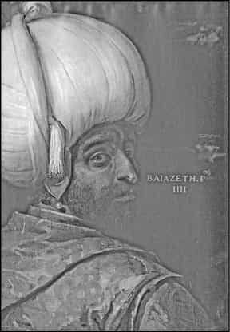
I. Bayezid.
Bu noktada şu suallerin cevapları önem kazanır: Lojistik destek dışında bu üstünlüğün 15. yüzyılda belirmesi ve 17. yüzyılda da birkaç istisna hariç sürdürülmesinde, silah teknolojisindeki dönüşümün ve taktik yeniliklerin payı var mıdır? Bunun cevabı Avrupa tarihçiliğince Osmanlı tarafının genellikle ihmal edildiği bir düzlemde ele alınan ve ateşli silahların kullanımının yaygınlaşmasıyla başladığı ileri sürülen askeri dönüşüm veya yerleşmiş tabiriyle “Askeri Devrim” kavramı15 içinde aranabilir mi? Bu soruların daha iyi anlaşılması ve cevapları için hiç şüphesiz Osmanlılar tarafından ateşli silahların ne zaman, nasıl ve hangi ölçüde kullanıldığı konusu üzerinde durmak gerekmektedir.
Osmanlıların askeri gücü ve silah sanayini, özellikle ateşli silahlar çerçevesinde ele alan G. Ágoston, ateşli silahların Osmanlı askeri gücüyle bütünleşmesinin tarihini 15. yüzyıla indirerek bu konuda Avrupa merkezli ve ondan mülhem oryantalist görüşleri sorgulamış ve Osmanlıların bu hususta İslamın aşırı muhafazakârlığının esiri olmaktan uzak olduğunu belirtmiştir. Osmanlılar Batı’nın askeri teknolojisini kabule hazır olup bunu daha da geliştirmişler ve seri üretimle, çok üstün lojistik teşkilatlarını bütünleştirerek 15. yüzyıl ortalarından itibaren Avrupalı hasımlarına karşı açık bir ateş üstünlüğü kazanmışlardır. 18. yüzyıl sonlarına kadar Avrupa’da ateşli silah teknolojisinde devrimci bir yenilik olmadığı için batının teknolojisi ve metotlarının transferiyle ve bundan da önemlisi, lojistik gücüyle onlara 17. yüzyıl sonuna kadar ayak uydurabilmişlerdir16.
Bu ifadeler, lojistik gerekçeleri bir tarafa bırakırsak, ateşli silah kullanım ve teknoloji ithali konusunda belirli bir çerçeve çizer, genel anlamda tarihi belgelerle uyum sağlar. Söz konusu tartışmalara katılan Grant’ın, K. Krause tarafından askeri teknolojinin yayılım seyrini formüle eden üç ana unsur üzerine kurduğu yaklaşımında Osmanlılar üçüncü safhada, yani var olan teknolojik birikimi kullanan, fakat bunların altında yatan sistem ve dinamiklere hâkim olmayan siyasi güçler kategorisinde değerlendirilir17. Bu konuda öne sürülen argümanlar ise Osmanlı kaynaklarından habersiz olarak tamamen Batı kaynaklarına dayanır. Hâlbuki Osmanlılar “devrimci” nitelikli icatlar yapmaktan çok, askeri teknolojiyi ithal ederek kendi bünyesi için uygun hale getirdiği gibi geliştirme ve bunu başka ülkelere yayabilme başarısını da göstermiştir. Bu sonuncu keyfiyetin ise “devrimci” bir yenilik olup olmayacağı Osmanlı belgelerinin tanıklığına muhtaçtır. Burada askeri silahların kullanımı konusundaki Osmanlı yaklaşımının ortaya konması, gerek bu tartışmada, gerekse biraz ileride üzerinde durulacak olan “Askeri Devrim” meselesinde onların yerlerini belirleyecek bir önem arz eder.
Osmanlılarda İlk Ateşli Silahlar
Osmanlılarda ilk ateşli silahların ne zaman kullanıldığı konusu erken tarihlerden beri tartışma konusu olmuştur. Bazı Osmanlı kaynaklarında ilk top kullanımı ile ilgili bilgilere I. Kosova Savaşı (1389) sırasında rastgelinir. Fakat bunun doğru olma ihtimali zayıftır. Ancak bu durum Osmanlıların topu bilmedikleri, tanımadıkları anlamına gelmez. Zira bu silah daha çok kale kuşatmalarına ve kalın surların yıkılmasına dayalı bir gelişme seyri göstermiştir. Aslında barut ve ateşli silah bilgisi de Batı’nın –J. Grant’ın deyimi ile- “devrimci” bir keşfi değildi. Avrasya’da Çinliler ile olan temaslar sonucu ticaretin de rolüyle yayılmıştı. 1230’larda Moğol ordusu barut temelli silahları biliyordu; 13. yüzyıl ortalarında bunu İran, Irak, Suriye ve Anadolu’ya getirdiler. İslam ülkelerinde ise bilhassa Endülüs-Granada’da 1320’li yıllarda, Memlüklerde 1360’lı yıllarda top ile ilgili kayıtlara rastlandığı üzerinde durulursa da bunların geç tarihli kaynaklara dayalı bilgiler olduğu ileri sürülmüştür18. Avrupa’da ilk top kullanımı için verilen 1284 ve 1313 tarihleri de yine benzeri problemlerle karşı karşıyadır. Ancak 1320-1330 yıllarında kuşatmalarda top benzeri bir silahın kullanıldığına inanılır. 15. yüzyılın başında yine topla ilgili bazı kayıtlara rastlanır, fakat asıl dövme demir ve tunç dökümü topların kale kuşatmaları için hazır edilmeleri, yüzyılın ortalarına doğrudur. Cipolla, Floransa resmi belgelerinde 1326’da demir gülle atan pirinç toplara rastlandığını, 1327’de bunlarla ilgili bir minyatürün bulunduğunu belirtir. 1330’lu yıllardan itibaren de artık yayılmaya başladığını Petrark’a (1350’li yıllar) dayanarak ifade eder19.
Bazı yazarlar ateşli silahların Balkanlar kanalıyla Osmanlılara geldiği konusunda hem fikirdirler20. 1351’de Venedikliler Macar saldırılarına karşı güçlerini artırmaları için Zara şehrine sekiz top yollamalarıyla Balkanlar’a giren topu Dubrovnikliler 1378’de imal etmeye başlamış ve hatta 1389’da Sırplar Osmanlılara karşı I. Kosova Savaşı’nda top kullanmışlardır21. Bunun benzeri şekilde Osmanlıların da topu bu tarihte tanıdıkları, hatta ilk topu yine I. Kosova Savaşı’nda kullandıkları ileri sürülmüştür. Türlü iddialara rağmen Osmanlıların topu en erken Yıldırım Bayezid’in İstanbul Kuşatması’nda (1392-1402) kullanmış olduğu ağırlıklı şekilde benimsenmiştir. 1422 İstanbul ve 1430 Selanik kuşatmalarında Osmanlı ordusunda topların bulunduğuna artık şüphe yoktur. Hatta dönemin çağdaş Bizans tarihçisi L. Chalkokondyles (ö.1470 civarı) II. Murad’ın İstanbul Kuşatması sırasında top kullanması vesilesiyle bu ateşli silah hakkında bilgi verirken bunun nasıl bir alet olduğunu açıklama ihtiyacı hissetmiştir22. Topun korkunç gürültüsünden savaşlarda çok yararlanıldığını bildiren tarihçi, Semendire Kuşatması’nda topun yıkıcı etkisinin olmadığını, Belgrad Kuşatması’nda ise top ateşine şehir halkının alışık bulunmasından dolayı bir problem yaşanmadığını yazmıştı. Topun sahrada kullanımı için ise 1440’lı yılları beklemek gerekecektir. Nitekim II. Murad Boğaz’dan karşıya geçerken kendisini engellemeye çalışan Burgundiya ve Bizans gemilerini top ateşine tutturmuştu23. Denizde hareketli bir hedefe yapılan atışların özel bir beceri ve teknik bilgi gerektirmesi, Osmanlı topçuluğunun gelişiminin mahiyetini göstermesi bakımından manidardır. Burgundiya gemilerinin başında bulunan yeğeni Waleran’ın anılarını kaleme alan çağdaş yazar Jehan de Wavrin (ö.1474 sonrası), Osmanlıların topları hemen orada dökmüş bulunduklarını, batı yakasındaki bataryaları ise Cenovalılardan aldıklarını, yine Cenova’nın Osmanlılara top temin ettiğini ileri sürer. Ayrıca II. Murad’ın en az 43 inç çapında gülle atan büyük bir bombart ile de gemileri ateşe tuttuğunu belirtir24.
Varna Savaşı’nda Macarların “wagenburg” savunma sistemi (arabalarla oluşturulan savunma hattı), Osmanlılar için meydan muharebe usulleri açısından belirleyici olmakta gecikmedi. Muhtemelen bu tarihten itibaren meydan savaşlarında sahra topları, hafif toplar ve tüfeğe benzer silahlar (arkebüz) kullanımı gündeme geldi. II. Kosova Savaşı sırasında Osmanlıların top ve tüfekle takviye edilmiş ana merkezi, savaşın kaderinde etkili oldu. Burada arabalarla takviye edilmiş savaş sistemi, sahra topçusu ve tüfekçilerle desteklenmekteydi. Sahra topçusu ve wagenburg savunma tertibatı, daha önce Bohemya’da Husçular (1419-1436) tarafından kullanılmıştı. Osmanlılar da bunu kendi ana sistemlerinin bir parçası haline getirdi, yani top, tüfek ve arabalar ekleyerek mevcut ana “seyyar kalesi”ni daha da güçlendirdi. Böylece “tabur cengi” kavramı üretilmiş oldu25. Savaşlarda artık top ve tüfek ordunun vazgeçilmez silahları haline gelmiş bulunuyordu. Fakat 16. yüzyılın yirmili yıllarında bile bazı çağdaş Batılı yazarların ateşli silahlarla ilgili savaş sistemini önemsemedikleri dikkati çeker. Nitekim N. Machiavelli topun meydan savaşlarındaki işlevine pek sıcak bakmaz, “mukhail” diye adlandırdığı tüfekçilere ise planlarında neredeyse hiç yer vermez26.
Meydan savaşlarında Osmanlılar daha çok yukarıda da belirtildiği gibi hafif türden sahra topları kullanmışlardır. Götürdükleri top sayısı 150-200 arasında değişmektedir. Genellikle top ateşiyle savaşları başlatmışlar ve bunu savunma hatlarının önüne yerleştirmişlerdir. Ancak başlangıçta meydan savaşında saldıran süvariye karşı toplar çok da etkili sonuç sağlamamaktaydı. Nitekim 16. yüzyılın ortalarında İspanyol gözlemci, topun fazla işe yaramadığını, verdiği zararın önemsiz olduğunu, esas işi bilek ve tüfeğin gördüğünü belirtir27. Osmanlı sahra topları yaygın olan inanışın aksine ağır değil, küçük ve orta çaptaydı. 16. yüzyılda 10-27 kg. ağırlığında gülle atan toplar daha çok tercih edilir olmuştu.
Kanon, havan, şayka, balyemez, bacaluşka gibi büyük kuşatma topları dışında, meydan savaşlarına sevk edilen sahra toplarının “kulverin” tipte olduğu bilinmektedir. Bunlar içinde kolunburna 2 ila 3 metre boyunda 2-9 kg ağırlığında gülle atan uzun menzilli toplardı. Sahrada çok yaygın olarak kullanılan ve büyük (şâhî), orta (miyâne) ve küçük olmak üzere üç tipe ayrılan “darbzen” nakliyesi kolay olduğundan çok rağbet görüyordu. 1522-25 yılları arasında dökülen çok sayıda darbzen Mohaç’a götürülmüştü. 1566 Zigetvar Seferi’ne 280 büyük darbzen taşınmış; Eğri Seferi için ise 300 büyük tipte darbzen dökülmüştü. Darbzen tipi topların uzunlukları 88 cm ile 100, 130, 150, 350 cm arasında değişebiliyordu. Gülle ağırlıkları 154-921 gr.dan 1, 2 ve 2,5 kg.’a kadar yükselebiliyordu. Bunlar kolayca nakledilebiliyor, bir deveye iki tane darbzen yüklenebiliyordu. Bunların haricinde şâhi denen toplar, uzun tipte sahra topu özelliği taşıyordu. Uzunlukları 2,5 ile 3,5 m.’yi bulabiliyor, attığı gülleler ise 150 gr.’dan 1,5 kg.’a erişebiliyordu. Bunlar uzun menzilli toplar olarak tesirli idi. Diğer küçük tipte top çeşitleri ise saçma, eynek, prangı, misket ve şakaloz idi. Bunların bazıları tüfekten biraz daha irice olup elde de kullanılabilecek evsaftaydı. Mesela prangılar 150 gr. ağırlığında dane atıyordu. Şakaloz adı ise Macarcadan gelme olup tam bir tüfek irisiydi. Kancalı tüfek de denen bu silahı Osmanlılar kundağa yerleştirmişlerdi. 12-37 gr. ağırlığında kurşun atıyorlardı ve yakın menzilde etkiliydiler28.
İlk Tüfekler ve Tüfekli Birlikler
Osmanlı kaynaklarında orijinal tabiriyle tüfek/tüfeng diye adlandırılan silah, elde tutulan boru şeklindeki içi boş demir parçasını işaret etmektedir. Kelime Divânu Lügatü’t-Türk’de rastlanan “tüvek” tabirine dayanır. Elde tutulan bu ateşli silah için Osmanlıların çoğu defa yaptıkları gibi Macar veya Sırpların verdiği adı değil de kendi dillerine has bir terminolojiyi bulmuş olmaları, bunun orijin itibarıyla Osmanlılara geçişine ilginç bir açıklık sağlayabilir. Bu tür silahların belki de ateşli olmayan bir tarzda üflenerek veya bir itme mekanizmasıyla içindeki küçük taş tanelerini fırlatma tekniğine dayalı şekilde biliniyor olması mümkündür. Daha sonra benzerleri gibi buna barut konularak geliştirilmiş şeklinin Balkanlarla temas sonucu görülerek benimsenmiş olması da muhtemeldir. Her ne olursa olsun ilk tüfek kullanımı ile ilgili veriler (1421, 1430, 1442-1444) zayıftır. Tüfeğin henüz tam olarak yaygın bulunmadığı bir çağda yaşayan Ebubekir Tihrani’nin (ö.1480 dolayı) 1407’de Memlük-Akkoyunlu savaşında, Memlüklerin top ve tüfekleri olduğunu yazması ilginçtir29. Bu bilgiyi tekrar eden 16. yüzyıl Safevi tarihçisi Hasan-ı Rumlu (ö.1577) o zamana kadar tüfeğin henüz icat edilmediğini belirterek, ortaya çıkışı hakkında bir söylentiyi nakleder30. Burada kastedilen tüfeğin küçük bir çeşit top olma ihtimali yüksektir, ancak önemli olan husus “tüfeng” kelimesinin orijinal metinde zikredilmesi ve bu terminolojinin bir ateşli silah türü için kullanılmış olmasıdır.
Osmanlıların II. Kosova Savaşı’nda tüfek cinsi bir silahı kullandıkları kesindir. Bu silah arkebüz tarzında küçük bir top cinsi olmalıdır. Belki de şakaloz denilen daha kalın namlulu küçük top için bu ad kullanılmıştır. Buna bir kundak ilavesiyle elde taşıma mümkün olabildiği, ancak desteksiz, omuza dayayarak yahut iki elle tutarak ateşlemenin geri tepme hızı yüzünden mümkün bulunamayacağı düşünüldüğünde, araba üzerinde destekli olarak veya kalelerde müdafaa amaçlı kullanıldığı söylenebilir. Bugünkü tüfeğe benzeyen ilk örneklerin 15. yüzyıl boyunca geliştirilmiş şekle dayandığı anlaşılmaktadır. Bu ilkel tüfeklerin fitilli ve tetiksiz ateşleme mekanizmasına sahip olduğu bilinmektedir. Müzelerde bu ilk tüfek tipi hakkında bir örnek mevcut değildir. Macaristan Askeri Tarih Müzesi’nde kundaksız olup 15. yüzyıldan kalma şakaloz namluları mevcuttur. Fakat bunların nasıl kullanıldıkları -yani kundaklarının olup olmadığı, bir dayanak üstüne nasıl yerleştirildikleri vb. gibi- konusu problemlidir. Bazı hayali çizimlerde bunlar bir çatal üzerine konmuş olarak resmedilmiştir. Bununla birlikte İbrahim Hakkı Konyalı, Askeri Müze vaktiyle Aya İrini Kilisesi’nde iken bir şakalozu tahta kundağıyla birlikte tesbit ederek bunun fotoğrafını yayımlamıştır. Bunun ilkel tüfek tipinin ilk örneği olma ihtimali yüksektir. Sadece fotoğrafları mevcut olan bu tüfek bugün Harbiye’ye taşınmış bulunan Askeri Müze’de sergide değildir31. Fotoğrafından görülebildiği kadarıyla söz konusu silah, Bizans tarihçisi Dukas’ın, II. Murad’ın Belgrad Kuşatması sırasında kale müdafilerinin kullandıkları bir silahı tarif ederken anlattığı ilkel tüfek tipiyle büyük ölçüde benzeşmektedir. Bu anlatım şakaloz denilen küçük topları da çağrıştırır:
Bu silah bakırdan yapılmıştı. Kamış şeklinde bir borunun içine, fındık büyüklüğünde sıra ile dizilmiş kurşundan mamul beş veya on adet mermi konulur, arkasına güherçile, kükürt ve söğüt ağacı kömürü tozundan mahlut bir terkip (yani barut) eklenir. Bir ateş kıvılcımı bu terkiple temas edince, hemen ateş alır, havayı, hava da mermileri tazyik eder ve bu suretle hasıl olan kuvvet mermileri bir mil uzağa fırlatır. Bunlar değdikleri insanı, zırhı bile olsa deler geçer. Bu kuvvet o kadar büyüktür ki bir adamı deldikten sonra bir diğerini de delip geçebilir32.
Osmanlılarda tüfekle ilgili ilk resmi kayıtlar, konuyla ilgilenen diğer tarihçilerin de tespit ettikleri gibi İstanbul’un fethi sırasında ve sonrasında tutulan tahrir defterlerinde yer alır. Bu kayıtlar tüfek ve tüfekçilerin 1455 gibi erken bir tarihte özellikle sınır kaleleri ve önemli istihkâmlarda bulunduklarına delalet eder. Mesela söz konusu tarihte Üsküp kalesinde, Tetova’da Sobri Kalesi’nde ve Novaberda (Novobrdo), Resava ve Güvercinlik (Golumbac) kalelerinde tüfek mevcuttu. Üsküp Kalesi’nde 41 yay, 15.000 ok, 4000 demren/mızrak ucu, 23 çeğre/çekre (kurmalı büyük yay), 4000 çeğre demreni, 70’i Türk, 200’ü Macar tipi kalkan, çeşitli zırh parçaları yanında, ateşli silah olarak 12 top ile bunun 125 kurşun güllesi ve 148 tüfek ile bunun 4000 fındığı/mermisi bulunuyordu. Ayrıca barut imali için 8 kantar iyi, 7 kantar da ham güherçile ile 3 kantar kükürt mevcuttu33. Aynı tarihte Sobri’de 4 top 2 tüfek sayılmıştı34. Haziran 1455 tarihli kayıtlara göre, Novaberda Kalesi’nde 3 büyük top, 5 prangı tipi küçük top, 55 tüfek vardı. Kalede zenberekçi (kurmalı yay kullananlar), topçu ve tüfekçi muhafızlar görev yapıyordu. Stefan adlı Sırp muhafızın başında bulunduğu 11 Hıristiyan tüfekçi yanı sıra burada 10 yeniçeri tüfekçisi görevlendirilmişti35. Bu durum tüfekçilerin Balkanlardaki kalelerde sadece Sırp ve Osmanlıların Hıristiyan vasallerinden oluştuğu yolundaki bilgileri tashih edecek önemi haizdir. Ayrıca bir bölüm yeniçerinin 1455 gibi erken bir devirde tüfekle donatılmış olma keyfiyetini de ortaya koyar. İsimleri tespit edilen bu ilk tüfekçi yeniçeri grubunun da köken itibarıyla neredeyse yarım asırdan fazla Osmanlı idaresi altında kalıp Türkleşmiş ve İslamlaşmış Batı Trakya ve Makedonya kökenli oldukları dikkati çeker (Serezli Saruca, Arnavut Şahin, Ali Kethuda, Laz Yusuf, Holondili Süleyman, Üsküplü Mustafa, Tırnovili Hamza, Serezli Balaban, Dramalı Yusuf ve İsmail). Bunların haricinde Güğercinlik Kalesi’nde Bukraniç adlı birinin liderliğinde 10 kişilik tüfekçi bölüğünün görev yaptığı tespit edilmektedir36. 1451-1476 yılı kayıtlarını ihtiva eden bir defterde, İvranya kalesinde 16 tüfek, 10 top37; 1467’de Resava’da ulufeli 10 Sırp tüfekçi38, 1488’de 50 topun bulunduğu stratejik önemi haiz Semendire kalesinde tüfekçibaşı Marko idaresinde 40 Hıristiyan tüfekçi görev yapıyordu. Bu sonuncular, Oliver, Radovan ve Yuvan adlı üç odabaşının emrinde 9 kişilik gruplar halindeydi39. Bu ise merkezdeki yeniçeri teşkilatının onlu tüfekçi gruplardan oluştuğu konusunda bir delil teşkil eder.
Söz konusu bilgiler öncelikle Osmanlı askeri teşkilatı bünyesinde tüfeklerle mücehhez daimi bir birliğin oluşmasının en geç 1455’e kadar indirilebilecek bir geçmişi olduğunu gösterir. Bununla birlikte tüfek ve top kalelerin asli silahı gibi görünmektedir. Bunların sahrada kullanımının ise özel bir talim gerektirdiği sarihtir. Burada mesele söz konusu yeniçerilerin tüfeklerini meydan savaşlarında kullanıp kullanmadıklarında düğümlenir. Ancak bir Venedik raporu bu duruma kısmen de olsa bir açıklık getirir. Papa V. Nicolo’nun adamı olup İstanbul’un düşüşünden sonra Türklere karşı ne gibi tedbir alınacağına dair bir rapor yazan Lampo Birago, muhtemelen 1453-1455 yılları arasında Kardinaller meclisinde görüşülen yazısında Osmanlı ordusu hakkında bilgi verirken 50 bin süvari, 10 bin yeniçeri yanında iyi teçhiz edilmiş 4000-5000 kapıkulu sipahisinden oluşan asker mevcudu içinde yeniçerilerin öne çıktıklarını, harp sırasında fevkalade savaşçı olduklarını, üst göğüs ile omuzlarında zırh parçaları dışında başka ağır bir giysilerinin bulunmadığını; sol omuzlarına Eflak tipi küçük kalkan koyduklarını, çok iyi ok atıcısı olup ayrıca küçük bir de kılıç taşıdıklarını belirtir ve bunların çoğunun İstanbul’un fethinden sonra tüfekle donatıldıklarını bildirir40. Tüfek Birago için de yeni bir silah türüdür. Nitekim çok gürültü çıkaran bir harp aleti şeklinde tanıttığı tüfeğin eskiden kimse tarafından bilinmediğini, kurşun tanesi atan bir silah olduğundan Rumların buna “molibdoboli” dediklerini bildirmekten kendini alamaz. N. Machiavelli bile tüfeğin çıkardığı sesin buna alışık olmayanlar üzerinde moral bozucu etki yapması dışında herhangi bir sonucu tayin edici özelliğinden söz etmez. Onun bilgileri, Batı ordularının tüfeğe dayalı bir sistemi öne çıkardıklarını göstermez. Hatta kendi döneminde “Büyük Türk [Yavuz Sultan Selim] İran şahını ve Suriye sultanını mukahillerin gürültüsüyle şaşkına çevirmiş ve böylece düşman ordularını dağıtmıştır. Mukahillerin çıkardığı o alışılmadık sesler karşı tarafın atlarını ürkütmüş ve bu şekilde Büyük Türk kolay bir galibiyet elde etmiştir” diyerek41 tüfeğin ateş gücü etkisini önemsizleştirirken, bir bakıma niyeti bu olmamasına rağmen, Osmanlı tüfek kullanımının batıdan daha üstün bir durumda olduğu konusunda ilginç bir ipucu sağlar.
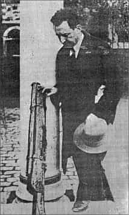
İ.H. Konyalı ve Askerî Müze’de tespit ettiği ilk tüfek tipi (Tarih Hazinesi)
Muhtemelen onarlı gruplar halinde teşkilatlanmış tüfekçi yeniçeri birliği, Uzun Hasan ile yapılan 1473 Otlukbeli Savaşı’nda mühim rol oynadılar. Bu dönemden itibaren artık giderek seçkinleşmiş bir birlik haline geldiler. Batı’da daha çok soylu olmayan aşağı kesime mensup kişilerden tüfekçiler teşkil edilir, asilzade ve şövalyeler bu silaha hiç itibar etmezlerken, Osmanlılarda padişahın en seçkin muvazzaf askerlerinin önemli bir bölümünün tüfekçilerden oluşması dikkat çekicidir. 1506 yılında eserini tamamlayıp II. Bayezid’e sunan Osmanlı tarihçisi İdris-i Bitlisî, II. Mehmed dönemi askeri teşkilatından söz ederken yeniçerilerin en seçkin askerler olarak tüfekle donatılmış olduğunu, böylece savaşlarda hasımlarına büyük bir korku saldıklarını belirtmektedir42. Tüfekçi birliklerinin II. Bayezid döneminde daha da geliştirildiklerini tahmin etmek zor değildir. Modon-Koron kuşatmaları, Çukurova’da Memlüklerle yapılan savaşlarda küçük yeniçeri tüfekçi birliklerinin devreye sokulduğu bilinmektedir. 16. yüzyılda tüfekli yeniçeri sayısı sabit hale gelmiş ve daha da çoğaltılmıştır. Harbe sevk edilen 7000 yeniçeri içinde en az 4 bini tüfeklilerden müteşekkil durumdadır. Bu tüfekçi yeniçeriler o kadar ihtisaslaşmışlardır ki bu silahı edinmek isteyen komşu ülkelerde de çeşitli yollarla hizmete alınmışlardı. Küçük bir örnek Çaldıran Savaşı’ndan hemen sonra Şah İsmail’in oluşturmaya çalıştığı tüfekçi birliği ile ilgilidir. Şah İsmail 1515’te Mirza Şah Hüseyin adlı tüfekçibaşısı emrinde 2000 tüfekli askeri birlik oluşturmuşsa da bu karma askerlerden meydana gelen tüfekçiler, tüfek atmakta büyük problem yaşamaktaydılar. Osmanlılarca yakalanan bir casusun sorgusu sırasında, bu şahıs söz konusu birliğin içinde Osmanlı ordusundan kaçıp gelmiş yirmi yeniçerinin dışında hiçbirinin tüfek atmak sanatıyla ilgisinin bulunmadığını söylemiş, hatta “kiminin gözünü, kiminin yüzünü” yaktığını belirtmiştir43. Safeviler ancak Şah Abbas zamanında 16. yüzyılın sonlarında Osmanlı benzeri “gulam” sınıfından daimi bir tüfekçi birliğini oluşturacaklardır. Kırım Hanı Sahib Giray da 1539-1540’da Ejderhan’a ve Nogaylara düzenlediği sefere 20 darbzen ve 1000 tüfekli yeniçeri ile çıkmıştı. Yeniçeriler atlı Nogayları yaylım ateşle bozguna uğratmıştı.44Yine yeniçeri tüfekçilerinin Doğu’daki bazı Müslüman devletlerin ordularında görev yaptıkları da bilinmektedir. Öte yandan Batı’da ise bazı başarısız teşebbüsler hariç daimi-düzenli birliklerin oluşumu için Otuz Yıl Savaşları’nı (1618-1648) beklemek gerekecektir. Osmanlı kapıkulu süvarileri ise tüfekten çok kompozit yayları etkili şekilde kullanma geleneğini 17. yüzyıl ortalarına kadar sürdürmüşlerdir. Bunda, aşağıda temas edileceği gibi Osmanlı süvarilerinin tüfeğe karşı gösterdikleri isteksizliğin de rolü olabilir.
Osmanlılar tüfeği sadece ithal etmiyor, büyük oranda imâlini de gerçekleştiriyordu. Muhtemelen Osmanlı tüfeği kendisine has bir şekil kazanarak batı tarzı daha büyük tip tüfekten ayırt edilir hale gelmişti. 16. yüzyılın ilk yarısına ait bazı veriler bu hususu açıklığa kavuşturur. Tüfek imâlinin İstanbul yanında imparatorluğun doğu topraklarında, mesela Şam’da, Kuzey Afrika’da Cezayir’de, Mısır’da yapıldığı anlaşılmaktadır. Şüphesiz satın alımlar dışında savaşlar kanalıyla da top ve tüfek Osmanlı silah sistemine giriyordu. Bunlar genellikle silahhânede tamir edilerek yenilenirdi.
Eldeki en eski belgelere göre, Osmanlı saray teşkilatında ehl-i hiref grupları içerisinde “cemaat-i tüfengciyân” başlığı altında tüfek imal ve tamir eden ustaların bulunduğu dikkati çeker. 1526 tarihli bir listede on ustanın kaydedildiği görülmektedir45. Bunların içerisinden bazıları II. Bayezid döneminden beri tüfekçi olarak hizmet etmektedir. Bu on kişi arasında ilk sırada zikredilen şahıs Gorda adlı birisidir. Bunun adının yanına Rus ve “gebr” kaydının düşülmüş olması, Hıristiyanlığını koruduğunu ve Rus asıllı olduğunu hatıra getirir. Bununla beraber buradaki Rus tabirinin ırki bir nisbet olmaktan çok kuzey ülkelerinden gelenler için kullanılmış olması muhtemeldir. Bu şahsın 9 Şevval 910/15 Mart 1505 tarihinde kapıağası tarafından hizmete alındığına dair kayıtlar mevcuttur46. Bu durumda Gorda’nın yirmi yılı aşkın bir süre Osmanlı hizmetinde çalıştığı söylenebilir. Diğer tüfekçiler içerisinde kardeşi Gregor ile Hüdâdad ve Ferhad adlı müslüman olmuş iki yardımcısı daha bulunmaktadır. Bu adı geçenlerin Gorda’yla birlikte hizmete alındığı açıktır. Daha sonra bunlara Kanuni döneminde beş Yahudi (Musa, Simon v. İsak, İsak, David, Mordehay) ve bir Rus (İvan) tüfek ustası daha katılmıştır. Tüfeğin Osmanlı askeri sistemine çok önceleri girdiği düşünülecek olursa, bu ustaların Osmanlı tipi tüfeğin gelişiminde oynadıkları rol hakkında kati bir sonuca varmak zor görünmektedir. Nitekim 8 Zilkade 909/23 Nisan 1504 tarihli bir kayıtta, Dergâh-ı âli topçularından Firuz Bey’in tüfek getirdiğine dair bir kaydın mevcudiyeti ayrıca düşündürücüdür47. Ancak en azından bütün bunlar hafif tipteki Osmanlı tüfeğinin bu tarihlerde geliştirilmiş olduğu ihtimalini destekler.
Cebehaneden yeniçeri ve kapıkulu için götürülen silah çeşit ve miktarları ile ilgili bazı listeler de bugüne ulaşmıştır. Özellikle Rodos, Mohaç, Irakeyn seferlerine ait listeler dikkat çekicidir. Bunlar seçkin daimi birliklerin silah ve malzeme mevcudunu göstermeleri bakımından önemlidir. Listelerde zırhlar, tolga, diğer kesici ve delici silahlar ve bazı teknik malzeme teker teker tadat edilmiştir. Rodos Seferi ile alakalı listede 1.890 bin ok, 18 bin zemberek oku, muhtelif büyüklükte yay, zemberek, 1000’i uzun tipte meteris tüfeği ile bunun 1000 adet ayağı/desteği, elde tutulabilecek ve omuza dayalı olarak ateşlenebilecek 4005 tüfek, bunlara ait 4.800 bin adet kurşun, 150 bin uzun tüfek kurşunu, ayrıca tüfek aksamı olarak vezneler, kundaklı deve prangısı (küçük tipte top) kaydedilmişti48. Bu bir kuşatma seferi olduğundan yeniçeri ve kapıkulunun çok fazla malzeme almış olmaları tabiidir. Mohaç savaşıyla ilgili listede ise tüfek sayısı 4 bini normal, 60’ı uzun tipte 4060’tır. Buradaki uzun tip tüfek meteris tüfeği olmalıdır. Diğerleri tamamen hafif tipte rahatça taşınabilen ve omuza dayanarak ateşlenebilen fitilli tüfeklerdir. 4 bin tüfek veznesi 3 milyon tüfek fındığı da bunların aksamı olarak zikredilir49. İbrahim Paşa Irakeyn seferine çıkarken de yanındaki yeniçerilere ait 300’ü uzun, 420’si kısa 1020 tüfek götürmüştü50. Ancak burada uzun olarak tarif edilen tüfeklerin yukarıda bahsi geçen meteris tüfeği olmayıp, diğerlerinden farklılığı vurgulanmak üzere zikredilen daha uzun menzilli silahları gösteriyor olmaları mümkündür. Nitekim İbrahim Paşa’nın arkasından hareket eden Padişahın yanındaki yeniçeriler için götürülen 4 bin tüfekten 1000’i uzun tipte idi. Burada tüfeklerin ölçüsü de verildiği için bu silahların durumunu göz önüne getirmek mümkün olabilmektedir. Buna göre uzun tüfeğin namlu boyu 5 karış olup 5 dirhem ağırlığında fındık atabilirdi. Kısa tüfek ise 4 karış boyunda olup yine 5 dirhem ağırlığında fındık alıyordu.
1555 tarihli bir kayıtta ise, cephaneye giriş yapan 2498 adet yeni tüfeğin 4 karış boyunda 4 dirhemlik kurşun alır namlu çapında olduğu belirtilmişti51. Bunların tüfekhane-i hassadan geldiklerine de işaret edilmiştir.
Şu halde bu ölçüler daha 16. yüzyılın ilk çeyreğinde Osmanlı tüfeklerinin son derece kullanışlı, küçük tipte, hafif silahlar olduğunu destekler. Zira bu rakamlara göre uzun tip tüfeğin namlu boyu 110-115 cm, kısa olanlar ise 88-92 cm idi52. Bu sonuncu tip yani kısa tüfek sayısı daha fazlaydı. Her iki cinsin attığı fındık/kurşun 16 gr. ağırlığında olduğuna göre namlu çaplarında (çapı 13-14 mm) standartlaşma sağlanmış olmalıdır. Aynı dönemlerde İspanyol tüfeklerinin namlu çapı 18-22 mm olup 56-57 gr. fındık atıyordu ve ağırlığı 8 kg. geliyordu. Diğer Avrupa tüfekleri 120-150 cm. boyunda, 2,5-4,5 kg. ağırlığında ve 14-18 mm çapındaydı53. Bu durumda Osmanlı tüfeği her şeyden önce kendine has bir tip ortaya koymuş ve hafifliği ile pratik kullanımıyla öne çıkmış olmalıdır. Osmanlı meteris tüfeklerinin ise namlu boyu 130-160 cm dolayında değişiyordu, çapı 20-29 mm idi, ağırlığı 3-4,5 kg.dı. Marsigli, 17. yüzyılın son çeyreğinde Türklerin kendi imalatı olan tüfeklerin 6, 9, 12, 15, 25 dirhem ağırlığında kurşun attığını bildirir54. Bütün bu bilgilerden hareketle muharebe hattında yeniçerilerin üç tip tüfekle mücehhez oldukları anlaşılır. Meteris tüfekleri daha uzun menzilleriyle ayrı bir görev icra ederken uzun ve kısa diye ikiye ayrılan normal el tüfekleri saf düzeni içindeki dizilişi de belirliyor olmalıdır. Aynı ağırlıkta mermi atmalarına rağmen boyları değişen bu tüfeklerden uzun olanlarının daha uzak menzilli olması dolayısıyla ön safta ateşlendiği, menzilleri daha az olması gereken kısaların ise arka saflarca kullanıldığı söylenebilir. Bu hususa ileride tekrar temas edilecektir.
Tüfeklerin gelişim çizgisinde ateşlemeyi pratikleştiren tetik tertibatının Türk tüfekleriyle ortaya çıktığı üzerinde durulmaktadır. Yani yılankavi tetik mekanizmasının mükemmelleştirilmesi Osmanlı eseri ve teknolojik katkısı olarak sunulmaktadır55. Nitekim Venedik kaynaklarına göre Türk tüfekleri yılankavi bir mekanizmaya sahipti, bu ateşleme sistemine fitil yerleştirilerek barutun ateşlenmesi sağlanıyordu. Bu bakımdan müzelerde teşhirde bulunan süslü ve çoğu uzun meteris tipi geç tarihli Osmanlı tüfeklerine bakarak bunların tamamının ağır ve hantal olduğu genellemesinde bulunmak doğru değildir. Osmanlı tüfekleri hafiflikleri ve etkili kullanımıyla geniş bir yayılım sahası da bulmuştur. Özellikle 16. yüzyılın erken dönemlerinde Safevilere56, Hindistan’daki Müslüman devletlere57, hatta daha da ötede şöhreti Çin’e kadar uzanmıştır. Çin’de Osmanlı tüfeği ile Portekiz tüfeği rekabeti yaşandığına dair tevsik edilebilen bilgiler mevcuttur58. Yani kendine has bir tipolojiye sahip Osmanlı tüfeği rakipleriyle dış piyasada rekabet edebilecek düzeye erişmiş bulunuyordu. Bununla birlikte acil ihtiyaçların dışarıdan ithal yoluyla da karşılandığı bilinmektedir. Şehzade Selim’in (II.) kardeşiyle olan mücadelesinde, muhtemelen daha ağır tipte olan 500 kadar Alman arkebüzü temin etmek üzere Venediklilere başvurduğu, fakat bu teklifin reddedildiği anlaşılmaktadır59. Bu durum ağır tipte tüfek temininin önemine işaret eder. Bununla birlikte Osmanlı tüfek çeşitleri ve adlandırmasıyla ilgili ayrıntılı bilgiler bulunmamaktadır. Bir vezirin cebehanesi içinde rastlanan tüfek çeşitleri, Cezayirî, Frengî (Batı imali), Rumî (Osmanlı imali), İstanbulî, Macarî, Alaman, Macarî zemberekli, Moton işi olarak belirtilmişti; içlerinde Cezayir tipi olan tüfekler ağır tipte 25 dirhemlik kurşun atıyordu60. IV. Murad’ın meşhur musahibi Silahdar Mustafa Paşa’nın hediye defterinde ise çok çeşitli silahlar arasında tüfek ve tabancalara da rastlanır. Mart 1636 /Şevval 1045 tarihli defterde görülen tüfek çeşitleri olarak şunlar belirtilir: 15 dirhem kurşun atan iyi tüfek, sarı kundaklı 10 dirhem atar tüfek, işlemeli süslü tüfekler (cevherdar tüfek), Cezayir tüfeği, Nalpâre yaldızlı büyük tüfek, Küçük çarklı tüfek (muhtemelen tabanca tipli), Ejder ağızlı sarı tüfek (19 dirhem atar), Şeşhaneli (küçük tipte, namlusu yivli) tüfek (9,5 dirhem atar), Kaval tüfek (20 dirhem atar), Armudi başlıklı Cezayir tüfeği, Nalpâre tokmak tüfek, Nalpâre Macar tüfeği, Arpacıklı Cezayir tüfeği, İkisi bir kundakta tüfek (muhtemelen çifti namlulu), Tabanca tüfek61.
Tabanca kullanımı 17. yüzyılda giderek yaygınlaşmış olup Marsigli’ye göre yüzyılın son çeyreğinde yeniçeriler bellerinde birer tabanca da taşıyorlardı. Yine ona göre Osmanlı süvarilerinin çoğunda da tabanca bulunuyordu. Marsigli ayrıca orduda bulunan tüfekleri üç kategoride toplamıştır: Bunlar ağır fitilli tüfek, İspanyol tipine benzeyen Osmanlı tüfeği ve tabancaya benzeyen kısa tüfektir. Aralarında çakmaklı olanları da vardır62.
Öte yandan Osmanlı tüfek imali ve yayılmasıyla ilgili kayıtlar 16. yüzyılda fazlalaşır. Bu yüzyılda tüfekler taşrada sivil halkın eline geçecek raddelerde çoğalmıştır. Tüfeğe talep gayri resmi yollardan devlete ait tüfekleri satma yahut gizlice imal etme yoluyla da karşılanmaktaydı.
Örnekleri daha da çoğaltmak mümkündür, ama bütün bunlar Osmanlılarda tüfeğin gerek imali gerekse geniş ölçüde yayılması konusunda fikir sahibi olmaya kâfidir63. Bu yayılmanın orduya tesiri konusu ise farklı bir izaha muhtaçtır. Nitekim 16. yüzyıla ait incelenen iki meydan savaşında da yeniçerilere dağıtılmak üzere götürülen tüfek sayısı 4000’i geçmemiştir. Üstelik başka bir tüfekli piyade grubunun istihdamına dair bilgi yoktur. Şu halde bu durum Osmanlı tüfeklilerinin sayılarının kifayetsizliği ya da kullanımındaki zaaflarından değil, savaşlardaki taktik anlayışın bir sonucu olmalıdır. Osmanlıların hareketli süvari taktiklerine dayalı savaş sisteminde, merkezde yer alan, önemli bir bölümü tüfekle donatılmış yeniçeri birlikleri yeterli görülmüş olmalıdır. Süvarilerden oluşturulan tüfekli birliklerin savaşlarda etkili olmaya başladığı çağda Osmanlılar da bu durumlarını yeniden gözden geçireceklerdir. Özellikle Uzun savaşlar yani 1593’ten itibaren hız kazanan Osmanlı-Habsburg mücadelesi, Osmanlı tarafı için klasik asker yapısını yeniden ele almayı gerektirecek bir dönüm noktası olmuş gözükmektedir. Aslında daha erken bir tarihte atlı tüfekli asker istihdamına yönelik birtakım çabalar da yok değildir. 1524’te Mısır ıslahı için Kahire’ye giden veziriazam İbrahim Paşa’nın, düzenlettiği yeni Mısır kanunnamesine göre, daha çok at üzerinde savaşma tekniklerini iyi bilen eski Memlük askerlerinin bir bölümünün tüfekle donatılması yolunda kararlar aldığı dikkati çeker64.
Bu ilginç anekdot, tüfek kullanmaya karşı bir direnişin, tıpkı vaktiyle bir Memlük emirinin Yavuz Sultan Selim’e söylediği sözlerde olduğu gibi, farklı bir cephesini gösterir. Memlük emiri kendilerini Osmanlıların bahadırlığının değil, Frenklerden aldıkları ve Hz. Peygamberin sünnetine aykırı kullandıkları top ve tüfeğin yendiğini söyleyerek padişahı karşılıklı at üzerinde çarpışmaya davet ediyordu65. Şüphesiz Osmanlı kapıkulu süvarisinin direnişinin altında yatan sebepler, bu silahlara karşı genel bir antipatiyi ortaya koymaz. Nitekim yanlış olarak 17. yüzyıl ıslahat risalelerinden biri olarak tanımlanan, fakat gerçekte 16. yüzyıl ortalarına ait olup muhtemelen Rüstem Paşa’ya takdim edilen yazarı belirsiz Kitâbu Mesâlih adlı eserde, o sıralarda gündemde olan İran seferi (muhtemelen Nahçivan Seferi) dolayısıyla , “.. kendi ihtiyarıyla kabul eden eli tüfekli yeniçerilerden 4000-5000 nefer atlı tüfekçi..” istihdam edilmesi gerektiği tavsiyesinde bulunulmaktaydı66. Bu bilgi genel hatlarıyla Busbecq’in anlattığı atlı tüfekçiler oluşturulmasıyla ilgili olayla bağlantılı olmalıdır. Ancak bu tavsiyenin fiiliyata geçip geçmediği hakkında herhangi bir karine yoktur. Bununla birlikte merkezde olmasa bile tıpkı 1524’te Mısır’da olduğu gibi taşrada tüfekli atlı asker oluşturulmasına dair özellikle 1560’lı yıllara ait resmi belgelere rastlanır.
Buraya kadar anlatılanlar ve verilen örnekler, ateşli silahlarla donatılmış birliklerin teşkil edilmiş olduğunu ve belirli bir taktikle savaş meydanlarına sürüldüğünü, sürekli sayılabilecek bir timarlı atlı gücünün ise her an savaş için hazır durumda beklediğini gösterir. Bütün bunlar en erken 15. yüzyılın ikinci yarısından itibaren Osmanlıların modern ordu sisteminin ilk mübeşşiri olacak bir askeri düzen ve teşkilatı çağına göre benzersiz şekilde oluşturduklarına işaret eder. Bu aslında Osmanlılar için bir askeri dönüşümdür ve batıdaki gelişmeleri de tetikleyecek derecelerde önemi haiz olmuştur.
Askeri Devrim ve Osmanlılar
Bu noktada, Avrupa’ya yönelecek olursak, batının dönüşüm ve ilerlemesinde büyük katkısı olduğu öne sürülen ve kimilerinin 16. yüzyıl, kimilerinin 17. yüzyılda başlattığı “Askeri Devrim” tartışmaları devreye girer. Özellikle batıda gelişen teknolojik ilerleme, Nassaulu Maurice (Hollanda) ve Gustavus Adolphus (İsveç Kralı) gibi reformcuların geliştirdikleri taktikler üzerine uyarlanmıştır. M. Roberts’in önayak olduğu bir grup araştırıcı, erken modern dönemde Avrupa’da askeri devrimi öne çıkararak modern Avrupa’yı oluşturan bütün gelişmeleri bu zaviyeden değerlendirmişlerdi. Bu değerlendirmelerde tüfekli birliklerin ortaya çıkışı ve yaylım ateşin etkisi önemli bir yer tutmaktadır67. Avrupa’da ilkel tüfek tiplerinin 14. yüzyıl başlarında ortaya çıktığı genel olarak kabul edilmektedir. Bir elinde yanan bir fitil ve kızgın bir tel tutan tüfekçi, bu ilkel tüfeği nişan almaksızın ateşliyordu. Geri tepme hızı da çok sarsıcıydı. Yere saplanmış çatal ağızlı bir çubuğun üstüne konularak dengelenebilen bu silah iki kişi tarafından ancak kullanılabiliyordu. Bu kullanış zorluğuna rağmen yay ve kurmalı yaya (zemberek) göre hem menzili daha uzun olabiliyordu, hem de etkisi çok daha fazlaydı. Karşı tarafta yıldırıcı bir tesir icra ediyordu. İlk tüfek tarifleri 1430’larda Floransa kaynaklarında görülür. Bunlar saldırı aracı değil savunma amaçlı olarak kullanılmaktaydı. 1430’lardan sonra saldırı amaçlı tüfekli birliklerin de ortaya çıktığı iddia edilmektedir. 1440’larda Milano’da, aynı yıllarda Hunyadi’nin Varna ve Kosova’da bu tip birlikler mevcuttu. Daha önce de zikredildiği gibi Osmanlılar da bu ilkel tüfeği biliyorlardı ve daha çok kale savunmalarında kullanıyorlardı. Yine II. Kosova Savaşı sırasında yeniçerilerce etkili şekilde kullanıldığından yukarıda bahsedilmişti. Onları Batılı rakiplerinden ayırt eden en önemli husus, Osmanlıların düzenli profesyonel en seçkin birliğini bu silahla donatarak özel bir birim oluşturmaları keyfiyetidir. 15. yüzyıl ortalarında bir tahta kundak üzerine yerleştirilmiş falya delikli, uzunca bir demir borudan ibaret hantal tüfeklerin yerini giderek gelişmiş, daha süratle ateşlenebilen yenileri almaya başladı. Tüfek üzerine yılankavi tetik mekanizmanın konulmasıyla ateşleme kolaylaştı. Bu tetik alttan çekildiğinde üst uca sıkıştırılmış fitil aşağı iniyor, ateşleme barutunu tutuşturuyor, namlu içindeki baruta ulaşan ateş bunu alevlendirerek içerdeki madeni parçaları fırlatıyordu. Bu tip tüfekler bütün 16. yüzyıl boyunca hatta 17. yüzyılda bile çok fazla değişikliğe uğramaksızın kullanımda kaldı. Yay ve kurmalı yaya karşı olan ilgiyi pek de azaltmamakla beraber artık tüfeğin çağı başlamıştı.
Bununla beraber iyi bir okçu, tüfeğin doldurulup atılmasına kadar geçen sürede dört-beş kez daha hızlı ok atabilirdi. 200 m mesafeye makul bir isabet yüzdesiyle, dakikada on ok yollanabilirdi. Hâlbuki arkebüzün doldurulması birkaç dakikayı alıyordu, ayrıca bunlar ancak 100 m mesafeye kadar etkili olabiliyordu. Tüfeğin iyice yayıldığı ve vazgeçilmezliğinin artık benimsendiği dönemlerde bile ok ve yayın üstünlüğünü öne çıkaranlar mevcuttu. Mesela 1776’da Benjamin Franklin bağımsızlık taraftarlarının elindeki barutun az olmasından da hareketle ok ve yay kullanmanın faziletlerini sıralıyor, “tüfeğin yeni bir atış için dolduruluşuna kadar okçunun dört ok atabileceğini” söylüyor ve barut dumanı yüzünden meydanın sisle kaplandığını, göz gözü göremez hale geldiğini, tüfek kurşunu ile hafif yaralanan bir erin savaşı rahatça sürdürebildiğini, ancak ok yiyen bir adamın savaşamayacak duruma düşeceğini belirtiyordu68. Ancak geri dönüşün imkânsızlığının muhtemelen kendisi de farkındaydı. Üstelik iyi bir okçunun yetişmesi uzun bir talim ve ayrıca dayanıklılık gerektirmekteydi, halbuki tüfek kullanıcısı kısa bir alıştırmadan sonra çok da fazla nişan almasına gerek olmaksızın silahını yorulmadan defalarca ateşleyebilirdi, ek bir kas gücüne de ihtiyaç hissetmezdi. Tahta bir kundağa yerleştirilmiş, omuza yaslanarak veya elde tutularak ateşlenen tüfekler giderek daha hafif ve kullanışlı hale gelmekte gecikmemişti. İspanya’da tüfekli birlikler yaygınlaşmıştı. Doğuda Türkler benzeri bir yapılanma içinde idiler. Batı’da Cerignola (1503), Ravenna (1512), Beocca (1522) ve Pavia (1525) muharebelerinde fitilli tüfek/arkebüz kullanan birlikler etkili olmuştu. Kısa süre sonra yeni tüfek tipleri ile esnek ateş gücü en parlak noktasına ulaştı. İspanyollar 16. yüzyıl başlarındaki İtalya Savaşları sırasında 1000-2000 tüfekli piyadeden oluşan saldırı ve savunma birlikleri oluşturmuştu. Aynı dönemde yukarıda da açıklandığı gibi Osmanlılar düzenli piyade alay sistemi içinde 10’luk ve 100’lük gruplar halindeki tüfekçileri daha 15. yüzyılın ortalarından itibaren teşkil etmiş bulunuyorlardı. Avrupa ordularında mesela İspanya’da kargılı piyade oranı düşerken tüfekçi piyade sayısı tedricen artma eğilimi göstermekteydi. Fransız tarzı göğse dayayarak ateş etme, yerini İspanyol tarzı olduğu ileri sürülen omuza dayayarak ve namlusu çatal uçlu bir desteğe konularak kullanma şekline bıraktı, ancak henüz bir taktik gelişme ortada gözükmüyordu. Dağınık saflar halinde saldırılar veya karışık düzende ateşlenen tüfekler, çoğu defa hızla hücum eden süvarileri engellemekte yetersiz kalabiliyordu. Bir süvari hücumunun yeteri kadar yaklaşmasını beklemek, uygun atış zamanını gözlemek ve hemen tüfeği ateşlemek pek mümkün olmuyor, hele bu durum tüfeğin ateş süratiyle birleşince hayal kırıcı bir sonuç kaçınılmaz hale geliyordu. Bu bakımdan tüfekçi birliklerini koruma işi kargılı piyadelere düşüyordu. Tecrübeli bir atıcı iki dakikada bir tüfeğini ateşleyebilirdi. Bu da saldıran süvarilere karşı ancak tek bir atış yapabilmek demekti. Çoğu asker korku, yetersiz disiplin ve talimler dolayısıyla beklemeksizin hemen tüfeğini ateşlemeyi tercih ediyordu ki bu da ateş gücünü etkisizleştiriyordu. Üstelik fitilin yağmurlu havalarda kullanılma zorluğu ayrı bir problem oluşturuyordu. Düzenli topyekün ateş salvosu hemen hemen hiç yapılamıyor, saflar düzensiz şekilde birbirini takip ederek ateş etmeye çalışıyordu. Ayrıca namlunun 7-8 ateş sonrası ısınması bir başka önemli problemdi. Çoğu defa barutun kalitesizliği de etkili ateşi önlüyordu, fitili yanık halde tutmak da ayrı bir sıkıntı yaratıyordu, biri sönerse diğerinin yanık kalması için iki ucun da yanar halde tutulması gerekiyordu, üstelik barutla temas etmemesine dikkat etmek lazımdı; tüfeği seri şekilde doldurup ateşe hazır hale getirmek epeyi bir marifet gerektiriyordu. Tüfekçi bir eliyle silahı ve iki ucu yanan fitili tutuyor, öteki eliyle namluya barut doldurmaya çalışıyordu. Bu sırada öteki elinde tuttuğu iki ucu yanan fitilin sönmemesi için bunu üfülüyor, ayrıca kıvılcımların baruta temas etmemesi için azami dikkat gösteriyordu, bütün bu adımlar için her iki elini de ustalıkla kullanmak mecburiyetinde idi. Tüfeği bu şekilde doldurduktan sonra doğrultup isabetli atış yapmak ise ayrı bir maharet istiyordu. Bazen asker tüfeği tam doğrultamadığında, içindeki misketi yere dahi düşürebiliyordu. Geri tepme hızının şiddetiyle de çoğu asker kendisini sırtüstü yerde bulabiliyordu69.
Avrupa’da tüfek kullanımının etkili hale gelişi ve yayılmasıyla ilgili kaynaklarda artan bu kabil bilgiler, bazı tarihçiler tarafından askeri devrimin müjdecisi sayılırken, bazıları daha temkinli davranarak bunu askeri Rönesans şeklinde tanımlamaya mütemayildirler. Çoğu tarihçi barutun gücünü göz önüne alarak yeni bir medeniyetin ayak izlerini bunda bulurlar ve hatta bu durum “barut imparatorlukları” gibi bir mitin teşekkülüne dahi zemin hazırlamış görünmektedir. Bazı 18. yüzyıl düşünürleri, barutun Feodalizm’in sonunu hazırladığını beyan ederken bazıları, insanın özgürleşmesinin ve insan ruhunun yeniden doğmasının ateşli silahlar sayesinde mümkün olduğu kanaatini ileri sürmüşlerdir. 20. yüzyılda ise ateşli silahların devlet oluşumları ve milletler arasındaki güç dengeleri bakımından ciddi sonuçlar doğurduğu, adeta Batının yükselişinin itici motoru olduğu tezi temellendirilmiştir70. Ateşli silahlar ve ateşli silah teknolojisinin 19. ve özellikle 20. yüzyıldaki feci, topyekün yıkıcı etkisi ise çoğu kez göz ardı edilmiş gözükmektedir. Herhalde her gelişmenin bir bedeli vardır mantığı bunda müessir olmuştur.
G. Parker geç 16. yüzyıl ve erken 17. yüzyılda Avrupa’da disiplinli piyadenin düzenli olarak bir meydan muharebesine hazırlanması ve tüfekleriyle üstünlük sağlaması, tüfekli ordu büyüklüğünde artış görülmesi, savaşlarda dramatik stratejilerin ortaya çıkması ve geniş çaplı ordu ikmalinin daha iyi bir bürokratik yapılanmayı gerektirdiği gibi görüşler çerçevesinde söz konusu askeri devrim tezini desteklerken bunun için İsveç Kralı Gustavus Adolphus’un ordularını ve savaşlarını (1630-1632) öne çıkaran ve özellikle askeri devrimin en önemli unsurunu toplu olarak tüfeklilerin ateş düzeni ve saf taktiklerine bağlayan M. Roberts’in öncü fikirleri71 temelinde hareket etmiş gözükmektedir72. Yukarıda değinildiği gibi bunun en bariz unsuru ise tüfekli piyadenin yaylım ateş gücüdür. Parker, 16. yüzyıl sonlarında Protestan Felemenk ordusunun reformcusu Nassaulu Maurice’in kağıt üzerinde ortaya koyduğu bu taktiğin (1594), tam anlamıyla uygulanmasının 1660’larda olduğu görüşünü daha geriye çeker. Roberts askeri devrimin köklerini 16. yüzyıla uzanan bir 17. yüzyıl zaferi olarak takdim ederken, Parker, bunun 15. yüzyılda filizlenip 16. yüzyılda tam anlamıyla bir olgu haline dönüştüğünü ileri sürer.
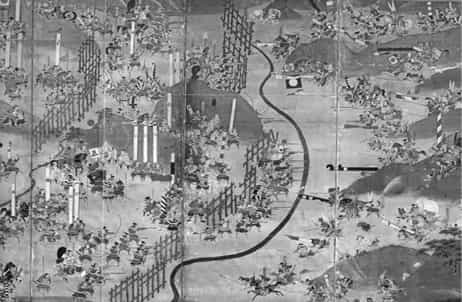
1575 Nagaşino Savaşı’nda Japon tüfekli birlikleri.
Şüphesiz bu tezler uzun zamandır bilinmekte olup çok tartışılmış, takviye yahut nakz edici hayli verimli bir literatür oluşmasına imkân vermiş gözükmektedir. Bu ortaya konan tanımlamalar içinde Osmanlı ordularının düzeni ve ateş gücü, tam da 15. ve 16. yüzyıllarda görünüş itibarıyla rakiplerine göre çok etkili olmasına rağmen, göz ardı edilmiş bir yere sahip bulunmaktadır. Hatta bazı Osmanistler, aslında Osmanlı savaş usullerinde ve istihkâm tarzlarında bu asırlar boyunca Batılılara nispetle bir farklılık görülmediğini, askeri yeniliklerinin ise Avrupa kökenli olduğunu ileri sürerler73. Öte yandan daha 16. yüzyılda bir taraftan İspanya’da diğer taraftan ise Uzakdoğu’da Japonya’da etkili tüfek ateşi uygulamalarının varlığı ve yaylım ateş taktikleri, söz konusu tez için batı merkezli açıklamaların söylemini çok fazla değiştirmemiştir. Bununla beraber Parker, Uzakdoğuya yeniden bir göz atma gereği duyarken kitabının Türkçe tercümesine yazdığı özel bir önsözde, Osmanlı tarafı hakkında çok az şey bilindiğini, ama bunun giderek yapılan çalışmalarla değişmeye başladığını, G. Börekçi’nin çalışmasından hareketle, 1605’te yeniçerilerin, Hollandalıların uyguladıklarından on yıl kadar önce yaylım ateş taktiğini bildiklerinin ortaya çıktığını, ama bunun değişik yollardan öğrenme ve yöntem ithali olduğu esasına dayanabileceğini ima eder74. Sonradan kaleme aldığı makalesinde ise bütün yeni katkılara rağmen -yani Japonya’da Oda Nobunaga’nın yaylım ateş uygulaması, (1575 Nagaşino Savaşı: 3000 tüfekli birlik) 1600 tarihli Nieuwpoort Savaşı, Willem Lodewjik’in veya Qi Jiguang adlı Çinli’nin tüfekli muharebe tekniklerine dair kitabı ve tabii 1604’te ve 1605’te Topçular Kâtibi’nin zikrettiği yaylım ateş tarifi- ana fikrini değiştirmemiştir. Ona göre batıdaki uygulamalardan daha öncesine ait örnekler, tek kalmaya mahkumdur, yani sürdürülebilir olmamıştır. Batının ilerlemeci/birikimli anlayışı gelişimi sürekli kılmış, karşılıklı tesirler ise bunun önemini hiçbir vakit azaltmamıştır75. Parker’in çalışmalarından hareketle Osmanlılarda yaylım ateş tekniği konusu üzerinde müstakil bir makale yazan G. Börekçi, bunun için Avrupa’daki benzerlerinden daha erken tarihli örnekleri verir. Mesela Nâdirî Divanı’ndaki 16. yüzyıl sonlarına ait olduğu tahmin edilen iki minyatür ve tabii Topçular Kâtibi’nin 1604-1605 tarihli anlatımları. Mohaç Savaşı’nı tasvir eden 1540-50’lere ait bilinen minyatüre de kısaca değinilmiştir. Fakat burada da ortaya konulan temel argüman, Osmanlıların bu taktiği kendi öz buluşları değil de başkalarından öğrenmiş olabilecekleri görüşünü cerh etmez, ancak yine de mesele hayli ihtiyatlı bir dille takdim edilir76. Bütün bunlara karşılık Osmanlı savaş usulleri ve ateşli silah kullanımı konusunda derin bir fikri olmadığı anlaşılan T. Arnold ise bütün bu bakış açısını tersine çevirip, “ .. bu devrim sayesinde yeni bir disiplin kazanan tüfek ve mızrakla silahlanan Avrupa piyadesinin Osmanlı yığınlarını tek başına durdurmayı öğrendiği..” görüşünü tekrarlar, askeri devrimin biraz da “bu yığınlar” (yani Osmanlılar) ile savaşmak üzere ortaya atıldığını ve savaş meydanlarında bu yığınların hakkından gelinebildiğinin kanıtlandığını yazarak Osmanlı ordu gücünün insan kalabalıklarına dayanan düzensiz kitlelerden oluştuğu, silahların teknik kullanımından değil bu kalabalıklara dayandığı tezini yeniden gündeme getirir77.
Osmanlılar gerçekten bir “yığın” ve düzensiz karmakarışık savaş taktikleriyle mi hareket ettiler? Avrupa’nın askeri devrim yaşadığı belirtilen çağda nasıl bir taktik uygulandı ve hepsinden de önemlisi yukarıda da kaynaklara dayalı olarak ispat edildiği gibi çok erken bir zamanda ateşli ağır ve hafif silahları yaygın şekilde kullandıkları halde, yaylım ateş tekniği konusunda bir düzen ve sistem geliştirebildiler mi? Bu soruların cevapları hakkında daha önceki pasajlarda yeniçeri tüfekçi birliğinin durumu ile ilgili bilgiler hatırlandığında, belirli bir temel elde edilebilir. Burada özel olarak bu birliğin savaş taktiklerinin ve tüfek kullanım şeklinin “yaylım ateş” tekniğiyle bağlantılı olup olmadığı konusu öne çıkmakta ve izahı gereken bir husus olarak karşımızda durmaktadır.
Osmanlı savaş sisteminde geliştirilerek uygulandığı anlaşılan “tabur cengi” usulünün ana noktasının, padişahın bulunduğu merkez üssün ateşli silahlar çağı öncesinde de hareketli birliklerle kanatlardan desteklenen adeta bir seyyar kale vasfı taşıdığı üzerinde durulmuştu. Top ve tüfek kullanımı aslında bu ana görünüşü destekledi; bu yeni enstrümanların eklenmesiyle uygulanan taktiklerin mahiyetinde birtakım değişiklikler, asker terkibinde de farklılıklar görüldü. Ordu hâlâ süvari ağırlıklıydı, Anadolu ve Rumeli timarlı askerleri kanatlarda mevzilenmekte idi, ancak padişahın önünde sıralanan çekirdek gücün ateşli silahlarla takviyesi, daha etkili bir saldırı ve savunma düzenini sağlamakta gecikmedi. Osmanlılar tabur anlayışını merkez üssün ateşli silahlar, savaş arabaları ve toplarla güçlendirilmesi üzerine kurdular ve kanatlardaki süvarileri bunların durumuna göre düzenlediler. Yani kanatlardaki süvarinin fonksiyonunda merkezdeki çekirdek birliklerin durumunun aksine çarpıcı bir değişme olmamış gözükmektedir. Daha önce de belirtildiği gibi büyük bir meydan savaşında ateşli silahlarla takviye edilmiş yeni savaş taktiğinin uygulanışı ilk kez II. Kosova Savaşı’nda kendisini göstermişti. 1473’teki Otlukbeli Savaşı’nda, klasik Türkmen savaş taktikleriyle çarpışan süvari ağırlıklı Akkoyunlu ordusu, top ve tüfek ateşi karşısında duramadı, çünkü böyle bir savaş usulüne ne askerleri ne de kulakları sağır eden top ve tüfek sesi karşısında ürken atları alışıktı78. Bir bakıma onların yaşadığı şaşkınlığı vaktiyle Varna Savaşı öncesi Hunyadi’nin İzladi geçidinde zorlukla durdurulabilen Uzun Seferi sırasında Osmanlı tarafı da yaşamıştı, ancak bu sisteme adapte olmakta gecikmemişlerdi.
Fatih Sultan Mehmed döneminden itibaren yeniçeri birlikleri âdeta tüfekle bütünleşmiş durumdaydılar. Onlar artık daha önce okçu birlik olarak uyguladıkları atış usullerini tüfeğe göre ayarlamayı öğrenmiş olmalıdırlar. İlk önceleri muhtemelen birbirlerinin görüş mesafesini kapatmaksızın düzenli saflar halinde top atışlarını takiben ellerindeki tüfekleri bir anda ateşleyecek bir senkronu/uyumu tutturabilmişlerdir. Hasan-ı Rumlu’ya göre, Otlukbeli savaşında Mahmud Paşa’nın emrindeki birlikler saldırıya geçtikleri sırada “bir anda topu ve tüfeği onların üzerine” yağdırmışlar, tüfek kurşunları şimşek ve yıldırım gibi zırh gömleği delip geçmiş ve “top ve tüfek darbesiyle merkezi tersine” çevrilmişti79. Bunun gibi daha sonraki Çaldıran, Mercidabık ve Ridaniye savaşlarında etkili rol oynayan yeniçeri tüfekçilerinin ateş şekilleri kaynaklarda genellikle saf düzeni içinde intizamlı bir salvo atışı ortaya koyar. Özellikle yeniçerilerin 16. yüzyıl başlarındaki bu üç meydan savaşında çatala ihtiyaç hissettirmeyecek derecede hafif tüfekler kullandıkları söylenebilir. Tüfeği ayakta, bir dizini kırarak, hatta bağdaş kurarak ateşleyebildikleri düşünülebilir. Bu teknikler ok atış teknikleriyle de kabaca benzerlik gösterir. Bilhassa Çaldıran, Mercidabık ve Ridaniye’de yeniçeri tüfekçilerinin çok etkili oldukları, “yaylım ateşi” çağrıştıran seri bir ateş gücünü sağlayabildikleri kaynaklardan anlaşılmaktadır.
Bir anonim Osmanlı kaynağında, Çaldıran’da 10 bin tüfek, 600 topun bir anda ateşlendiğinden ve sesin dehşetinden söz edilmesi ilginçtir80. 18. yüzyıla ait olmakla birlikte eski döneme ait çağdaş kaynaklardan aktarımda bulunan bir başka kaynakta, bu savaş sırasında yeniçeri tüfekçilerinin “yedişer nevbet tüfek attıkları”, yani saflar halinde yedi kez tüfeklerini topluca ateşledikleri bilgisine yer verilir81. Dönemin çağdaşı bir Selimnâme yazarı ise, yeniçerilerin yerlerinden hareket ederek ayakta “tüfeklerini durup dinlenmeksizin ateşlediklerini” açık ifadelerle belirtir, ayrıca bu bilinçsizce hedef gözetmeksizin yapılan toplu bir atış da değildir. Yazar yeniçerilerin hedefi bulduklarını ve çok iyi keskin nişancılar olduklarını söyler82. Nitekim Kahire’de sokak çarpışmaları sırasında da yeniçeri tüfekçileri, keskin nişancılar olarak direnişçilerin siperlerden başını çıkaranlarını tüfekle vuracak kadar maharet sahibiydiler. Şüphesiz böyle etkili bir atış yapabilmeleri için özel bir talim gördükleri ve ayrıca toplu ateş açabilme tekniğine de sahip bulundukları anlaşılır. Nitekim Yeniçeri Ağası’na gönderilen 1552 tarihli bir emirden, yeniçerilerin düzenli idman/talim yapıp tüfek atış tekniklerini öğrendikleri sarih olarak ortaya çıkmaktadır83. 17. yüzyılın sonlarında Kont Marsigli bile Osmanlı tüfekçilerinin hedefe çok doğru bir şekilde nişan aldıklarını belirtmekten kendini alamamıştır84. Yani Batılı meslektaşlarının düzensiz, birbirinden kopuk atışlarına mukabil yeniçeri tüfekçi birliği toplu ateş gücünü sağlayabilecek bir tecrübe sahibidir.
Bu hususta asıl çarpıcı gelişme Mohaç Savaşı’nda kendisini gösterir. Burada Osmanlı ana merkezine saldıran Macar süvarileri, topların arkasına dizilmiş tüfekli yeniçerilerin ateşiyle karşı karşıya kalmıştı. Büyük ihtimalle savaşa şahit olan ancak eserini kısım kısım yazarak 16. yüzyılın ortalarına doğru tamamladığı anlaşılan Osmanlı bürokratı ve tarihçisi Celalzâde Mustafa Çelebi, dokuz saf tertip olunan yeniçerilerin “saf saf tüfek attığını” beyan eder ki bu durum sıralı ve kademeli bir yaylım ateş tekniğini çağrıştırır85. Padişah seferde iken dokuz saf oluşturdukları, sair zamanlarda ise üçer saf halinde sıralandıkları belirtilen tüfekli yeniçerilerin86ateş düzeni genellikle üçerli safa uygun bir tarzda olmalıdır. Onar kişilik gruplar halinde saf düzeni aldıkları anlaşılan bu tüfekçilerin, etkili bir ateş perdesi sağladıkları açıktır. Öndeki saf ateş ettikten sonra diz kırıp tüfeğini doldururken, arkadaki saf ayakta ateş etmekte, onun ardından da üçüncü safın ateşi başlamaktadır. Mohaç Savaşı Fetihnâme’sinde yeniçerilerin tüfekleriyle üç dört defa toplu ateş açtıkları belirtilir87. Üstelik bu saflar baklava dilimi şeklinde birbirinin görüş mesafesini engellemeyen bir düzende sıralanmış olmalıdır. Nitekim Ârifi’nin (ö.1558) Süleymannâme adlı eserinde Mohaç Savaşı’nı tasvir eden bir minyatür, çok açık şekilde topların arkasına sıralanmış yeniçerilerin tüfekle ateş düzenini göze hitap edecek raddelerde ortaya koymaktadır. Burada öndeki sıra ateş edip diz çökerek tüfeklerini doldururken, arkadaki sıra ise ayakta tüfeği omzuna dayamak suretiyle nişan alırken resmedilmiştir. Üstelik tüfekleri elde taşınan hafif tipte olup herhangi bir desteğe ihtiyaç duyulmaksızın ateşlenebiliyordu. Yine Ârifî’nin eserinde Rodos ve diğer bazı kale kuşatmalarını tasvir eden minyatürlerde yeniçeri tüfekçilerinin yan yana dört kişi olarak ayakta, bazıları da dizlerini kırmış halde resmedilmiş bulunması da dikkat çekicidir. Bu durum 1550’lere doğru yeniçerilerin yaylım ateş tekniğini bildikleri ve uyguladıkları konusunda herhangi bir şüpheye mahal bırakmaz. Üstelik yaylım ateş konusu bir başka kaynakla daha teyit edilebilmektedir.
1550’li yıllarda Osmanlı-Safevi savaşları sırasında bir İspanyol gözlemci, Osmanlı birliklerinin ateş gücü hakkında bilgi verirken topun büyük tekerlekler üzerine konulup dingillenmesini ve hafif tarzda tüfek yapmayı İspanya’dan göçen Yahudilerin Türklere öğrettiğinden söz ederek Safevi ordusuyla Osmanlı ordusunu karşılaştırır. Bir meydan muharebesinde Osmanlıların taktiklerini ve savaş tarzlarını anlatırken böyle bir çarpışmada topun değil daha çok bilek ve tüfeğin iş göreceğinin altını çizer ve piyadelerin yaylım ateşi konusunda şu bilgileri verir88:
…Asıl tesirlisi piyadelerin yaylım ateşidir. Orduda her boydan er bulunduğu için bu ateşi sağlayacak etkili bir düzenleme kurmak mümkündür. Mesela bir sıra diz çöker, arkasına kısa boylular, daha arkaya uzun boylular geçer. Ateşe başladıkları zaman fındıklar en az yarı yarıya isabet eder, bundan kurtulabilen az olur…
Bu şüpheye yer bırakmayacak ölçüde açık ibarelerin yeniçerileri kastediyor olması kuvvetle muhtemeldir. Zira tarif tam da yukarıda bahsettiğimiz Mohaç minyatüründeki şekle uymaktadır. Yeniçeriler üçerli saflarla etkili bir ateş desteği sayesinde hem doğuda hem de batıdaki büyük meydan savaşlarında üstünlük sağlayabilmişlerdir. Üstelik yukarıda da temas edildiği gibi tüfekçiler bunun talimini düzenli şekilde yapıyorlardı. Bununla ilgili 22 Muharrem 959/ 19 Ocak 1552 tarihli kayıt aynen şöyledir89:
Yeniçeri Ağasına bir hüküm yazıla ki,
Hâliyâ yeniçeri kullarım tüfek atmağa idman eylemelerin emr edip buyurdum ki, hükm-i şerîfim varıcak, yeniçeri kullarıma tüfek atmağa idman ettirip bir vechile müfid olup ihtimâm eyleyesin ki her biri tüfek atmakta mâhir olup kusûr ve noksanları olmaya, şöyle bilesin.
Konuyla ilgili bir başka örnek Nâdirî Divanı’ndaki Nakşî tarafından çizilen bir savaş sahnesidir ve Uzun Savaşlar dönemine aittir (1595’ten sonrası). Bu minyatürde tıpkı Ârifi’nin eserindeki tasvir gibi, yeniçeri ateş düzeni resmedilmektedir ve kabaca onunla büyük bir benzerlik göstermektedir90. Buradaki sahne, önde diz çökmüş ateş eden saf ve arkasında ayakta tüfek dolduran ikinci saf şeklindedir. Buna karşılık Batılı tüfekçiler tek bir safta ayakta ateş etmektedirler. Yine aynı dönemde bu defa bir başka çağdaş Osmanlı kaynağında yine sarih şekilde yaylım ateş tarifi bulunur. Kendisi de savaşlarda topçuluk hizmeti gören Topçular Kâtibi Abdülkadir Efendi, Estergon kuşatması sırasında (1605), meydanda yeniçerilerin ateş tarzlarını anlatırken şu ifadeleri kullanır91:
…Yeniçeri alayları üç kat saf durdu. Her biri tüfekli olup fitilleri hazır. Şahi darbzenler yeniçeri önünde zincirlenip dizildi. Sonra yeniçerinin evvelki safı tüfeklerini attı. İkinci saf dahi attı. Sonra önce atan saf iki kat olup tüfeklerini doldurmaya başladı. Üçüncü saf attığında ilerideki ikinci saf eğildi tüfeklerini hazır etti. Sonra evvelki kat kalkıp tüfek attı. Kaideleri ceng sırasında vâkidir, her şahî başında üç nefer topçu vardı…
Bu uygulamalar açık şekilde Batılı reformist fikirlerden habersiz, kökü Mohaç’a, hatta Çaldıran’a kadar indirilebilecek olan bir gelişmeyi göz önüne serer. Yani yaylım ateş tekniği ve taktiği, yukarıda verilen örnekler çerçevesinde batıdan bağımsız bir uygulama olmalıdır. Nassaulu Maurice ve Kont William Louis’in tüfek atış süratini artırabilmek için saf düzeni tertibini ortaya koymaları ise 1590’lı yıllara rastlar. William Louis’in kuzeni Maurice’e yazdığı 8 Aralık 1594 tarihli mektupta yer alan şema bu tekniğin ilk habercisi olarak düşünülür. Buna göre sürekli ateş etmeyi sağlayabilmek için on safa ihtiyaç vardı. Daha sonra William’ın kardeşi John tüfek ve arkebüzle alakalı talim kitabını 1607’de Jacob de Gheyn’in gravürleriyle birlikte yayımlandı. Bu kitap az zaman sonra diğer Batılı dillere çevrildi. Fakat savaşlarda tatbiki ancak 1620’lerden sonra gerçekleşti ve İsveç Kralı tarafından etkili şekilde kullanıldı. Bu sistemin ortaya konmasında ise Roma ordusunun askeri düzeni ve taktiklerinden esinlenilmişti92.
Burada bu bilgilerle yapılacak bir mukayese, Osmanlı uygulamasının önceliğini sarih olarak gösterir. Japonya’da 1575’te Nagaşino Savaşı’nda tatbik edilen yaylım ateş taktiği ile ilgili inkâr edilemez örnek, şüphesiz batıya tesir edemezdi. Ama sürekli Osmanlı ordusuyla karşı karşıya kalmış olma hâli ayrı bir şeydi. Burada Osmanlı uygulamasının İspanyol tecrübeleriyle birleştirilerek Hollandalı kuramcılara etkisi söz konusu olabilir miydi? Böyle bir sorunun cevabı açık uçlu kalmaya mahkûmdur. Ancak askeri devrim tartışmalarında Osmanlı tarafının bu uygulamasının yeni ve orijinal bir temel de sağladığı kesin gibidir. 1596’da Haçova’da topların ardında üç saf halinde sıralanmış yeniçeri tüfekçilerinin yan ateşle Alman piyadelerini nasıl püskürttükleri bilinmektedir. Burada dokuz kat üçer saflı düzen, 10 birimli Batılı tasarıma çok benzemektedir. Öte yanda 1575’te Derebeyi Oda Nobunaga’nın yaylım ateşi açan birliklerini tasvir eden bir resimde, süvari saldırısına karşı merkezde koruyucu çit önüne çıkarılan yanlarda ise çiti siper alan, ama kaç saf oldukları kestirilemeyen tüfekçilerin düzeni, bunların arkasında uzun menzilli okçuların bulunması ve akabinde de atlı birliklerin mevzilenmiş olmaları, Osmanlı düzeniyle karşılaştırıldığında daha düzensiz ve karışık bir taktiğe işaret eder93. En önde tüfekçiler birkaç atış yapıp çit arkasına çekilirken arkalarındaki okçular devreye girmiş olmalıdır. Buna göre Osmanlı ordugâhında yerleşme, hendek ve zincirle bağlanmış top arabaları ardında ve bazen arasında yerleşmiş düzenli tüfekçi safları şeklindedir, onları iki taraftan kargılı süvariler korumaktadır, yine okçular da tıpkı Nobunaga’nın askerleri gibi tüfekçilerin ardında bulunmaktadır. Üstelik yeniçeriler tüfek kullandıktan sonra yere inmiş olan süvarilerle savaşacak el silahlarına da sahiptiler.
Aslında klasik Osmanlı muharebe düzeninin tabiatı, 1596 Haçovası Savaşı’yla ciddi bir sarsıntıya uğramış gözükmektedir. Ateşli silah teknolojisinin 17. yüzyılda batıda kaydettiği gelişme, Osmanlıların kendi güçlerini gözden geçirmelerine yol açmıştır. 17. yüzyılın çalkantılarına şahit olmuş Osmanlı tarihçileri, rakiplerinin yeni tip silah ve askeri kuvvetlerini, biraz da dönemin okuyucularına bir mesaj vermek için abartılı bir şekilde takdim etmeyi tercih etmişlerdir. Haçovası Savaşı’na katılan Hasan Kâfi, savaştan kaçanlarla ilgili meseleleri öne çıkarırken bunu Osmanlı tarafının ateşli silah kullanmadaki yetersizliğine bağlamakla eş tutar. Ona göre Hıristiyanlar, “..yeniden türlü silah ihdâs edip kullanıyorlar, top ve tüfek gibi nice türlü silahlar icad edip ifrâd ile kullanmaktalar..” Osmanlı tarafı ise, “bu cins silahları kullanmada ihmal gösteriyor. Hatta eskiden olanlarını bile kullanmıyor, bu yüzden dayanamayıp firar ediyor..”94. Açıktır ki Hasan Kâfi, ahlakî bir yaklaşım sergilemekte olup bu beyanındaki amacının yeni silahların ortaya çıkışından çok, Osmanlı askerinin savaşta her türlü sıkıntıya dayanma gücüne erişmesi olduğu anlaşılmaktadır. Nitekim yazar, çarpışırken “horozun bahadırlığı, aslanın yüreği, hınzırın hamlesi, tilkinin hilesi, köpeğin sabrı, turnanın gözcülüğü, karganın sakınması, kurdun yağması” gibi davranmak gerektiği benzetmesini yapar. Bunlara “Nemçe’nin nev-icad top ve tüfeğini” ise eklemez. Bu bakımdan söz konusu metin pek çok araştırmacının yaptığı gibi, Osmanlıların ateşli silahlar açısından eksikliklerini tam olarak vurgulamaya müsait değildir. 16. yüzyıl sonundaki Uzun Savaşlar, Osmanlıların bu eksiklikleri sebebiyle büyük bir başarısızlıkla da nihayetlenmemiştir. Aksine Osmanlıların karşı tarafın askeri yapılanmasına göre, onlarla baş edebilmek için kendi sistemlerini geliştirebilmişlerdir. Zaten artık işlevini kaybetmiş timarlı sipahi düzeni yerini uzun vâdede atlı ve piyade tüfekçi yerel güçlere bırakacaktır. Ayrıca şurası da muhakkaktır ki, Osmanlı klasik savaş düzeni ve ordu sisteminin ana görünüşünde 17. yüzyıl boyunca ateşli silahla mücehhez birliklerin artışı ve asker profilindeki değişim dışında önemli bir farklılaşma olmayacaktır.
Uzun Savaşlar sırasında, 1596 Haçova ve 1601 Kanije Savaşı’na katılmış olan Monsenyör Marchesi (ö.1613), 1606 Zitvatorok Anlaşması dolayısıyla baş gösteren hoşnutsuzluk sebebiyle Türklere karşı harbin devamı için Papa’ya yolladığı mektupta şu tesbitlerde bulunur ve Hasan Kâfi’nin yazdıklarının aksini bu defa Batılılar için söyler95:
Bizim Türklere her zaman yenilmiş ve yeniliyor olmamızın nedeni savunmayı onlar kadar iyi bilmeyişimiz değildir. Çok sayıda süvariye özellikle hafif süvariye sahip olan düşman genellikle uzak mesafeden çevremizi sarıyor, kendisine saldırılmasına fırsat vermeden ansızın arkadan saldırıyor. Bu Romalıların ve bizim kullandığımız yollardan farklı bir yol ve bunun üstesinden nasıl geleceğimizi bilmiyoruz. Böylece ya muharebeyi kaybediyoruz ya da üstünlük ne olursa olsun hep onlarda kalıyor. Bazı Romalı kumandanlar ve imparatorlar bu durumla başa çıkmanın yolunu bulmuşlardı. Fakat Macaristan’da yapılan son savaş dahil bizim imparatorlarımız ve krallarımız onları örnek almadılar. Savaşın kazanılması ya da nihayetinde düşmanın üstünlüğüne son verilmesi yolunda ne daha önce kullanılmış yöntemlerle ne de yeni yöntemlerle bir ilerleme kaydedebilmişlerdir.
Marchesi’nin bu raporundan on yıl önce Lazzaro Soranzo da Türklerle savaşan herkesin onların savaş alanına genişlemesine nasıl yayılmakta olduklarını bildiğini, ilerlerken düzensiz karmakarışık görünen bu orduya arka taraftan zarar verdirilebileceğini bildirdikten sonra, Osmanlı kumanda heyetinin mutlak otoritesini, askerin itaatini öne çıkarır, hazır kuvvetleri kullanma ve süratle sevk edebilme becerilerine temas eder96.
Bu iki tanıklık bir bakıma Osmanlı gücünün Uzun Savaşlar boyunca pek sarsılmadığının göstergesi olarak mütalaa edilebilir. Üstelik yeni silah ve taktiklerinin nihai zaferi sağlamada pek bir katkısı olmadığına da işaret eder. Habsburg ordusu kumandanlarından General Basta, yeniçerilerin değil, Osmanlı süvarisinin üstesinden gelebilme çareleri aramıştır. Bunun için uzun tüfek kullanan piyadeleri, kargılı askerlerin himayesinde ileriye yollayarak süvarilere salvo ateş açmalarını tavsiye etmiştir. Ona göre Osmanlılar bu salvo ateşi uygulamıyorlar, yeniçerilerin ancak ön safları tüfek kullanıyor, ateş isabetli olsa da düzensiz şekilde açılıyordu97. Ancak bunun tam olarak gerçeği yansıtmadığı yukarıda verilen örnekler muvacehesinde, söylenebilir. Yeniçeri birliklerinin düzenli saflar halinde ateş gücü etkisi konusunda, görgü şâhitleri, bizzat savaşı anlatan iki tarafın gözlemcileri ve çağdaş kaynakların beyanları, Basta’nın ifadeleriyle çelişir.
Bu noktada bazı teknik ayrıntılara girmek konuyu bir açıdan daha da vuzuha kavuşturabilir. Burada Osmanlı tüfekli birliklerinin hızlı süvari saldırısına karşı mesela menzili nasıl ayarladıkları ve atış hızı kabiliyetinin ne olduğu sorusu hatıra gelebilir. Gelişmiş Osmanlı tüfeğinin etkili menzilinin 100-200 metre arası olduğu düşünülürse, atlının bu mesafeyi hızlı koşuyla çok çabuk alabileceği ve eğer önde bir engel, hendek yoksa onlara karşı saniyelerle ifade edilebilecek bir atış zamanı kaldığı anlaşılır. Bu vaziyet tüfekliler için büyük bir tecrübe ve sıkı bir disiplin gerektiriyordu. Her şeyden önce savaş alanında ön safta saldırıyı karşılayabilmek için belirli bir hazırlığa ihtiyaç vardı. Fakat savaşın ani gelişen doğası, böyle bir hazırlığa her zaman imkân vermiyordu. Bu bakımdan önceden savaş alanını belirlemek ve ana ordugâhı kurmak büyük önem taşıyordu. Şüphesiz iki taraf birbirine hazırlıksız yakalanmak istemiyordu ve karşı karşıya gelen ordular uygun mesafelerde taburlarını yerleştirmek ve kademe kademe yaklaşmak gibi bir anlayışı benimsiyordu. Osmanlı tarafı için tüfekli birliklerin çeşitli engellerin arkasında durması veya sipahilerin koruması altında bulunması önemliydi ve bu durum da onların büyük bir disiplin içinde bulunmalarını gerektiriyordu. Nitekim 16. yüzyıl boyunca merkezde konuşlanmış yaklaşık 4000 tüfekliden oluşan birlik, Mohaç ve Haçovası’nda olduğu gibi profesyonellikleri sayesinde etkili olabilmişlerdir. Buna karşılık Batılı orduların daha fazla olan ama iyi yönlendirilme güçlüğü yaşayan, disiplinsiz askeri birlik ve tüfeklilerinin sevk ve idaresinde hiç olmazsa 16. yüzyıl boyunca ciddi problemlerle karşı karşıya kaldıkları unutulmamalıdır. Bu durum ancak Otuz Yıl Savaşları döneminde yeni taktik ve askere alma yöntemlerinin devreye girişiyle değişecektir.
Osmanlı yeniçeri birlikleri önlerine konan manialar ve toplar yanında bunların ön tarafına geçmiş yaya azaplar sayesinde yıpratılan saldırıyı, etki menziline girene kadar beklemekte idi. Tüfek atışı için uygun vakit ve menzil tayini muhtemelen top atışları yanında ok atışlarıyla da belirleniyordu. Savunma durumunda menzili belirleyecek bir işaretin önceden alana yerleştirilmiş olması mümkündür. Fakat meydan savaşının değişken tabiatı, menzil belirleme işinde farklı metotlara ihtiyaç hissettiriyordu. Burada muhtemelen okçular hayati bir önemi haizdi. Top atışlarında ise önceden bir-iki deneme atışıyla doğru menzilin hesaplandığını biliyoruz. Öte yandan siper savaşlarında da tüfekli birlikler sabit uzun tüfekleri (meteris tüfeği/arkebüz) ve hafif el tüfekleriyle etkili bir çarpışma sergileyebiliyorlardı. Mesela Kuyucu Murad Paşa, asi Canbulatoğlu ile yaptığı meydan savaşında üç derin saflı yeniçeri tüfekçilerin, 50 adet top arkasından açtığı yaylım ateşi sayesinde etkili olmuş, sonra iki taraf siperlere girerek birbirlerine tüfekle kurşun yağdırmaya başlamışlardı98. Bu modern savaşları andıran siper muharebelerini hatıra getirir.
Bu noktada 17. yüzyılın ikinci yarısında söz konusu tekniğin uygulamada farklılık arzettiği ve tüfekle savaş şeklinde belirli bir değişimin yaşandığı ifade edilebilir. O kadar ki 1718 dolayında III. Ahmed’e verildiği ileri sürülen bir takrirde Avusturyalıların savaş şekli üzerine yapılan bir gözlem, hayli şaşırtıcı bir durumu ortaya koymaktadır. Takrir sahibi Avusturya birliklerinin ateş gücünden söz ederken, onların tek maharetinin tüfek kullanmak olduğunu, kılıca karşı duramadıklarını belirterek, tüfeklerinin uzunluk ve kalibrede standart olması dolayısıyla kaldırma ve indirmede düzenin sağlandığını, “.. kaç saf ise ale’t-tertîb birinci saf fitilden ateş saçtığı gibi geriye çekilip, saff-ı sânî hâzır ve âmâde bulunmağla anların yerine gelip bunlar dahi…” silahlarını ateşlediklerinde üçüncü ve dördüncü safın devreye girip bu usül üzere sürekli ateş desteği elde edilebildiğini ve bunun da onlara büyük bir üstünlük kazandırdığını yazar99. Anlaşılacağı üzere burada vaktiyle yeniçeri tüfekçilerinin buna benzeyen ateş teknikleri değil, tüfekli birliklerinin saldırı yürüyüşü izah edilmektedir. Yazara şaşırtıcı gelen saf düzeni ateşinin kalabalık gruplar halinde belirli bir tarzda yürüyüş durumunda gerçekleştirilmekte olması keyfiyetidir. Aynı tarihlerde sayıları çok artan Osmanlı tüfekçilerinin bu sisteme göre tertip edilmemiş olması, onların söz konusu ateş tekniğini bilmedikleri anlamına da gelmez.
Öte yandan 1688’de barış görüşmeleri için Viyana’ya giden Osmanlı elçisi Zülfikâr Ağa da Avusturya askerlerini hayranlıkla değil âşina olunan bir üslupla tanıtmış, bunların pis olduklarını ama silahlarını temiz tuttuklarını, atlısının ikişer çakmaklı tüfek ve bir karabina ile kılıç taşıdığını yazıp bölük tertibatı hakkında kuru bir ifadeyle bilgi vermiştir100. Burada hayranlık ifadesi veya mukayeseli bir anlatım tarzı benimsenmemiştir. Demek ki bu durum daha sonraki meslektaşlarının aksine henüz Osmanlı gözlemcileri için problem hâline gelecek ve zaaf doğuracak büyük bir değişimi işaret etmemektedir.
Kısaca bütün bu bahis göz önüne alınırsa, Osmanlı geleneksel düzen ve savaş taktiklerinin, bir bakıma kendi içinde zamanına göre modernleştirilerek gelişme gösterdiği sonucuna ulaşılabilir. Sistem 17. yüzyıl boyunca da etkili şekilde sürdürülmüştür. 1683’ten itibaren başlayan Kutsal İttifak Savaşları dönemindeki yenilgiler ise Avrupa’da Osmanlıların karşısına çıkan devasa ve çok cepheli saldıran koalisyon ordularının kalabalık ve düzenli hale getirilmiş olmasıyla ilgili olabilir. Zira Avrupa askeri devrimiyle 17. yüzyıl sonunda Osmanlı gücüne yakın ordular kurulmuştu, iaşe sistemi iyi işliyordu, iyi bir komuta kademesi oluşturulmuştu, hepsinden önemlisi profesyonel askeri kurumlar ortaya çıkmıştı. R. Murphey’nin de belirttiği gibi Osmanlılar 1500’den 1700’e kadar olan dönemde askeri teknolojiye genelde ayak uydurabilmişler ve bazı alanlarda standartları kendi başlarına belirleyebilmişlerdir. Hem kullandıkları silahlar hem de savaş yöntemleri açısından gıbta edilen konumlarını da devam ettirmiş görünmektedirler101. Zira bu devrin en kaliteli silahının bile güvenilirliği çok şüpheliydi ve sınırlıydı. Üstelik 17. yüzyıl sonlarında dahi askeri ekipmanların savaşın kaderinde henüz modern savaşlar devrinde olduğu gibi tayin edici bir rolü de yoktu.
ORTADOĞUDA ASKERİ GELİŞME: OSMANLI-MEMLÜK REKABETİNDE ATEŞLİ SİLAHLAR
Memlük tarihinin en önemli paradigmalarından birini, onların ateşli silahlardan nefret ettikleri ve kullanmadıkları oluşturur. Ateşli silahların yayılması ve kullanılması askeri teknoloji açısından bir dönüm noktası sayılır ve bunun mevcudiyetinin devlet oluşumlarının gelişmesiyle paralellik arz ettiği genel bir kabul görür102. Bu hususta Osmanlıların ve Memlüklerin tavırları ve anlayışlarının mukayesesi, İslam dünyasındaki teknolojik gelişmeye karşı istek veya isteksizliğin mahiyeti bakımından son derece önemli görünmektedir. Bu makalede özellikle Mercidabık ve Ridaniye savaşları çerçevesinde söz konusu problem üzerinde durularak gerçekte Memlüklerin tavırlarının nasıl anlaşılması gerektiğine açıklık getirilmeye çalışılacaktır.
D. Ayalon’un artık klasikleşmiş sayılan eserinde, ateşli silahların Yakındoğu tarihinde bölgenin geleceğini tayin eden başlıca amil olduğu belirtilerek, batıda geliştirilen ateşli silahlar sayesinde Hıristiyan milletlerin açık şekilde üstünlük kazandığı, Memlüklerin bunun sıkıntılarını Kızıldeniz’i tehdid eden Portekizliler karşısında yaşadıkları ifade edilir. Ona göre, ordu sistemleri süvariliğe dayanan Memlükler, bu tür silahların kullanılmasını benimsememişler, bu husustaki çeşitli teşebbüslere karşı büyük mukavemet göstermişlerdir. Aslında Memlükler daha 1365-1368 dolayında (Kalkaşendî’nin ifadesinden) topu biliyorlardı ve özellikle kale kuşatmalarında kullanıyorlardı. Tüfeği de 15. yüzyılda tanımışlardı. 1490’da Sultan Kayıtbay’ın Çukurova savaşları sırasında Osmanlıların üzerine gönderdiği birlikler içinde tüfekçiler de bulunuyordu. Bu asıl ordunun bir parçası olarak düzenlenmiş bulunan ilk tüfekçi birliği özelliği taşımaktaydı. Bunlar ileride özgür Memlük atlısı haline gelecek olan Memlüklerin oğullarından müteşekkildi. Ardından Melikünnâsır Muhammed (1496-1498) bu defa tüfekle mücehhez bir zenci birlik teşkil etmiş ve bunlara huzurunda talim yaptırmıştı, fakat bu durum Memlüklerin tepkisine yol açmış, bunun sonucu bu birlik dağıtılmıştı. Fakat Portekizlilerle olan mücadelede, Memlük-Gücerat donanmasının 1509’daki mağlubiyetinin ardından 1510’da, Memlüklerin üst tabakası değil yine yukarıda temas edildiği gibi evlâdü’n-nâstan (Memlük oğullarından) bir birlik teşkiline çalışılmıştı (et-tabakatü’l-hâmise). Bunlar Memlüklerin oğulları yanında Türkmenler, Acemler, Mağribliler gibi yabancı kesime mensup olanlardan meydana geliyordu; asıl Memlükler ise buna asla itibar etmemişlerdi. Memlükler Osmanlı ve Portekiz tehdidiyle karşı karşıya kalmalarına rağmen eski süvarilik geleneklerinden vazgeçmeye niyetli olmamışlardı. Nitekim 1514’te tüfekçi birliği ilga olunmuştu. 1510 dolayında oluşturulan bu tüfekçi birliği, Portekizlilerle mücadelenin bir eseriydi ve Osmanlı yardımının da bir sonucuydu. II. Bayezid’in Memlük sultanlığına top ve gemi malzemesi yolladığı bilinmektedir. 1511’de bazı Memlük kaynaklarında Osmanlılardan 400 top, 40 kantar barut ve bir miktar bakır yardımı geldiğinden söz edilir. 1513’te Süveyş’te yapılmakta olan donanmanın muhafazası için Kahire’den oraya 300 tüfekçi (rumât bi’l-bunduki’r-resâs) yollanmıştı. 1515’te ise aynı tabakadan 600 er yine Portekizliler’e karşı gönderilmişti103.
Gerçekten Memlükler ateşli silahları biliyorlar ve bunları zaman zaman da kullanıyorlardı. Savaşçı bir askeri kast oluşturmuş olan Memlüklerin tüfeği Kayıtbay’ın saltanatının son dönemlerine kadar kullanmadıkları belirtilirse104 de, tüfeğin henüz tam olarak yaygın bulunmadığı bir çağda yaşayan Ebubekir Tihrani’nin (ö.1480 dolayı) 1407’de Memlük-Akkoyunlu savaşında, Memlüklerin top ve tüfekleri olduğunu yazması ilginçtir105. Bu bilgiyi tekrar eden 16. yüzyıl Safevi tarihçisi Hasan-ı Rumlu (ö.1577) o zamana kadar tüfeğin henüz icad edilmediğini belirterek, nasıl ortaya çıktığı hakkında bir söylentiyi nakleder106. Burada kastedilen tüfeğin küçük bir çeşit top olma ihtimali yüksektir, ancak önemli olan husus “tüfeng” kelimesinin orijinal metinde zikredilmesi ve bu terminolojinin bir ateşli silah türü için kullanılmış olmasıdır. Fakat Memlükler karşılarındaki rakiplerinin durumları dolayısıyla bu tip silahları geliştirmeye teşebbüs etmediler. Ayrıca teknoloji ithali de yapmaksızın doğrudan satın alma yolunu tercih ettiler. Buna aslında ihtiyaçları da bulunmuyordu. Çünkü Portekizlilerin ortaya çıkışına kadar bu tip silahları kullanmak için önemli bir sebepleri yoktu. Üstelik Memlüklerin sona erişinin, ateşli silah çağının henüz etkisini yeni yeni göstermeye başladığı bir döneme rastladığı da unutulmamalıdır.
Osmanlılara gelince, onlar Memlüklerin aksine Hıristiyan dünyasıyla sürekli bir mücadele ortamı içinde olmanın getirdiği yeni savaş tekniklerini benimsemede daha istekliydiler. Batı’da ortaya çıkan ateşli silahları yakından izlediler, hatta yine Memlüklerin aksine teknoloji transfer ederek bu tip silahları daha da geliştirme fırsatı buldular. Öyle ki top kullanımında yeni teknoloji, daha 1453’te İstanbul gibi önemli, müstahkem bir şehrin kalın surlarının kolayca yıkılmasını temin etmişti. Bu durum Batı dünyasında bile şaşkınlıkla karşılanmıştı. Fakat bundan da önemli olarak 1450’li yıllardan itibaren profesyonel piyadelerini tüfeklerle donatıp, yeni tüfekçi birlik vücuda getirmişlerdi107. Özellikle tüfek kullanımı ve bunun harp taktiklerini belirlemesi, o dönem için batıdaki ve doğudaki rakiplerine karşı üstünlük sağlayıcı bir faktör olmuştu. Osmanlıların tüfekli piyade birlikleri Memlüklerin aksine süreklilik kazandı ve önceleri kalelerde istihdam edilen birlikler, giderek meydan savaşlarında ve kale kuşatmalarında da kullanılmaya başlandı. Özellikle tüfekli askerin meydan savaşlarında istihdamı özel bir düzen ve taktiğe ihtiyaç hissettiriyordu. Nitekim Osmanlılar Macarlardan esinlendikleri tabur usulünü, yani top arabaları ile korunan hatlar meydana getirme ve bu hareketli hatların arkasına top ve onunda arkasına tüfekli ve okçu birlikler yerleştirme düzenini ilk defa II. Murad’ın 1448’deki II. Kosova Savaşı sırasında uygulamışlardı108. Ancak hareketli tüfekçi birliklerin savaş alanına sürülmesi için Akkoyunlu Uzun Hasan’a karşı yapılan 1473’deki Otlukbeli Savaşı’nı beklemek gerekecekti. Tüfekli birliklerin eğitimi ve etkili ateş düzenini sağlayabilmeleri 16. yüzyılda oldu. Bunun ilk tipik örnekleri Yavuz Sultan Selim’in İran ve Mısır seferlerinde görüldü. Çaldıran’da tüfekçi birlikleri elde taşınabilen hafif tüfeklere sahipti ve etkili yaylım ateşiyle süvarileri kendilerine yaklaştırmamışlardı. Kaynaklarda yer alan bilgiler bu sırada ateşli silah teknolojisinin Osmanlılarca pratik amaçlara hizmet edecek şekilde yeniden düzenlendiğine ve “Osmanlı tipi tüfek” imalinin yapıldığına işaret eder. Nitekim II. Bayezid döneminde Portekizlilere karşı Memlüklere yardım için gönderilen silahlar içinde toplar yanında Osmanlı tipi tüfeklerin varlığı dikkat çekicidir. Yani daha bu yıllarda Osmanlıların “devrimci” bir yenilik olmamakla birlikte ateşli silah geliştirme safhasına ulaşarak ciddi bir teknolojik gelişim göstermiş olduğu söylenebilir109. Nitekim fitilli tüfeğin tetik mekanizmasının, (yılankavi, fitilin yerleştirildiği, çekildiğinde ateşlemeyi sağlayan demir parça) Osmanlılarca geliştirildiğine dair bilgiler mevcuttur110. İslam dünyasında ise Osmanlıların ateşli silahlar açısından “devrimci” bir yeniliğe öncülük ettiği açıktır. Ortadoğuda tüfeğin yayılmasının Osmanlılarca başlatıldığı, hatta Hindistan ve Uzakdoğuya, Kuzey Afrika’ya kadar geniş bir alanı etkilediği de bilinmektedir111 (Şam bölgesinde ve daha sonra Mısır’da yeni tip tüfek imali, Cezayir’de keza uzun namlulu Cezayir tüfeği, Hindistan’da ve Güney Asya’da Rumi/Anadolulu tüfekçiler, Çin’de Osmanlı-Portekiz tüfekleri rekabeti vs.). Hatta daha 22 Aralık 1510’da Portekiz Valisi Albuquerque, Kral’a yazdığı mektupta Rumi’lerin/Osmanlıların tüfenklerinden ve yapmış oldukları dökümlerden örnekler sunduğunu bildirmekteydi112.
Osmanlıların tüfek imali ve bunu Ortadoğu dünyasında yaygınlaştırmadaki katkıları yanında kullanımında geliştirdikleri taktiklerin en bariz örnekleri ise Memlüklere karşı girişilen sefer sırasında ilkin Mercidabık, ardından Gazze ve sonra da Kahire önlerindeki Ridaniye savaşlarında kendisini gösterir. Bu savaşlar sırasında toplam sayıları 4000 dolayında olan piyade tüfekçi birlikleri çok etkili rol oynamışlardır. Dönemin Osmanlı kaynakları ve arşiv belgeleri, Osmanlı savaş düzeninin savunma amaçlı değil, saldırı amaçlı olarak şekillendiğini ve dolayısıyla böyle bir sistem içinde tüfekli piyadelerinin hücuma geçecek bir yeni harp anlayışı kazandıklarını işaret eder. Mercidabık’ta süvari hücumunu topların arkasına dizilip savunma düzeni içinde karşılayan tüfekçi birlikleri, veziriazam Sinan Paşa ile Canberdi Gazali arasında Gazze’de vuku bulan savaşta tüfekleriyle saldırıya geçerek yeni bir taktik denemişlerdi. Süvarilerin ok atışlarıyla koruma ateşi sağladıkları 1000 kadar tüfekçi birliği, yanlarında hafif toplarla tepeye çıkıp oradan tüfek ve top atışıyla saldırmışlardı113. Ridaniye’de ise çok iyi bilindiği üzere, Memlüklerin oluşturdukları ve toplarla takviye ettikleri müdafaa hattının yanından dolaşarak hücuma giriştiklerinde, yeniçeri tüfekçileri dağın eteğinden tüfeklerine ateşleyerek yürüyüşe geçmişlerdi. Bir taraftan da yapılan Memlük yığınağı, top ateşine tutulmuştu. Hazırladıkları toplarını birkaçı dışında kullanma fırsatı elde edemeyen Memlükler Osmanlı saldırısı karşısında yeniden düzen alınca da yeniçeri tüfekçileri ve topçuları hep birden silahlarını ateşleyerek ilk andaki Memlük saldırısını önlemişlerdi. Ancak Sinan Paşa koluna yönelen ani süvari atağını, veziriazamın önünde bulunan ve 1000 kadar oldukları tahmin edilen tüfekçiler süvari korumasından yoksun kaldıklarından karşılayamamışlar, ilk ateşten sonra atların ayakları altında ezilerek dağılmışlardı. Az sonra da yandan takviye için gelen süvariler ve tüfekçi birliği yetişerek bu hücumu püskürtmüştü114.
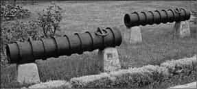
Memlüklerden ele geçirilen toplar.
Kaynaklar Ridaniye Savaşı’nda Memlüklerin Osmanlı saldırısını karşılamak üzere hazırladıkları müdafaa hattına ateşli silahlar yerleştirdikleri konusunda hemfikirdirler. Bu durum Memlüklerin geleneksel olarak ateşli silahlardan çeşitli gerekçelerle nefret ettikleri konusundaki düşüncelerle çelişir gibi gözükür. Aslında yüksek tabakadaki Memlük askeri kastının ateşli silahlarla kendilerini donatmak ve buna göre savaş düzenini belirlemek gibi bir anlayış içinde olmadıkları tartışma götürmez bir durumdur. Onların tavırlarının Osmanlı benzeri ise yine süvari ağırlıklı timarlı sipahilerdir. Ateşli silahlara bakış açısından hattızatında bu iki zümrenin yaklaşım ve anlayışları birbirine benzemektedir. Fakat Osmanlıları farklı kılan unsur, profesyonel ve seçkin piyadelerinin mevcudiyetidir. Memlükler ise ateşli silahları oluşturacak daha alt sınıftan piyade birliklerini teşkil etmekte geç kalmış görünmektedir. Bunda aslında dönemin çağdaş tarihçisi İbn Zünbül’ün Emir Kurtbay/Kertbay’a söylettiği dinî gerekçeler değil115, her iki devletin hiyerarşik yapıları ve merkezi kontrolün mahiyeti rol oynamıştır.
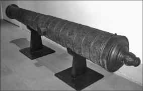
16. yüzyılda kullanılan Osmanlı Topu.
Memlük sultanları üst tabakadaki güçlü Memlük emirlerinin tepkilerini dengeleyebilecek güce sahip bulunmuyordu. Hâlbuki Osmanlı padişahı için böyle bir şey söz konusu değildi, o iktidarını kendi otoritesi altındaki gruplara kayıtsız şekilde benimsetmişti, üstelik Memlük benzeri bir askeri kast sistemi yoktu. Bütün bunlara rağmen yine de Memlüklerin gerek Portekiz gerekse Osmanlı tehdidi karşısında ateşli silah edinme gayretlerinin varlığı inkar edilemez. Nitekim Memlüklerin elinde Kayıtbay zamanından kalma topların mevcut olduğu bilinmektedir. Üstelik Rodos şövalyelerinden de top ve tüfek almış olduklarına dair bilgiler mevcuttur. Nitekim 1516 yazında Mısır ile Rodos arasında elçi trafiği artmıştı. Mercidabık Savaşı’ndan sonra 1516 Ekim ayında Tumanbay Rodos’tan 100 parça top gönderilmesini istemişti116. Bunların gelip gelmediği hakkında bilgi yoksa da bundan önce şövalyeler tarafından yollanmış bazı ateşli silahların mevcud olduğu anlaşılmaktadır. Nitekim Ridaniye’de Memlük toplarının sayısı 100-200 arasında zikredilir. İbn Iyas’a göre Tumanbay Ridaniye savaşı öncesi, her birinin içinde gülle atan tunç topların bulunduğu 100 araba (Osmanlı tipi), kalkan, barut, kurşun, demir, tahta mızrak gibi malzeme taşıyan 200 deve, Türkmen ve Mağribilerden oluşan 200 topçudan (muhtemelen tüfekçi olacak) ibaret bir gücü teftiş etmişti117. Burada zikredilen topların hafif tipte oldukları söylenebilir. Bazı Osmanlı kaynaklarında “Frengistandan gelen topçular ve tüfekçiler, prangılar tedarik edilip her tarafa toplar kurdurulduğu” yolunda ifadeler mevcuttur118. İbn Zünbül ise, sayı vermeksizin toplardan söz eder ve Tumanbay’ın gizlediği büyük top hakkında bilgi verir. Ona göre savaştaki ani gelişme karşısında ancak birkaç küçük top ateşlenebilmiş, Mecnun adlı topçu tek bir atış yaptıktan sonra kaçmıştır119.
Memlüklerin top ve tüfek varlığı ile ilgili olarak bugüne ulaşan bir Osmanlı belgesi konuyu kesinleştirecek bilgi sağlar. Kahire’nin düşmesinden hemen sonra 7 Mart 1517/13 Safer 923 tarihli bir raporda, Reşid ve İskenderiye kalelerindeki silahların ve malzemelerin sayımı hakkında bilgi verilirken top ve tüfekler de kaydedilmiştir120. Buna göre çoğu darbzen denilen tipte, kullanılır durumda top sayısı Reşid’de 100 kadardır. Ayrıca kırık, kullanılmaz durumda top ve tüfek sayısı 240 dolayındadır. Burada ayrıca iyi durumda 29 tüfek de vardır. İskenderiye’de ise 50’si büyük tipte 90’ı aşkın top tespit edilmiştir. Ancak bunların çoğu demirden imal edilmiş eski tipte toplar olmalıdır. Ayrıca kırık oldukları bildirilen topların ise kalenin boşaltılması sırasında tahrip edilebilenler olduğu düşünülebilir. Bu belge hiç şüphesiz Ridaniye’ye götürülen topların dışında kale müdafaası için bırakılan topların sayısını gösterir ve Memlüklerin ciddi sayıda bir top birikiminin mevcudiyetine delalet eder. Tüfek sayısının azlığı ise muhtemelen önemli bölümünün savaşa sevkiyle ilgilidir. Fakat Memlükler savaşta bu silahları etkili şekilde kullanamadılar. Aslında onlar bu silahları daha çok savunma amaçlı olarak düşünmekteydiler. Meydan savaşlarında nasıl kullanılacağı konusunda muhtemelen bir fikirleri yoktu. Ateşli silahların önemini kavradıkları kesindir, fakat bunlarla sonuç alabilecek bir savaş pratiğine sahip değillerdi. Portekizlilerin gelişiyle başlayan süreçte Memlük askeri kastının ateşli silahlardan nefret ettiği şeklindeki söylemi dini gerekçelere dayandırmak yanlış bir yaklaşımdır.
Sonuç olarak D. Ayalon’un Memlükler’de ateşli silahlara karşı olan tepkilerle ilgili ileri sürdüğü ve daha çok askeri sınıfın süvariliği imtiyaz ve üstünlük nişanesi olarak görüp statülerini sürdürebilmek için ateşli silahların devreye girişiyle oluşacak yeni askeri grubun kendilerine rakib olma ihtimalini de göz önüne alarak buna şiddetle karşı çıkmış oldukları ve bunun bahanesini de dini motiflerde aradıkları fikri genel hatlarıyla doğru görünmektedir. Ancak bu görüşlere, o dönemlerde bu silahlara olan güven ve işe yararlılık gibi mülahazalarla, nasıl kullanılacağı meselesinin ciddi bir sıkıntı yaratmış olabileceği noktası da eklenmelidir. Memlükler aslında bu silahları bilmedikleri için değil, söz konusu silahlarla ilgili ciddi bir tecrübe yaşamadıkları ve bunlarla sonuç alınabileceğinden emin olmadıkları için önem vermemiş olabilirler. Osmanlıların etkili şekilde yeni harp usulleriyle ateşli silah kullanımları karşısında ise artık yeni bir çağın başladığını daha acı bir şekilde anlayacaklardır.
Osmanlıların, Mısır’a hakim olduktan sonra ise gereken askeri dönüşüm için derhal harekete geçmiş olmaları ilginçtir. Nitekim yukarıda sözü edilen silah sayımın yapılmasından iki ay kadar sonra Mısır’da, 14 Haziran-13 Temmuz 1517/24 Cemaziyelevvel-23 Cemaziyelâhır 923 tarihlerini ihtiva eden bir yıllık Tophane masraf defterindeki121 veriler, ihtiyaç maddeleri ve özellikle tamirat hizmet alımları ile ilgili olup bir bakıma daha Yavuz Sultan Selim Kahire’den ayrılmadan önce burada yeni bir tophanenin oluşturulmasının ilk emarelerini verir. Bundan sadece yedi yıl sonra ise ateşli silahlara karşı antipati duydukları ileri sürülen zümrelerden atlı tüfekçi birlikleri oluşturulması ve bir de tüfek imalathanesinin varlığı dikkat çekicidir. Mısır’daki karışıklıkların ardından İbrahim Paşa’nın çabalarıyla 1524’te tanzim edilen Mısır kanunnamesi, 900 kişilik bir atlı süvari birliği teşkilini öngörmekteydi122. Bu yeni birliğin tıpkı daha önce Melikü’nnâsır Muhammed zamanında olduğu gibi Memlük evladından /cündilerden ve gönüllülerden oluşturulduğu tahmin edilmektedir. Bu durum artık Mısır’ın ateşli silahlar ve yeni askeri teşkilatın ortaya çıkışı bakımından Osmanlı idaresi altında yeni bir döneme adım attığının ilk ciddi işaretleridir ve sonuçları itibarıyla bu yaklaşım uzun vadede modern Mısır’ın mübeşşiri olmuştur.
EK
Reşid ve İskenderiye kalelerinde bulunan Memlük
silahlarının ve malzemelerinin sayım defteri
TSMA, nr. D. 5641.
I. Der-beyân-ı süyûf [kılıç] ve kısî [yay] ve sihâm [ok] ve cebe ve hûd [baş zırhı] ve bergüstvân [at örtüsü] ve etrâs [kalkan] ve nîze [mızrak] ve gayrihu der-mahzen-i burc-ı Reşid mevcûd-yâfte fî 13 şehr-i Saferi’l-muzaffer sene 923. [7 Mart 1517]
Kelâmullah vakf-ı Kayıtbay der-Cum’a-yı burc-ı Reşîd: 1
Kalıhâ-yı Cum’a-yı burc-ı Reşîd, aded: 21
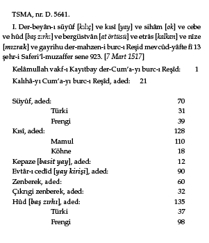
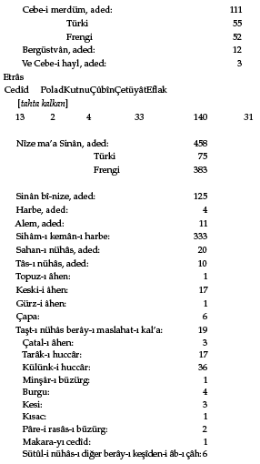
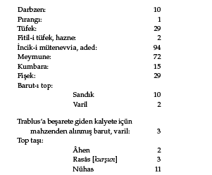
Aded-i tophâ ve pırangıhâ ve darbzenhâ ki bîrûn-ı mahzen der-havlu-i burc-ı Reşid mevcûd-yâfte
Top: 2, incik, 2
Pırangı: 4, incik, 5
Darbzen: 12, incik, 12
Aded-i tophâ-ı darbzen ber-havâli-i bedenhâ-yı kal’a-i bîrûnest
Top: 2, incik 2
Darbzen: 29, incik 29.
Aded-i tophâ ve darbzenhâ-yı büzürg ki der-zîr-i havâli-i kal’a-yı bîrûnest
Şayka: 13, incik 15
Top: 24, incik, 31
Darbzen: 6, incik 7
İncikhâ-i müteferrika ki topeş nedâred: 34
Trablus’a beşârete giden kalyete içün kal’adan alındı: pırangı, 2 aded
Kal’a içinde burcun dairesinde yığılan çûb-ı vürdinâr ve gayrının adedi: 88
II. Sûret-i defter-i […İs]kenderiye’nin liman kenarlarında olan Büyük Kule ile Küçük Kulesinde bulunan silahları beyân eder ki tahrîr olunur:
Tafsîl
Kelâm-ı kadîm, eczâ
İplik kadifesinden cebeler: yüz on dokuz
Poladdan büyük cebeler: elli üç
Poladdan tolgalar: yüz kırk sekiz
Frengi zenberekler: yüz altmış altı
Eski zırhlar: otuz üç
Envâ’ yaylar: yüz on bir
Poladdan alem başları: on bir
Hezerân köhne kalkanlar: on sekiz
Köhne tahta kalkanlar: on beş
Tahire harbeler: otuz sekiz
Taftalı alem başları: dört
Enva’ cebehane nacakları: on sekiz sandık
Zenberek: üç sandık
Bayraklı gönderler: yüz
Sade gönderler, bayraksız: seksen sekiz
Çubuk demür: tahmînen kırk kantar
Demir meymûne: kırk kantar ve top enigi tahminen yirmi kantar
Pirinç teneke/tenge tahta: kırk dört aded
Poladdan köhne ve büyük amele gelmez cebeler: on sekiz
Büyük kazan: iki kıt’a
Bakır bâdiyeler: dört kıt’a
Bakır sahanlar: on dört aded
Sini: iki kıt’a
Kefgir sahan: bir kıt’a
Pirinç: iki buçuk zenbil
Bal: yirmi sekiz küçük küpçükler
Zeyt yağı: on altı küp
Pîh yağı: dört fıçu ve iki zenbil
Peynir: bir fıçu
Eski peksimet: bir mikdar
Bakla: beş kile
Mercimek: üç kile
Çam sakızı: iki küp
İp: iki kıt’a
Büyük ve küçük kıt’a demür: üç kantar
Zift: tahminen iki kantar, üç zenbil
Çam tahtası: iki yüz aded
Keten: üç çuval
Kurşun: on iki kıt’a
Kibrit: iki küp
Ham güherçile: tahmînen üç kantardır
Baş toplar, bakırdan: Büyük burçta dört aded, Küçük burçta bir aded
Demürden baş toplar: Büyük burçta otuz dört, Küçük kulede beş aded
Darbzenler, demürden: on bir kıt’a, dördü Büyük burçta, yedisi Küçük burçta
Şayka toplar demürden: Büyük burçta beş kıt’a
Demürden eski darbzenler: Büyük burçta otuz bir aded, Küçük burçta yedi aded, amele kabil değildir
Tafsîl: Küçük burçta olan silahlar
Kılıç: yirmi bir kabza
Kadifeden ve gayriden cebeler: yirmi dört aded
Poladdan tolgalar: dahi yirmi dört aded
Yeni yaylar: yirmi kabza
Eski yaylar: dahi yirmi kabza
Yay kirişleri: kırk dört aded
Hezerân kalkanlar: otuz üç aded
Nacak: bir sanduk
Ham güherçile: bir varil
Top otu: bir sanduk
ASKERİ DÖNÜŞÜM ÇAĞINDA EVLİYA ÇELEBİ VE ATEŞLİ SİLAHLAR
Avrupa’nın teknolojik bakımdan tarihi gelişim süreci içinde en önemli kavramlarından biri, ordu sistemi ve savaş usullerinde, ateşli silahlara dayalı yeni bir sistem olarak izah edilen “askeri devrim”dir ve bu kavram onların hasımları karşısında askeri üstünlüğünün de bir göstergesi şeklinde yorumlanır123. 16. yüzyılda başlayıp 17. yüzyıl boyunca tam olarak uygulandığı ifade edilen ve özellikle tüfekli piyade ve süvari birliklerinin ön plana çıktığı bu sistem, tamamıyla Avrupa tarihinin kendisine has gelişmeleri çerçevesinde izah edilip kavramlaştırılmış gözükmektedir. Ateşli silahlar teknolojisini sadece Batı’ya has bir gelişme çizgisinde takip etmek aslında pek de doğru bir yaklaşım sağlamaz. En azında her şeyin adeta başlangıcı olan barutu Çinliler bulmuştur. Bundan silah üretiminde istifade etmek de yine sadece Batı’ya has bir gelişme olmamıştır. Ancak Avrupa’da bu teknolojinin geliştirilmiş bulunduğu açıktır. Aslında buradaki başlıca mesele bunun hangi tarihi zaman dilimine yerleştirileceği keyfiyetinde düğümlenmektedir. Bu bakımdan Avrupa dışındaki teknolojik gelişimin mahiyetini anlamak özel bir önem kazanmaktadır. Hiç şüphesiz böyle bir durumda karşımıza geniş bir doğu dünyası çıkmaktadır. 15. ve 16. yüzyılda ateşli silahların çağı başladığına göre bu asırlarda hükümran olan Osmanlı, Memlük, Safevi, Babürlü, Özbek gibi devletler yanında Uzakdoğu’da Çin, Kore ve Japonya, hatta Güneydoğu Asya’daki siyasi teşekküllerin durumu incelemeye değer bir alan olarak durmaktadır124. Özellikle küçük ateşli el silahlarının askeri devrimin önemli bir ana argümanı olduğu esasından hareket edilecek olursa, bunun barutun yayılımının tersine batıdan doğuya doğru uzandığı, bu durumda da Osmanlıların bir anahtar rol oynadığı düşünülebilir. İlginç şekilde birkaç istisna dışında Osmanlı askeri sisteminin bu gelişmelerdeki payına ise ya çok az değinilmekte ya da hiç önemsenmemekte, ciddi bir karşılaştırma yapılmaksızın onların hâlâ süvari ağırlıklı klasik bir taktiğin takipçileri olarak kendilerini geliştiremedikleri ifade edilmektedir125. Bu da şüphesiz yeni bir tartışmayı gündeme getirecek bir açılım sağlar. Haliyle de yapılan tartışmaların gelip dayandığı noktada göreceli olarak Osmanlıların ateşli silahlar karşısındaki tavırları ve bunlara dayalı taktikleri bakımından Batılı rakiblerinin gerisinde kalıp kalmadığı, üzerinde ehemmiyetle durulması gereken bir mesele halinde karşımızda durmaktadır126. Bu probleme ışık tutacak kaynak serilerini ise hiç şüphesiz başta Osmanlı vekayinameleri olmak üzere arşiv belgeleri ve Batılı gözlemcilerin raporları oluşturmaktadır. Bu kaynak serisi içine Avrupa’da ateşli silahlara dayalı yeni taktik gelişmenin artık iyice yerleştiği bir dönemde, yani 17. yüzyılın ortalarında son derece dikkat çekici bir çağdaş kaynak olarak Evliya Çelebi Seyahatnâmesi de katılabilir mi? Burada bu sual çerçevesinde Evliya Çelebi’nin bu yöndeki bilgilerinin tespitiyle bunların söz konusu kaynak serisi içerisinde nasıl bir yere sahip olduğu ve hangi tür bilgilerle mücehhez bulunduğu üzerinde durulmak istenmektedir.
Evliya Çelebi’nin bilgilerine geçmeden önce kısaca Osmanlılarda hafif ateşli silahların kullanımı hakkında bazı hatırlatmalarda bulunmak yararlı olacaktır. Osmanlılarda ağır ateşli silahlar dışında elde kullanılabilecek ölçüdeki hafif ateşli silahlar konusunda ilk derli toplu öncü bilgiler, H. İnalcık tarafından daha 1950’li yıllarda verilmişti. Memlüklerin ateşli silahlara karşı tepkilerinin de yer aldığı D. Ayalon’un görüşlerini bir kitap tanıtması sırasında ele alan H. İnalcık, erken tarihli Osmanlı tahrir kayıtlarından hareketle, daha 15. yüzyılın ortalarında Osmanlı kale muhafızlarının hafif ateşli el silahları kullandıklarını örnekleriyle açıklamıştı127. Gerçekten batıda askeri devrim tartışmaları içerisinde yer tutan öncelikli konu, Hıristiyan orduların tüfek genel adıyla anılan hafif el silahlarını kullanmaları ve topluca seri ateş açma kabiliyetini edinmiş piyade ve süvari gücüne sahip olmalarıdır. Bilhassa piyadelerin birkaç sıra halinde sürekli ateş edebilmelerine imkân veren sistem, yani “yaylım ateş” tekniği en temel faktör olarak öne çıkarılmıştır. Üstelik bütün bu uygulamalarla ilgili tezlerde ve yaklaşımlarda Osmanlı tarafı tamamen bir tarafa bırakılarak Batı tarihinin temel kalıplarında, biraz da “Whiggist” bir değerlendirme tercih edilmiş durumdadır128. Hâlbuki daha İstanbul’un fethi akabinde 1450’li yıllarda Osmanlı tahrir kayıtları, düzenli tüfekli birliklerin sınır kalelerinde görev yaptıklarını doğrulamaktadır. Mesela Osmanlı hizmetindeki Sırp tüfekçileri dışında Novaberda Kalesi’nde 10 kişilik bir Yeniçeri tüfekçi birliğinin varlığı dikkat çekicidir129. İlk düzenli yaya birlikler olarak Yeniçerilerin bir bölümünün İstanbul’un fethinden sonra tüfeklerle donatılmış olduğu hususunda bazı yabancı gözlemcilerin raporları mevcuttur130. 16. yüzyıla gelindiğinde 7 bin Yeniçeri içinde en az 4 bini tüfekli birlikler halindedir. Buna karşılık batıda bunun gibi düzenli daimi askeri birliklerin oluşumu için Otuz Yıl Savaşları’nı (1618-1648) beklemek gerekecektir. Evliya Çelebi’nin çağında ise Osmanlı orduları hem süvari hem de piyade olarak ciddi sayılara ulaşan bir askeri güce sahip durumdaydı. Üstelik yaylım ateş tekniğini batıdan çok önce daha XVI. asrın başlarındaki büyük meydan savaşlarından itibaren biliyorlardı. Nitekim Çaldıran, Mercidabık ve Ridaniye savaşlarında tüfekli birliklerin etkin ateş gücüyle hareketli manevralar yaptıklarına dair dönemin kaynaklarından bilgiler edinilebilmektedir131. Özellikle Mohaç’ta, savaşın şahidi bir Osmanlı tarihçisi, dokuz saf tertib olan Yeniçerilerin saf saf tüfek attığını beyan ederek kademeli yaylım ateş tekniğinin burada uygulandığını açık şekilde belirtir132. Avrupa tarihinde ise yaylım ateş tekniğinin ilk düşünülüşü 16. yüzyılın sonlarına (1594) denk düşer, tam anlamıyla uygulanması ise Otuz Yıl Savaşları sırasında İsveç Kralı tarafından gerçekleştirilmiştir (1620)133.
İşte bu noktada devrin diğer kaynakları yanında Evliya Çelebi’nin konuyla ilgili bilgileri önem kazanmaktadır. Nitekim onun çağdaşı sayılan tarihçi Peçuylu İbrahim Efendi, Uzun Savaşlar sırasında (1593-1606) Alman ve Macar birliklerinin üstün tüfeklerinden söz ederken, bunu kendi yaşadığı çağa bir mesaj vermek için vasıta olarak kullanıyordu134. Hâlbuki Evliya Çelebi bizzat içinde yaşadığı irili-ufaklı çarpışmalar ve savaşlar dolayısıyla askeri devrimi çağrıştıran ve destekleyen terminolojiye eserinde herhangi bir mesaj endişesi taşımaksızın sıklıkla yer vermiştir. Üstelik eserdeki terminoloji o çağın Osmanlı toplumunda yaygın bir şekilde biliniyor olmalıdır. Eserden ayrıca yine askeri devrimin temelini oluşturan ateşli el silahları yani tabanca ve tüfek ile birliklerin yaylım ateş uygulaması konusunda dikkat çekici bilgiler edinilebilmektedir. Bu noktada onun kayıtlarını iki ana başlık altında değerlendirebiliriz. Bunlardan ilki ateşli silah çeşitleri, ikincisi ise savaş usulleriyle tüfek kullanım şekilleridir.
Bilindiği gibi Evliya Çelebi Seyahatnâmesi sadece şehir, toplum, dil, kültür vb. bilgileri değil ayrıca dönemin siyasi olaylarını ve savaşlarını da konu edinen tarihi bir önemi haizdir. Bizzat Evliya Çelebi katıldığı gazaları/savaşları büyük bir iftihar vesilesi olacak raddelerde sıralamakta ve bunlar hakkında yer yer kroniklerde rastlanmayacak tafsilatta ayrıntılı bilgiler verebilmektedir. Dikkat çekici husus onun çağdaşı olan tarihçilerin tasvir ettikleri olaylara onlardan daha fazla temas etmiş olmasına rağmen Seyahatnâme’sinin bir tarih kaynağı olarak hemen hemen hiç kullanılmamış bulunmasıdır. Nitekim mesela dönemin bazı kaynaklarını yayımlayan nâşirler, dipnotlar halinde diğer kaynaklarda konuyla ilgili bilgilerin nasıl geçtiğini sıralarken, Evliya Çelebi’yi ihmal ederler. Hâlbuki tartışmalı ve kaynakların birbiriyle tenakuza düştüğü bir ortamda, Evliya Çelebi’nin verdiği bilgi bazen son derece vâzıh ve doğru olabilmektedir. Mesela 1663’te Uyvar kalesinin fethi sırasında hizmetinde bulunduğu Reisülküttab Şamizâde Mehmed Efendi ile damadı İbrahim Paşa’nın veziriazam Köprülü Ahmed Paşa tarafından katledilmesi meselesinde ve vuku bulan olaylarda bizzat kendi gözlemlerini aktarır ve dönemin kaynaklarından Silahdar, Abdi Paşa ve İsazâde’den daha ayrıntılı ve asker içinde yaşananları tafsil eden bilgi verir135.
Evliya Çelebi’nin katıldığı büyük çaplı savaşlar Köprülü Mehmed Paşa’nın 1068/1658 Yanova Kuşatması, 1070/1660 Varat Kuşatması sırasında cereyan eden çarpışmalar, 1073/1663 Köprülü Fazıl Ahmed Paşa ile Uyvar ve Yenikale (Serinwar/Zrinwar) fethi, ardından da 1075/1664 St. Gotthard yenilgisi ve 1079-1080/1668-1669 Kandiya Kuşatması’dır. Ayrıca Kırım kuvvetleriyle Lehistan ve Kazaklara karşı yapılan küçük çaplı çarpışmalar, Özü Kuşatması’na karşı direniş vb. gibi olayların da içindedir. Yine Melek Ahmed Paşa ile Doğu Anadolu’da mahalli beylerle olan çarpışmalara katılmıştır. Bundan dolayı onun “canlı şahidi” olduğu askeri harekâtlarda, bekleneceği gibi konumuzu ilgilendiren silah türleri ve kullanımı konusunda ayrıntılı kayıtların varlığı şaşırtıcı değildir136.
Öncelikle Evliya Çelebi’nin zikrettiği ateşli silah çeşitleri içinde fitilli ve çakmaklı tüfekler, kısa tüfek yani tabancalar başta gelir. Özellikle tüfeğin kim tarafından icat edildiği meselesine dahi kafa yormuştur. Ona göre böylesine önemli bir silahın keşfi şerefi Müslümanlara aittir: Tüfek Emeviler döneminde Kurtuba fethedilirken kullanılmış ve o asırda “kefereler tarafından telif” edilmiştir. Yani burada ilginç şekilde barut ve buna dayalı teknolojinin Avrupa’ya giriş yolu konusunda bir çerçeve verilmek istenmiştir. Evliya Çelebi bu arada tüfeğin ilk defa Hz. Davud zamanında ortaya çıktığını; iki tarafı delikli bir boru halinde olup ağızla üflenmek suretiyle içindeki toprak sert tane atıldığını; sonra barut telif yani icad olunca buna barut konduğunu da eklemiştir137. Bu bilgiler şüphesiz tamamıyla doğru olmayabilir, ama zaten tarihi gelişim konusunda pek az bilgi olan bu konuya farklı bir bakış getirmesi bakımından göz ardı da etmemek gerekir.
Evliya Çelebi tüfek ile ilgili bu bilgiyi verdikten sonra, İstanbul’daki tüfekçi esnafını anlatırken imalathanelerin yerleri konusunu açıklığa kavuşturur. Bunlar Unkapanı dışında, Odunkapısı’nın iç yanında ve Divanyolu’ndadır. En büyüğü ise Unkapanı’nda bulunur ve 400 dükkandan ibarettir. Burada tüfekçi ustalarının 40-50 dirhem (120-150 gr) kurşun atar büyük tipte tüfekler yaptıkları belirtilir. Bunlar cevherdar, nalpâre, sermâye olarak adlandırılır138. Evliya Çelebi tüfeğin etkili olduğunu göstermek için bu 40-50 dirhem kurşun atar tüfeği eserinin bundan sonraki sayfalarında sıklıkla zikredecektir. Bunu standart bir ifade olarak yer yer abartılı bir şekilde kullandığı da anlaşılmaktadır. Çoğunlukla da 40-50 dirhem atar tüfekleri Dalyan/Dalyan boylu tüfekler olarak anmıştır139. Büyük tipte tüfeklere Evliya Çelebi’nin özel bir ilgisi olduğu birçok ifadesinden anlaşılır. Hâlbuki bu sıralarda Avrupa’da daha kolay taşınabilir el silahlarında önemli gelişmeler olmuştu. Aslında Osmanlıların yeni silah teknolojisini takip edip kendilerine mal edebilme beceresini gösterebildikleri bilinmektedir. Evliya Çelebi’nin de hafif el silahlarından yer yer rutin ifadelerle söz etmiş olması, bunların asker içinde yaygınlaştığını düşündürür. Nitekim kullandığı kol tüfeği tabiri, daha hafif ve omuza dayalı olarak atılabilen tüfek cinsini gösterir. Yine ilginç şekilde Almanların/Nemçelilerin daha çok ağır tipte ve çatal ağaç üzerine koymak suretiyle atılan tüfeği kullandıklarını, Osmanlı askeri gibi koldan (yani omuza dayalı veya koltuk altına sıkıştırılarak) atmadıklarını, hatta gözlerini yumarak hedefsiz atış yaptıklarını ifade eder. Macarlar yanında “Nemçeli’nin çufut gibi olup asla yüreklerinin bulunmadığını”, ama yaya tüfeklisinin yoğun ateş açma becerisine sahip olduğunu belirtmekten de kendini alamaz. Evliya Çelebi buna karşılık Macarların Osmanlı serhat askerlerine benzediklerini beşer-onar tüfekleri bulunduğunu belirtir.
Bu karşılaştırma dönemin tüfek kullanım metotları açısından karakteristik olarak ilginçtir140. Zira Macarların atlı süvariler olarak yanlarında taşıdıkları tüfekler, daha çok kısa tipte tabancaya benzer hafif silahlardır. Nitekim Evliya Çelebi bu tip silahları tabanca-tüfek veya kısa tüfek diye anar ve bunların Osmanlı atlıları tarafından da kullanılmakta olduğunu ve bele takıldığını zikreder141. Nitekim Van Kalesi muhafızlarından söz ederken onların küheylan at üzerinde oturup ellerinde kargı, bellerinde çifte tabanca-tüfekli taşıdığını yazar142. Onun İstanbul’daki tabancacı esnafından da söz etmiş olması143, bu tip silahların Osmanlı ustaları tarafından imal edildiğinin delilidir. Bunlar çakmaklı/çarklı mekanizmaya sahiptir. Evliya Çelebi tabanca tüfekler veya kısa tüfekleri çakmaklı ve çarklı şeklinde başka yerlerde de söz konusu etmiştir. Hırvat lisanından örnekler verirken pistol tabirini küçük tüfek şeklinde açıklamıştır144. Hırvat sınırlarındaki gaziler ise yalnızca iki silah taşımaktadır: bir kılıç ve bir de çakmaklı tüfek. Buradaki çakmaklı tüfek yine küçük tipte tabanca-tüfek cinsi olmalıdır. Evliya Çelebi sınır gazilerinin asla fitilli tüfek taşımadıklarını ve bir defa yaylım ateş attıktan sonra dalkılıç saldırıya geçtiklerini ifade eder145. Hatta kendisi de seyahatlerinde yanında iki tabanca tüfeği taşımaktadır146.
Onun ayrıca Batılı terminolojiyi esas alarak büyük tipte tüfekler için muskat/muşkat tabirini kullandığı görülmektedir147. Bir başka yerde ise “badaluşka nâm muşkat ve tüfekler” atıldığından söz ederek, bunların büyük tipte meteris tüfeği olduğunu bildirir ve en küçük top cinslerinden olan badaluşka ile özdeşleştirir148. Kullandığı bir başka Batılı terim karabinadır ve bunu karabina tüfekler şeklinde belirtir149. Onun söz ettiği diğer tüfek çeşitlerinin, çarklı veya çakmaklı kol tüfekleri, beş dirhem beş karış avcı boyu tüfek150, sedefkâr kundaklı dalyan tüfekler, dalyan Cezayir tüfeği, sedefkâri kundaklı tüfekler, musanna tüfekler, boy tüfekleri, dalyan boylu tüfekler, musaykal tüfekler, çarklı Macar tüfekleri, mücevher Mazenderan tüfeği gibi bazen kundağının süslü ve namlusunun işlemeli olmasına, bazen de büyüklüğüne ve mekanizmasına göre adlandırmış olduğu dikkati çeker.
Bunlar, döneminde çok iyi bilinen tüfek cinsleri olmalıdır. Nitekim Evliya Çelebi ile çağdaş IV. Murad’ın meşhur musahibi Silahdar Mustafa Paşa’nın cebehane defterinde yer alan tüfek çeşitleriyle yukarıda sıralananların benzerlik gösterdiği tespit edilebilmektedir. Mart 1636 tarihli listede, Cezayir, nalpâre, çarklı tüfeklerle, tabanca tüfeklere rastlanır151. Bu bahiste son olarak Evliya Çelebi’nin, Bitlis hâkimi Abdal Han’ın eşya listesini zikrederken tüfekçi ustaları ve bunların imalatı hakkında verdiği ilginç bilgiden söz etmek yerinde olur. Bunlar doğulu tüfek ustalarının kimliklerinin zikredilmesi bakımından başka hiçbir yerde rastlanmayacak son derece kıymetli bilgilerdir. Evliya Çelebi bu ustaları Sati-i Belhi ve Laçin, Muzaffer Horasanî, Sevindik Han Belhî, Usta Oruç Mısrî ve İstanbuli olarak da Uzun Ömer, Usta Memi, Küçük Ömer, Uzun Mehmed ve Kara Mehmed olarak bildirir. İstanbul ustalarının tüfeklerinin son derece süslü ve mücevher kaplı olduğunu, Niğbolu’da imalathanesi olan Hacı Şaşı Mustafa adlı ustanın ise içi ve dışı burmalı namlulu yeni bir tüfek tipi icat ettiğini, bunun örneğine Osmanlı tüfek imalat merkezleri olan Hersek, Taşlıca, Pazarcık ve İstanbul’da hiç rastlanmadığını, bu kıymetli tüfekten adı geçen ustanın ancak yılda iki tane yapabildiğini yazar152. Bu sonuncusu namlusu yivli bir tüfek çeşidini göstermektedir. Kurşunun daha isabetli ve uzağa gitmesini sağlayan yivli tüfeğin ortaya çıkış tarihi bakımından bu bilgilerin şüphesiz ayrı bir önemi vardır ve o çağda bu tip tüfeklerin Osmanlı dünyasında da bilindiğini ortaya koymak bakımından dikkat çekicidir.
Evliya Çelebi’nin bu bilgileri Osmanlı tipi tüfeklerin çağının Batılı tüfeklerinden farklı bulunmadığı, Osmanlı süvarilerinin hafif çakmaklı tabanca tüfeklerle donatılmış olduğu, piyadelerin genellikle daha ağır tipte tüfekleri kullandığı, ayrıca bunların koldan atıldığı konusunu açıklığa kavuşturarak yapılacak karşılaştırmada belirli bir temel sağlar. Bu husus tüfek atış şekilleri ve savaş tarzındaki değişim ile de kendisini gösterir. Evliya Çelebi’nin bu yöndeki bazı kayıtları, askeri devrim çağının en etkili taktik uygulaması olan yaylım ateş meselesine ciddi bir katkı sağlayacak önemdedir. Özellikle, “yaylım kurşum”, “yaylım ateş”, “kurşum cengi”, “bir yaylım top ve tüfek atma”, “dalyan tüfekler ile kurşum yağdırma” gibi ifadeleri, karşılıklı tüfek atışlarıyla yapılan savaş tasvirleri sırasında sıklıkla kullanmakta olması dikkat çekicidir. Atılan kurşunların cinsini bile bazen tavsif etmiştir. Mesela “yağlı çatal telli kurşumları 40-50 dirhemli tüfekler ile yağdırmak”, “çatal kurşumlar”153, gibi ifadeleri yanında Almanlar tarafından tüfekle atılan muhtemelen özellikle paslandırılmış olduğu için “zehirli” olarak andığı farklı bir kurşundan154, ayrıca “avuç saçması” diye belirttiği saçma kurşun tanelerinden155 dahi söz eder.
Bizzat kendisinin katıldığı küçük çarpışmalarda ve büyük savaşlarda tüfeğin fonksiyonunu belirten örnekleri bolca sıralayan Evliya Çelebi, değişen savaş usulleri hakkında bazı önemli karineler sağlamaktadır. Savaşlarda yaylım ateşin ve tüfekle yapılan muharebenin nasıl gerçekleştirildiğiyle ilgili örneklere rastlamak mümkündür. Köprülü Mehmed Paşa’nın ellerinde hafif ateşli silahlar taşıyan süvari güçlerine benzer şekilde Celaliler üzerine hareket ederken 1000 kişilik “tıraşlı, küheylan atlı ve eli tüfekli” serdengeçti askerinden bir birlik oluşturduğunu söylemesi, Osmanlı ordusunun önemli bir bölümünü oluşturan atlı askerlerin klasik silahlarında ciddi bir değişim olduğunun delilidir.
Savaş tarzıyla ilgili olarak ise ilk ele alacağımız örnek, Boğdan’da Yaş Kalesi altındaki cengtir (15 Aralık 1659/29 Rebiülevvel 1070): Burada tüfekli Osmanlı piyadeleri kat kat yani birbiri arkasına gelecek ve görüş mesafesini kapatmayacak derecede sıralanmış, onların arkasına atlı askerler dizilmiştir. Saldırıya uğrayınca bunlar hemen bir anda yaylım ateş açmışlar ve ardından da her iki tarafın askeri birbirine girmiştir156.
İkinci örnek Ciğerdelen önlerinde yapılan tabya savaşlarıdır. Burada iyi teçhizatlanmış ve her birinin elinde, omzunda, belinde, yanında beşer-onar kısa çakmaklı tüfek bulunan Uyvar Kalesi müdafii Forgaç’ın birlikleri üzerine tüfekli Osmanlı piyadeleri yedi koldan saldırarak 40-50 dirhemlik uzun tüfekleriyle avuç saçması atıp birbirine yanaşık düzendeki bu atlıları dağıtmışlardır157.
Üçüncü ve son olarak zikredeceğimiz örnek Evliya Çelebi’nin de içinde bulunduğu, hatta hayati tehlike atlattığı ve Osmanlı askerinin bozguna uğradığı St. Gotthard Savaşı’dır (1664). Bu savaştan biraz önce Raab/Raba Nehri civarında karşılaşan birlikler karşılıklı olarak birbirlerine yoğun bir tüfek ateşi açmışlardır. Atlı askerlerle tek sıra halinde hücuma geçen Alman birliğini Osmanlı tüfekli piyadeleri yaylım ateşiyle karşılamışlardır158. Müteakıben yapılan büyük meydan savaşında ise meterisler kazılarak tedbir alınmış, tüfekli yeniçeriler meterislerden çıkartılarak hücuma kaldırılmış; fakat atılan top ve tüfeklere rağmen Almanlar yedi koldan yürüyüşe geçerek, top ve tüfek atışlarıyla Osmanlı hattını yarmayı başarmıştır.
Bunun dışında kara savaşları değil donanmada da yaylım top ve tüfek atışlarından söz eden Evliya Çelebi, özellikle Girit’te Kandiya kuşatması sırasında donanma gemilerinden yedi kere birbiri ardınca “yaylım” top ve tüfek ateşi açıldığını ve bunun bir günde 40 defa tekrarlandığını da belirtmiştir159.
Bu örnekler Evliya Çelebi’nin kaleminden çağının değişen savaş taktikleri konusunda açıklayıcı bilgiler sağlar. Üstelik iki ordunun karşı karşıya gelip birbirlerine saldırmalarına dayalı taktiklerin dışında yeni bir savaş şeklini daha gündeme getirir: Tabur Savaşı. Evliya Çelebi tabur savaşını, Osmanlıların ve Macarların daha 15. yüzyıldan beri uyguladıkları sistemden farklı bir şekilde açıklar. Silahlı arabaların çatılmasıyla oluşan taburlar ve bunlara dayalı savaş taktikleri artık yerini karşılıklı siper savaşlarına bırakmıştır ki bu modern savaşların habercisi olma vasfını taşır. Osmanlılar aslında daha 16. yüzyılın sonlarından itibaren hem doğuda hem de batıdaki bazı savaşlarda siper kazarak savaşma sistemini uygulamışlardır. Mesela II. Osman’ın Hotin Savaşı bunun tipik bir örneğidir.
Evliya Çelebi çok açık şekilde tabur cengini anlatırken bunun ne demek olduğunu da izah ederek savaş tarihi literatürü açısından önemli bir detayı ortaya koyar160. Ciğerdelen’deki savaşları tasvir ederken, burada 20 bin adımlık bir tabur kazıldığını, bunun iki kat hendek olup duvarı bulunmadığını, bu tip istihkama “tabur” dendiğini, ele geçirilmesinin ve savaşının kale almaktan çok daha zor olduğunu, içine 70-80 bin kişinin girip cenk ederse bunun “tabur cengi” olarak anıldığını, yalnızca iki kapısının bulunup buraların yığma toprakla korunduğunu, yani tabyalar vücuda getirilip buralara büyük çaplı toplar konularak müdafaa sağlandığını, hücum anında açılan yoğun ateşle düşmanın buraya yaklaştırılmadığını belirtir. Bu gibi taburları ele geçirmenin zorluğundan söz eden Evliya Çelebi, bunun için toprak sürüp, lağım açmak ve sıçan yolları yaparak kol kol hücum etmek gerektiğini bildirir161. Bir başka yerde taburu şöyle tarif eder:
Lisân-ı serhadlide tabur ana derler ki ya bir sahrada yahut bir buheyre ve nehir kenarında bir iki kerre yüz bin küffar ol sahrada topraktan kal‘a yapıp ve ka’r-ı azim hendekler kazup içinde mutahassın oldukları yere tabur derler162.
Bu bilgiler artık kalelerin işlevsiz hale gelmekte olduğunun onun yerini müdafaa ve saldırı için Osmanlıların meteris veya tabur dedikleri siper ve tabya sisteminin almaya başladığının erken tarihli bir örneği olarak mütalaa edilebilir.
Son olarak Evliya Çelebi’nin şahidi olduğu Uyvar Kuşatması sırasında tabya sistemiyle ilgili verdiği bilgiye değinmek yukarıda belirtilen mevzuya daha da açıklık kazandırabilir. Burada müdafilerin kale önlerinde kurulan tabyalarda yerleşmiş bulundukları, Osmanlıların da bunlara mukabil olarak meteris kazdıkları belirtilir. Tabyalardan ve meterislerden karşılıklı yoğun bir tüfek ve top atışı vuku bulmuştur. Bu vesileyle Evliya Çelebi, kaleye karşı kurulan Osmanlı topları hakkında bazı bilgiler verir ve onları bilinen adların dışında farklı isimlerle anar ki bu durum askerin bugün de örneklerine rastlandığı gibi silahlarına özel adlar takmış oldukları keyfiyetini ortaya koyar. Nitekim 30 okka (36 kg) gülle atar topu Lankoz, 40 okka (48 kg) atanı Zâlim, 50 okkalığı (60 kg) Kıran ve 60 okkalığı (72 kg) ise Sedemât şeklinde anmıştır. Uyvar’ı döven topların adları ise Ali Bali, Karakatır, Çultutmaz, Balyemez, Ağzıkırık, Semiz top, Kundakkıran olarak açıklar. Hatta bazı topların atıla atıla ağızlarının genişlediği gibi ilginç bir ayrıntıya da yer verir. Mesela 20 okka (22 kg) gülle atar bir top ateşlene ateşlene ağzı genişlemiş ve bir ay sonra 30 okkalık gülle atar hale gelmiştir. Evliya Çelebi bunu barutun kalitesizliğine yorarak ince bir eleştiride bulunur. Durumu şu darbımeselle açıklar: “Âl-i Osman’ın barutu yaştır, barutçuları kallâştır”163. Buna karşılık Mısır ve Bağdad’da imal edilen barutların iyi kalitede olduğunu bildirdiği gibi dumansız baruttan dahi söz eder164.
Evliya Çelebi’nin verdiği ilginç bir diğer ayrıntı ise kurşun ile yaralanma halinde bunun nasıl bir etkisi olduğu konusudur. Nitekim Melek Ahmed Paşa ile birlikte Van’da bulunduğu sırada vuku bulan mücadeleleri anlatırken birliklerin birbiriyle tüfek cengi yaptıklarını belirterek, savaşa gidenlerin üzerlerindeki zırhları çıkardıklarına şahit olduğunu yazmıştır. Bunun sebebini sorduğunda, zırhlarını çıkaranların kendisine şunu anlattıklarını yazmıştır:
Kurşun cenginde zırh giymek fenadır, bir kurşun dokunduğunda zırhın halka parçaları kurşunla birlikte vücuda saplanır, böylece eğer kurşun yiyen hemen ölmezse, bu yara kangrene dönüşüp büyük ıstıraba yol açar. Hâlbuki zırh olmazsa kurşun vücuda saplanıp kalır veya girip çıkar, şayet öldürücü bir yere isabet etmezse alınacak yara ölümcül bir kangrene dönüşmez165.
Bu dikkat çekici bilgi aslında kumaş parçaları için de doğrudur. Vücuda kurşun ile giren kumaş parçasının çıkarılmaması durumunda yaranın iltihaplanmasına yol açtığı bilinmektedir. Fakat Evliya Çelebi’nin burada zikrettiği husus bundan biraz daha farklı olarak, zırhın demir parçalarının ikinci bir kurşun haline gelmesi keyfiyetidir.
Evliya Çelebi’den ateşli silahların yaygınlaşması ve hayata tam anlamıyla girişi hakkında fark edilen bir önemli husus da artık mesafe bilgilerinde, “bir ok atımı uzaklıkta” şeklindeki tanımlamaların yerini “tüfek menzili veya bir kurşum menzili uzaklıkta” tabirlerinin almış olmasıdır166.
Sonuç olarak Evliya Çelebi Seyahatnâmesi, Avrupa’nın askeri dönüşüm çağında Osmanlıların silah teknolojisi ve buna dayalı taktikler bakımından onlara rahatlıkla ayak uydurabildiğini göstermesi yanında, Osmanlı savaş tarihinin farkına varılmayan ince noktalarını, döneminin çağdaş kroniklerinde rastlanmayacak raddelerde ortaya koymak bakımından önemli bir kaynak vasfını taşımaktadır. Onun verdiği bilgilerin sistemin mantığı içerisinde sağlıklı şekilde tahkiki, Osmanlı savaş usulleri ve ateşli silahların kullanımı konusunda son derece ilginç ayrıntılar sağlayabilecek önemdedir. Seyahatnâme diğer pek çok ciheti yanında savaş tarihi bakımından da vazgeçilmeyecek bir başvuru kaynağıdır.
SAVAŞLAR
KOSOVA 1389: KİMİN ZAFERİ?
1989 yılında Ankara’da Kosova Savaşı’nın 600. yıldönümü dolayısıyla yapılan bir seminerde, aynı yıl bazı Batı ülkelerinde ve Eski Yugoslavya’da yapılanlar gibi Balkan tarihinin bu önemli savaşının sonuçlarının oluş ve sonuçlarına yönelik bir dizi tebliği sunulmuştu167.
Söz konusu sempozyumun amacı, aynı yıl dönemin eski Yugoslavyası’nda doğrudan Kosova Savaşı’nı konu alan ve ve buna dayalı olarak Kosova üzerinde oluşturulan milli bilinci daha da takviye etmeyi hedefleyen geniş çaplı toplantılara karşı Türk tarihçilerinin bununla ilgili görüşlerini açıklamaktı. Zira bir süre sonra gelişecek olan parçalanma sürecinin temellerinin böyle bir tarihi olaya dayalı olarak milli şuuru artırmak suretiyle başlatılacağı, bir avuç tarihçinin katıldığı bu sempozyumda siyasi mahiyeti itibarıyla değil ama tarihi zemini itibarıyla kavranarak, farkedilmişti. Ne yazık ki bu farkediş, her zamanki alışılmış sun’i gündemlerle beslenen genel yayın organları tarafından kamuoyuna duyurulamamıştı. Buna karşılık Belgrad televizyonu geniş çaplı programlar yapmakla kalmayıp Türkiye’ye gelerek bu hususta içlerinde İstanbul Üniversitesi Edebiyat Fakültesi Tarih Bölümü öğretim üyelerinin de bulunduğu bir grup tarihçi ile muhtelif röportajlar yaparak görüş almış ve bunları kendi kamuoyuna yansıtmıştı.
Kosova meselesi, Yugoslavya’nın dağılmasına ve ardından elim bir iç savaş yaşanmasına yol açan hadiseler serisinde hiç şüphesiz önemli bir yere sahip olup bugün de hâlâ siyasi bir çekişme mevzuu olmayı sürdürmektedir. Bu noktada her şey neredeyse bu meselenin tarihi temellendirmesinin başlangıcı olarak “tasvir ve tahayyül” edilen 1389’daki Osmanlılar ile Sırplar ve müttefiklerinin karşı karşıya geldikleri bir Ortaçağ savaşında adeta düğümlenmektedir.
Kosova Savaşı’nı neticeleri ve bakış açıları bakımından akisleri zamanımıza kadar canlılığından hemen hemen hiçbir şey kaybetmeksizin süren nadir hadiselerden biri olarak tanımlamak mümkündür. Bu savaşa muharebe taktik ve teknikleri, askeri niteliği dışında böylesine önem kazandıran husus, bir milletin devlet olma bilincini ve bu bilinçle büyük hedeflere ulaşma yolunda son derece sert ve keskin bir siyaset izlemesini temellendirmiş bulunmasıdır168. Aslında örneklerine tarihte çok rastlanan fazla önemli sayılmayacak bir meydan savaşının -siyasi gelişmeler sonucu neredeyse medeni dünyanın bütün alaka ve müdahalesine yol açacak derecelerde- zamanımıza kadar unutulmaksızın canlılığını koruması, ona benzerlerine nispetle oldukça farklı bir tarihi değer kazandırmıştır. Bir bakıma tarih belki de hiç bu kadar abartılı şekilde milli fikirlere vasıta edilmemiştir. Burada meseleyi ilginç kılan bir başka husus, söz konusu milli bilincin mağlubiyete dayalı olarak teşekkül etmiş olmasıdır; yani bir mağlubiyetin “muhteşem bir zafer” olarak telakkisiyle tarihî bir çarpıtma yapılıp etnik üstünlüğün bunun üzerine inşa edilmesidir. Bu hadise netice itibarıyla parçalanmış Ortaçağ Sırp feodal teşekkülleri için bir ilerleme ve hayatiyet sağlamış olsaydı, bunu anlamak kolay olabilirdi. Ancak 1389 Kosova Savaşı Sırp prensliklerinin hayatlarını idame ettirmekten ziyade onların 15. yüzyıl ortalarına kadar kat’i ilhakına zemin hazırlayan bir dönüm noktası özelliği taşımaktadır. Şu halde bu anlaşılmaz gibi gözüken kavrayış, hangi saiklere dayanır? Bu konuda ne gibi iddialarda bulunulmuştur? Askeri ve siyasi sonuçları tamamen Osmanlıların lehine gelişen bu savaş niçin Sırp folklöründe ve hatta tarihçiliğinde bir zafer olarak algılanır?
Kosova’nın bugünkü sınırları itibarıyla durumu, geçmişte aynı coğrafi tanımlama içerisinde mütalaa edilmediği Osmanlı idari teşkilatı bünyesinde, herhangi bir ayrıcalık ifade etmez. Askeri açıdan Osmanlıların Bosna’ya ve Kuzey Arnavutluk’a hakim olabilmek için buraya büyük önem verdikleri fikri, dönemin Osmanlı idari teşkilatının yapısına bakıldığında pek bir değer taşımaz. Ancak bugünkü Kosova sınırları düşünüldüğünde belirli bir anlam kazanır169. Sırp tarihçileri ve diğer bazı araştırmacılar tarafından imparatorluk olarak telakki edilen Stefan Duşan’ın kurduğu siyasi birlik, bu coğrafyayı da içine alan bir vüs’atte, ideal bir hedef olarak tanımlanır170. Bu birliğin idealize edilmesinin altında hiç şüphesiz bugüne yönelik ciddi bir siyasi hedef yatmaktadır. Duşan’ın kurduğu Sırp çarlığının sona erişiyle birlikte Lazar’ın ortaya çıkışı sonucu yeniden toparlanmaya çalışan gücün 1389’da dağıtılmasının ve Osmanlı hâkimiyetine yol açacak süreci hızlandırmasının Sırp tarihçiliğini ve münevver kesimini derinden etkilemiş olduğu açıktır.
Tarihi kayıtlar 16 Nisan 1346’da Üsküp’te taç giyen Duşan’ın aldığı imparatorluk unvanıyla ortaya çıktığını ve 1355’te ölümü ile kurduğu siyasi birliğin dağıldığını ve devletin küçük müstakil feodal beyliklere bölündüğünü ortaya koyar171. Bunlardan biri olan ve Morova Nehri etrafında hâkimiyet kuran Lazar’ın giderek sivrilişi, 1371’de Duşan’ın oğlu ve halefi Kral Uroş’un ölümünün ardından gerçekleşmiştir. Duşan’ın oluşturduğu bağımsız Sırp patrikliğinin desteklemesiyle gücünü daha da artıran Lazar, zaman içerisinde belirli bir siyasi birlik oluşturacak kudreti elde etmiştir172. Bu gelişmelerde 1371’deki Çirmen Savaşı’nın da önemli bir yeri vardır. Söz konusu savaş Türklerin Balkanlara yerleşmesi açısından 18 yıl sonra vuku bulacak Kosova Savaşı’ndan daha etkili rol oynamıştır173. Ancak hem Osmanlı hem de Sırp ve Batılı kaynakların Kosova Savaşı’na odaklanmasında, Sırbistan’ı yeniden ihya edeceği düşünülen Lazar’ın ve Balkanlar’daki hızlı Osmanlı ilerleyişini sağlayan I. Murad’ın ölümleri neredeyse bütün bir mücadeleyi gölgede bırakacak derecelerde etkili olmuştur. Şimdi 1389 yılı arifesine dönerek gelişen olayları hatırlatıp nihai bir çarpışma ile noktalanacak -veya sonraki tartışmalar nazarı itibara alınırsa belki de noktalanmayacak- olan dönemi anlamaya çalışalım.
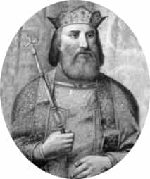
Sırp Kralı Lazar.
Hemen hemen birçok modern incelemede, I. Murad’ın Lazar’ın üzerine yürümesine sebep olarak, 1388’de Ploçnik adlı yerde bir Osmanlı birliğinin uğradığı yenilgi gösterilir. Son yapılan bir araştırmada, bu yerleşmiş bilgiye karşı çıkılarak, 1386’da Niş’in Osmanlılar tarafından fethinden Kosova Savaşı’na kadar geçen devrenin iyi bir kronolojisi yapılmıştır174. Buna göre Niş’in kuzeybatısındaki Ploçnik’te Osmanlı kuvvetleriyle Sırp birlikleri karşılaşmışlarsa da her iki taraf arasında ciddi bir çarpışma olmamış; bunun hemen ardından da I. Murad 1386 Ekim’inde Niş’i ele geçirmiştir. Sırp kroniklerinin bu konudaki karışık bilgileri, bunları tahlil etmeksizin kullanan bazı araştırmacıları yanıltmış, yanlış okuma ve değerlendirmelerin bir sonucu olarak böyle bir kanaat oluşmuştur. Hâlbuki 1388 Ağustos’unda Osmanlı kuvvetlerinin ağır yenilgiye uğraması, Bleka adlı yerde Bosna Kralı Tvrtko önderliğindeki Bosna ordusu karşısında olmuştur. Bu sebeple Lazar’ın bu savaşla herhangi bir ilgisi veya rolü olmamıştır. I. Murad’ın Lazar üzerine yürümesi onun Tvrtko ile işbirliği yaptığı kanaatine sahip olmasının bir sonucudur. Zira I. Murad, Sırp prenslerinin birbirleriyle olan dostane yahut hasmane ilişkilerinden haberdar değildi ve bütün faturayı olayla doğrudan ilişkisi olmayan Lazar’a çıkarmıştı.
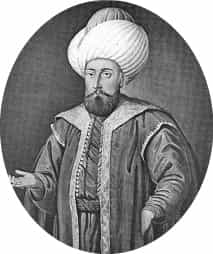
I. Murad.
Bu kronoloji Osmanlı kaynaklarının esaslı şekilde tahlili ve yerli kaynakların yardımıyla geniş ölçüde doğrulanabilir; ancak I. Murad’ın tamamen yanlış kanaatlerle hareket etme düşüncesi, tarihi çerçeveye pek uymamaktadır. Zira uçlarda Osmanlıların çok iyi haber alma kaynaklarının bulunduğu bilinmektedir. Lazar ile Tvrtko arasındaki ilişkinin mahiyeti hakkında ciddi bir istihbarat alınmış olabilir. Öte yandan Lazar’ın bu dönemde hiçbir vakit Osmanlı vasali olmadığı yolundaki iddialar da dayanaksızdır. Bu konuda Osmanlı kaynakları, hususiyle Neşri’nin bu olayları anlatırken kullandığı ve I. Murad dönemini tafsil eden bir Gazaname’nin bilgileri farklı bir tablo çizer175. Burada isyan eden bir vasalin cezalandırılması motifi hakimdir. Bundan dolayı Lazar’ın I. Murad ile olan eski bağını göz ardı etmemek yerinde olur. Ancak bunun bir vasalin isyanından ziyade Osmanlı sınırlarında baş göstermesi muhtemel bir tehlikenin bertaraf edilmesi şeklinde yorumlanabileceği düşüncesi genel hatlarıyla doğrudur. Aslında vasallik bağı sanıldığının aksine I. Murad döneminde hiçbir zaman çok kuvvetli olmamıştır176. Bu tür bağlar özellikle Yıldırım Bayezid zamanında daha katı bir şekle dönüşmüştür. Bundan dolayı vasallik sisteminin tek bir olgu olarak ele alınmaması ve zaman dilimleri içindeki değişiminin gözden kaçırılmaması gerekir.
15 Haziran 1389’da vuku bulan Kosova Savaşı’nda iki tarafın neredeyse birbirine eşit kuvvetler halinde (yaklaşık 30 bin kişi) karşı karşıya geldikleri, Osmanlı ordusunun bir müdafaa savaşı yaptığı, ilk süvari saldırısını Sırp ve Bosna ordusunun gerçekleştirdiği dönemin kaynaklarının tahlilinden anlaşılmaktadır. Bundan sonra savaşın üç önemli dönüm noktası mevcuttur. Bunlar ilk saldırıdan sonraki gelişmeler sonucu a) Müttefik Sırp ordusunun dağılması, b) Lazar’ın damadı ve önemli bir Sırp gücünü kumanda eden Vuk Brankovic’in savaş meydanından çekilmesi, ayrıca Bosna kuvvetlerinin de benzeri şekilde savaşa girmemesi, c) Nihayet Lazar’ın öldürülmesi ve I. Murad’ın suikasta maruz kalmasıdır177. Savaşın sonucunu bu olaylar belirlemiş, hatta bunlar mücadelenin nasıl ve kimin zaferiyle neticelendiği konusundaki tartışmalara da zemin hazırlamıştır.
Sırp kaynaklarından bir bölümü savaş sırasında Vuk Brankovic’in ihanet edip Lazar’ı yalnız bıraktığını yazarlar. Bir Katalan kaynağı ise Lazar’ın damadı Brankovic’in Lazar’ın ölümü üzerine savaşın kaybedilmiş olduğunu düşünerek bir an önce beyliği eline geçirebilmek için savaş meydanından çekilip kendi topraklarına döndüğünü belirtir178. Bundan dolayı savaşın kaybı bir kısım araştırıcılar tarafından Vuk’un ihanetine bağlanır179. Aslında öyle anlaşılıyor ki Vuk Brankovic çekildiğinde zaten her şey bitmiş gibiydi ve Lazar ölmüştü. I. Murad’ın şehadetinden de Brankovic’in haberi yoktu. Sırp kaynakları olaya I. Murad’a suikastta bulunan Miloş Kobiliç’i de katarak Lazar ve Vuk Brankovic’in onu Türk taraftarı olarak suçlaması üzerine Miloş’un Murad’ı öldürme yemini ettiğini de belirtirler. Bu ise epik bir kahramanlık hikâyesiyle metni dramatize etme anlayışının bir sonucu olsa gerektir. Böylelikle burada karşımıza çıkan bir başka kilit şahsiyet hiç şüphesiz Miloş olacaktır.
Osmanlı kaynaklarında savaşın sonuna doğru yahut sonunda I. Murad’ın uğradığı suikasttan sonra öldüğü, esir düşen Lazar’ın ise I. Murad’ın vefatının ardından idam edildiği bilgisi esas alınır. Savaşın sonucunu da Yıldırım Bayezid tayin etmiştir. Kısaca bu kaynaklarda yer verilen görüşler özetlenecek olursa: Çekilen Sırp kuvvetlerini takibi dolayısıyla Murad’ın yanında çok az adam kalmış, ölüler içinde gizlenen bir yaralı asker, padişaha bir isteğinin olduğunu söyleyip yanına gelerek gizlediği hançerle onu şehit etmiştir. Genel olarak Ahmedi, Şükrullah, Karamani Mehmed Paşa, Âşıkpaşazade gibi ilk Osmanlı müverrihleri180 küçük farklarla bu bilgilere yer verirlerken onlarla çağdaş Enveri çok farklı bir rivayeti kaydeder. Ona göre Miloş (bu ad metinde zikredilir) daha önce sultanın kulları arasında bulunmuş, bilahare kaçıp yeniden Hıristiyan olmuş ve babasının yerine geçerek beyler arasına girmiştir. Bundan dolayı Murad’ın yanına kadar gelebilmiştir181. Yani Miloş, ölüler arasına gizlenen bir yaralı değil Lazar’ın tutulmasının ardından padişaha itaat etmek üzere gelen bir Sırp beyi olarak takdim edilir. Bu bilgi, olayların seyri yanında Sırp ve Katalan kaynaklarındaki karışık rivayetlerle karşılaştırıldığında hadiseye dikkat çekici bir boyut kazandırır.
Sırp ve bazı batı vekayinameleri, Murad’ın ölümünü çarpışmanın ortalarında düzenlenmiş ve önceden tertiplenmiş bir saldırının sonucuna bağlama eğiliminde olup kahraman 12 şövalye -bir başkasına göre 9 şövalye- içinde bulunan Miloş’un mızrakla I. Murad’ı yaraladığı gibi bir motifi ortaya atarlar. Böylece Murad’ı öldürmeye and içmiş soylu fedai gurubunun sistemli bir saldırısı şeklinde inandırıcılıktan uzak epik/destani hikaye oluştururlar. Bir Katalanlı kronikçi, daha da ileri gidip Murad ile göğüs göğse çarpışmaya and içmiş bir Macar şövalyenin atını mahmuzlayıp sultana ulaştığını, Murad’ın ona bir ok savurduğunu, fakat buna aldırış etmeksizin mızrağını fırlatıp sultanı yaraladığını yazar182. Bu konuda daha pek çok destanî hikâye, epik şarkı ve şiirler mevcuttur183.
Bütün bu meselede şurası açıklıkla belirtilmelidir ki, Osmanlı ordugâhında en iyi korunan yer padişahın bulunduğu merkezdir. Buraya ulaşabilmek için çok güçlü bir saldırının yapılması gerekir. Ancak kaynaklar böyle güçlü bir saldırıyı ima etmezler. Murad’ın yanındakiler savaşın kazanıldığını gördükten sonra savunma zincirini gevşetmiş ve bu sırada ya tertibli ya da münferit bir suikast gerçekleşmiş olmalıdır. Bu noktada Enveri’nin yazdıklarının doğru bir bilgiye dayanma ihtimali ortaya çıkar. Ayrıca diğer Osmanlı kaynaklarının da böyle bir senaryo uydurmaları, yani Murad’ı gaflet içinde gösterecek derecede olayı tasviri pek beklenemez. Şayet göğüs göğse bir çarpışma vaki olsaydı bu çok şerefli bir kahramanlık olarak tebşir edilirdi.
Bu arada konuyla ilgili bir başka ilginç iddia, Murad’ın suikasta uğramasında yerine geçmek isteyen oğlu Yıldırım Bayezid’in parmağı olduğudur. Bezm ü Rezm adlı eserin müellifi olan ve Bayezid’in amansız düşmanı Kadı Burhaneddin’in tarihini kaleme alan Esterâbâdi, Bayezid’in babasını öldürttüğü şeklinde bir rivayetin kulaktan kulağa yayıldığını belirtir184. Bundan hareketle daha sonraki Osmanlı-Sırp ittifakının da dikkate alınarak Bayezid’in Sırp dostlarıyla anlaştığı, savaş sırasında bu suikastin gerçekleştiği, hatta Lazar’ın ölümünde onunla anlaşan Vuk Brankovic’in rolü olduğu üzerinde durulur. Fakat bu iddiayı destekleyecek argümanlar çok zayıftır. Öncelikle Bezm ü Rezm’deki bilgi, Osmanlı karşıtı bir kaynak olması dolayısıyla güvenilir değildir. Öte yandan Vuk Brankovic’in hıyaneti konusu da yukarıda temas ettiğimiz gibi bir karıştırma mahsulüdür. Bundan dolayı bu iki zayıf bilgiyi birleştirerek böyle bir iddiayı ileri sürmek doğru bir yaklaşım olmamalıdır. Lazar’ın ise esir düştükten sonra Murad’ın uğradığı suikastın ardından idam edilmiş olduğu açıktır. Onun savaş sırasında Osmanlı kumandanlarından Eyne Bey subaşı ile çarpışırken öldürüldüğü bilgisi, yine ona kahramanlık rolü biçme gayretinin bir sonucu gibi görünmektedir.
Bütün bunlardan sonra bu makalenin başında belirtilen soruya dönelim. Savaşı kim kazandı? Böyle bir sual oldukça garip karşılanabilir. Zira Kosova üzerine dikkat çekici bir araştırma yapmış olan N. Malcolm’un ifadesiyle, “..Sırp tarihinin bu en meşhur yenilgisiyle ilgili olarak böyle bir sorunun sorulması oldukça tuhaftır…”185. Savaşın Sırplar tarafından kazanıldığı kanaati Sırp dini metinleri ve halk kültüründe yaygın olduğu gibi bazı tarihçiler tarafından da benimsenmiş gözükmektedir. Daha temkinli olanları ve bazı Batılı tarihçiler ise burada savaşın galibi veya mağlûbunun bulunmadığı görüşünü ortaya koymuşlardır186. Kaynaklara inildiğinde Osmanlı kroniklerinde tereddüde mahal verilmeksizin burada kazanılan zaferden söz edilir. Ancak bazı kaynakların -mesela Ahmedî ve Âşıkpaşazâde- ilgilerini I. Murad’ın suikastine çevirip savaşın sonucu hakkında bir ifade kullanmamaları tamamen özet anlatımın bir sonucu olup bundan mesele ile ilgili bir netice elde edilemez.
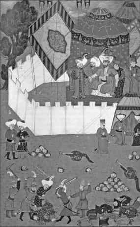
I. Murad’ın Kosova’da, savaş meydanında uğradığı suikast ve yakalanan Miloş’un katlini tasvir eden minyatür.
Neşri’nin kaynağı ve Enveri çok açık olarak bunu bir Osmanlı zaferi şeklinde belirtmişlerdir. Buna mukabil savaşın hemen sonrasında Bosna Kralı Tvrtko’nun Floransa senatosuna yolladığı mektupta, Kosova Savaşı’nı Türklere karşı kazanılmış büyük bir zafer olarak takdim etmiş olması dikkat çekicidir. 1 Ağustos 1389’da senatoya yollanan bu mektup bugüne ulaşmamıştır. Ancak Floransa senatosunun 20 Ekim 1389 tarihli cevabi mektubunda Tvrtko’dan alınan haberler tekrarlanarak bundan duyulan memnuniyet ifade edilmiştir187. Aslında Tvrtko savaşa katılmamıştı ve çekilen Bosna kuvvetlerinden aldığı haberlerde Murad’ın ölümünü duyunca bunu bir zafer olarak bildirmeyi tercih etmişti. Çünkü önemli olan büyük bir rakibin bir şekilde hayatını kaybetmesiydi ve o tamamıyla Murad’ın öldürülmesi hadisesine odaklanmıştı. Savaştan birkaç yıl sonrasına ait bir Fransız kaynağında da buna benzer bilgiler aktarılmıştır. Yine ilk dönem Sırp dini metinlerinin bazılarında Murad’ın yenildiği belirtilmiştir188.
Anlaşılacağı üzere burada da Murad’ın ölümü motifi ön plandadır. Yani Osmanlı padişahının savaş sırasında beklenmeyen ölümü, hadiseyi daha çok şahıslara ve bilhassa liderlere indirgeyen tarihçilik anlayışının veya algılayış biçiminin bir yansıması olarak, büyük bir zafer şeklinde telakki edilmiştir. Gerek Osmanlı gerekse diğer kaynaklar savaşın oldukça zorlu geçtiğini ve her iki tarafında önemli kayıplar verdiğini doğrular; ancak neticenin Osmanlı lehine olduğuna şüphe edilemez. Hatta N. Malcolm, erken dönem bir dini metinde “iki taraf tükendiği için savaş sona erdi” ifadesinin önemine dikkat çekerek, günümüz tarihçilerinin çoğunun savaşın esas olarak bir galibinin bulunmadığı kanaatinde olduklarını, ama savaşın iki önemli vasıf taşıdığını belirtir. Ona göre bunlardan biri askeri bakış açısıdır ve bu da buradaki mücadelenin Osmanlı zaferi olarak nitelenebileceğini ortaya koyar. Çünkü dağılıp kaçan taraf Sırplar’dır. İkinci olarak Sırplar bütün askeri güçlerini harcamışlar ve bir daha toparlanamamışlardır. Buna karşılık Türkler her seferinde büyük kuvvetlerle Balkanlara gelmeyi sürdürmüşlerdir; bundan dolayı uzun vadede bu yine Sırpların aldığı önemli bir yenilgiye dönüşmektedir189. Lazar’ın oğlunun yanında bulunan Konstantin 1430’larda savaşı kat’i olarak Türklerin kazandığını açık şekilde belirtmiştir190. Bundan da anlaşılacağı üzere bugüne ulaşan Kosova mitosunun beslenme kaynakları Lazar’ın şahsında tecessüm eden Sırp Ortodoks kültüdür. Zamanımızda da Sırp düşüncesi bu mitosun sarsılmaz etkisi altında bulunmaktadır.
Netice olarak Kosova’daki savaşın galibinin kim olduğu yolundaki sorunun anlamsızlığını vurgulamak ve bu husustaki tartışmaların bir “fikir idmanı” yapmanın ötesinde bir faydasının bulunmadığını belirtmek hatalı olmasa gerektir. Bu konuda herhangi bir tereddüde düşmek anlamsızdır. Eğer savaş ileri sürüldüğü gibi kat’i bir neticeye ulaşmamış olsa dahi burada askeri açıdan önemli olan savaş meydanında kimin kaldığıdır. Ne de olsa bir savaşın galibi ve mağlûbu, savaş meydanında en son kimin kalmış ve kimin çekilmiş olmasıyla belirlenir.
I. KOSOVA SAVAŞI 1389
1371’de Çirmen Savaşı’yla Balkanlara doğru ilerlemeye başlayan Osmanlıların bu kesimde 20. yüzyılın başlarına kadar sürecek olan hâkimiyetlerinin iki önemli dönüm noktasını oluşturan savaşlar aynı yerde yapıldığı için kaynaklarda I. ve II. Kosova savaşları olarak anılırlar. Bunların her ikisinde de müttefik birliklerle karşı karşıya gelinmiş olup ilkinde Sırplar, ikincisinde ise Macarlar öncülük yapmışlardır.
Bir meydan muharebesi özelliği taşıyan savaşlardan özellikle I. Kosova Savaşı, ikincisine göre gerek sebepleri gerekse oluş şekli ve sonuçları itibarıyla ön plana çıkmış, çeşitli tartışmalara yol açmış ve Sırp tarihçiliği açısından “milli bilinci” hazırlayan bir dayanak noktası olarak görülmüştür.
Osmanlıların Rumeli yakasına ilk geçişleri sırasında Balkanlarda Stefan Duşan’ın kurduğu devlet, 1355’te onun ölümüyle parçalanmış ve bu yörede bağımsız feodal prenslikler ortaya çıkmıştı. Bunlardan biri olan ve Morova Nehri civarında hâkimiyet kuran Sırp Kralı Lazar 1371’de Duşan’ın oğlu ve halefi Kral Uroş’un ölümü üzerine giderek sivrildi ve Sırbistan’da önemli bir güç odağı haline geldi. Ancak Çirmen zaferinden sonra I. Murad’ın baskısı karşısında onun hâkimiyetini kabul etmek zorunda kaldı. Son yapılan incelemeler, onun Osmanlı vasalliğinden ayrılarak Bosna Kralı Tvrtko ve diğer bazı despotlarla Osmanlılar aleyhinde bir ittifak kurduğu ve birlikte hareket etme çabası içinde bulunduğu yolundaki bilgilerin tartışmalı olduğunu ortaya koyar. Genel olarak kaynaklar, I. Murad’ın Lazar üzerine yürüyüp Kosova’da onunla çarpışmasını, 1388’de Osmanlı birliklerinin Ploçnik’te yenilgiye uğramasına bağlarlar. Buna karşılık Niş’in kuzey batısındaki Ploçnik’te Osmanlı ordusunun karşılaştığı Sırplar ile pek şiddetli olmayan küçük bir çatışmaya girdiği ve hemen ardından da 1386 Ekim sonlarında Niş şehrini ele geçirdiği; 1388’teki yenilginin sebep gösterildiği savaşın Bleka’da Bosna Kralı Tvrtko ile yapıldığı, bunun üzerine I. Murad’ın Lazar ile Tvrtko arasında gizli bir işbirliği olduğu zannına kapılarak doğrudan Lazar’ın üstüne yürüdüğü ileri sürülür. Bununla birlikte kaynakların tahlili, Lazar ile Tvrtko arasında Osmanlı karşıtı bir ittifak oluşturulduğunu gösterir. I. Murad’ın bu hareketi bir vasalin aleni isyanına karşı bir hareketten çok, Osmanlı sınırlarında baş göstermesi muhtemel bir tehlikenin ortadan kaldırılmasına yönelik olmalıdır. I. Murad’ın Kosova ovasına yürüdüğü sırada Lazar onu karşılamak üzere değişik milletlerden savaşçıların da yer aldığı müşterek birliklerini toplamıştı. Sırp, Bosna, Hırvat, Arnavut, Bulgar, Macar, Çek askerlerinden oluşan müttefik kuvvetleriyle, vasal hale gelmiş olan Anadolu beylikleri, Makedonya’dan Pirlepe yöresinin idarecisi Kral Makro ile Doğu Makedonya’nın kuzey kısımlarına hakim Kostantin Dajanovic’in askerlerinin de yer aldığı Osmanlı ordusu Kosova ovasında karşı karşıya geldi. I. Murad karargâhını ovada Gümüşhisar’da (Liplan) kurmuş, Sırp kuvvetlerinin durumun öğrenmek için tutulan esirleri konuşturmaya çalışmış ve sonunda Lazar’ın onu beklemekte olduğu haberini almıştı. Keşif için yollanan Evranos Bey de müttefik güçler hakkında yeni haberler getirmişti. I. Murad yüksekçe bir yerden Sırp-Bosna ordusunu gördü ve savaş için yeni bir taktik de muhtemelen bu sırada belirlendi. Asker sayısı itibarıyla iki taraf arasında çok bariz bir dengesizlik yoktu. Osmanlı ordusunun asker sayısı kaynaklarda genellikle çok abartılı olarak verilir (500 binden başlar 60 bine kadar iner). Bazı araştırmalarda ise Osmanlı tarafı için 35 bin, Sırp tarafı için 16-20 bin rakamı yer alır. Ancak muhtemelen iki tarafın kuvvetleri de birbirine denk olup karşılıklı olarak asker sayısı 20-30 bin dolayındaydı. Benzeri şekilde savaşın tarihi de tartışmalıdır. Batılı kaynaklarda 15 Haziran tarihi genel olarak kabul görmekle birlikte, bunun eski takvime dayalı olması sebebiyle 28 Haziran’a rast geldiği üzerinde durulmaktadır. Savaş düzeni hakkında Osmanlı kaynaklarında yer alan bilgiler karışıktır. Osmanlı ordusunun merkezinde padişah ile birlikte yeniçeriler (sağında ve solunda olarak 1000’er kişi), sağ kolda şehzade Bayezid, sol kolda ise Anadolu beylikleri askerleriyle şehzade Yakup bulunuyordu. Bayezid’in yanında Rumeli’nin namlı uç beyleri de vardı. Sırplar ise Lazar merkezde, sağda damadı Vuk Brankovic, solda ise Bosna Kralı Tvrtko’nun askerleri yer alacak şekilde yerleşmişlerdi.
Savaşın cereyan tarzı ve safhaları hakkında kaynaklarda yer alan bilgiler çeşitli tartışmalara yol açmıştır. Ancak genel olarak yapılan tahliller, Osmanlı ordusunun savaş meydanında müdafaada kaldığını, süvari gücüne sahip Sırp müşterek ordusunun saldırıyı gerçekleştirdiğini ortaya koyar. Özellikle Osmanlı tarihçisi Enveri, ağır süvari hücumundan ve bunların okçular vasıtasıyla dağıtıldıklarından söz eder. I. Murad’ın bulunduğu merkezin sıkı bir şekilde hendek, koruyucu tahta perde, kalkanlar ve birbirine bağlanmış develerle koruma altına alındığına dair bilgiler vardır. Adeta bir seyyar kale haline getirilmiş olan bu merkez hat, savaşın sonucunu belirleyecek bir şekilde takviye edilmişti. Taktikler de bu ana merkez temelinde belirlenmişti. Mücadele üç safhada cereyan etmiştir. Bunlar Sırpların ilk saldırının ardından dağılması, Sırp despotu Vuk Brankovic’in ve Bosna Kralı Tvrtko’nun çekilmeleri ve savaşın son bölümlerinde I. Murad’ın ve Lazar’ın ölümü hadiseleridir.
İki ordu karşı karşıya geldiğinde I. Murad kendi merkezinde 1000 okçunun sağ kola, 1000 okçunun da sol kola mevzilenmesini emretti. Evranos Bey kendi teklifiyle sahte bir saldırı icra etmek üzere görevlendirilmişti. Yaya okçuların yaylım halde ok atışları Sırp birliklerinin düzenini sarstı. Sırplar süvarilerini öne çekip arkalarına yayaları gizlemişlerdi. Bunlar ok atışıyla karşılaşınca ilk hücuma kalkan taraf oldu. Fakat okçuların menziline girdiklerinde saldırı düzenleri bozuldu. Ağır zırhlı olan ve muhtelif ülkelerden gelen süvarilerden oluşan bu grup kendilerine ok yağdıran sol taraftaki Osmanlı kuvvetlerini dağıtmayı başardı. Oradan merkeze yöneldi, savunma hattını sıyırarak arkadaki ordunun ağırlıklarının, eşyalarının mühimmatının bulunduğu kesime kadar geldiler. Böylece Osmanlı sol kanadını çökerttiler. Fakat sağ kolda Yıldırım Bayezid’in başında bulunduğu kuvvetler henüz savaşa girmemiş olup bekleme halindeydi. Bu bozgunu öğrenince Yıldırım Bayezid süratle saldırıya geçti ve Sırpları geri çekilmeye zorladı. Merkezdeki kuvvetleri toparlayan Ali Paşa da tekrar savaşa girişti. Bir bakıma Osmanlılar burada da tam olarak belli olmasa da bir çevirme harekâtı uygulamışlardı. Bozulan Sırp kuvvetleri dağınık şekilde kaçıyordu. Böylelikle sabah başlayan savaş öğleye kadar yaklaşık üç saat içinde sonuçlanmıştı. Bunun ardından da tam her şey bitmişken ve Osmanlı askerleri kaçanları kovalarken savaş meydanında I. Murad’ın tertipli bir suikaste maruz kaldığı anlaşılmaktadır. Yakalanan Lazar da Osmanlı ordugâhında idam edilmiştir. Bu vaziyet savaşın mahiyetini tamamen değiştirecektir.
Sırp kaynakları savaş sırasında Vuk Brankovic’in ihanet ederek Lazar’ı yalnız bıraktığını yazarlar. Bir Katalan kaynağı ise Brankovic’in Lazar’ın ölümünden sonra krallığının başına geçmek için süratle savaş meydanından ayrıldığını belirtmektedir. Bu sebeple Brankovic’in ihanetiyle Osmanlı galibiyetinin ortaya çıktığı iddiası bu son muteber kaynak çerçevesinde anlamsızlaşmaktadır. Brankovic, hem Lazar’ın ölümü hem de ordunun bozulması sebebiyle geriye çekilmek durumunda kalmıştır. Ayrıca muhtemelen ne o ne de yine geri çekilen Bosna Kralı Tvrtko, I. Murad’ın şehid düştüğünden haberdar olmuşlardı.
Osmanlı kaynakları Neşri dışında genellikle I. Murad’ın ölümü olayına odaklanmıştır. Neşri savaş hakkında oldukça ayrıntılı bilgi vermekle birlikte, savaşın seyrini karıştırmış gözükmektedir. Ancak efsanelere boğulmuş olan Sırp kaynaklarına nispetle en kullanışlı olanıdır. Osmanlı kaynaklarında önce I. Murad’ın suikaste kurban gittiği ardından da yakalanmış olan Lazar’ın öldürüldüğü belirtilir. Onlara göre I. Murad, bir ara etrafında çok az asker bulunduğu halde dolaşırken yerdeki yaralılardan biri ona bir isteği olduğunu söyleyip yaklaşma izni almış ve gizlediği hançerle onu yaralayıp vefatına sebep olmuştur. Diğer kaynaklardan ayrılan Enveri ise, I. Murad’ı hançerleyen Miloş’un daha önce sultanın kulları arasında bulunurken sonradan kaçıp Hıristiyanlığa dönen bir Sırp Beyi olduğunu yazarak, onun I. Murad tarafından tanınması sebebiyle yanına yaklaşabildiğini ifade etmiştir. Sırp ve diğer Batılı kaynaklar olayı tertibli, önceden planlanmış bir saldırı olarak görme eğilimindedir. Soylu bir fedai gurubu aralarında anlaşmışlar ve bunlar içinde yer alan Miloş saldırı sırasında mızrakla Murad’ı yaralamış ve ölümüne yol açmıştır. İnandırıcılıktan uzak olan bu bilgi, epik bir hikayeye dönüşerek Sırp mitolojisinde önemli bir yer edinmiştir. Bu konuda I. Murad’ın yanındakilerin savaşın kazanıldığı garantisini gördükten sonra savunmayı gevşettikleri ve bu sırada padişahın ya tertibli ya da münferit bir suikast sonucu hayatını kaybettiği sonucuna ulaşılabilir. Ayrıca olayda Sırp despotu Vuk Brankovic ile gizlice anlaşan ve kendine taht yolunu açmak isteyen Yıldırım Bayezid’in parmağı olduğu iddiası ise bir senaryodan ibarettir. Yıldırım Bayezid’in amansız düşmanı olan Kadı Burhaneddin adına yazılmış Bezm ü Rezm adlı eserde yer alan imalı bir ifadeden hareketle böyle bir sonuca ulaşmak, kaynağın Osmanlı karşıtı bir çevreye ait olduğunu hesaba katmamaktan kaynaklanmış olmalıdır. Öte yandan Lazar’ın da Murad’ın uğradığı suikast sonrasında öldürülmüş olduğu açıktır.
Bazı Sırp kaynaklarında bu savaş, büyük bir Sırp zaferi olarak nitelendirilir, hatta modern Sırp literatüründe de bu iddia yer edinmiştir. Daha temkinli olanlar ise savaşın galip ve mağlubunun bulunmadığı görüşündedirler. Bosna Kralı Tvrtko’nun Floransalı senyörlere yazdığı mektupta savaşı Türklere karşı kazanılmış büyük bir zafer olarak müjdelemesi, muhtemelen onun savaş sonucunu beklemeden bozgunluk emareleri görüldüğünde savaş alanından çekilmesi ve çok sonra padişahın ölüm haberini alınca da bunu büyük bir başarı olarak görmesinden kaynaklanmıştır. Aslında bu tür haberlerin ortak noktası I. Murad’ın vefatı olup bu durum büyük bir zafer olarak anlaşılmış ve nakledilmiş olmalıdır. Hâlbuki kesin askeri başarının Osmanlılar tarafından kazanıldığını, 1411’de Lazar’ın oğlunun yanında bulunan Kostantin açık bir dille belirtmektedir.
Kosova Savaşı Sırp tarihçiliğinde çok önemli bir yere sahiptir. Sırp milliyetçiliğinin en popüler efsanesini oluşturur. Bu felakete dayalı milli efsane, Sırp benliğinin teşekkülünde önemli bir rol oynamış, zengin bir destanî kahramanlık edebiyatı oluşmuştur. Savaşın Osmanlılar açısından önemi, yerli feodal beylerin direnişinin kırılması, güneye doğru inme imkânını ve Kuzey Sırbistan’daki hâkimiyetin kapılarının açılmasını sağlamasıdır. Ayrıca uzun vadede Osmanlıların Balkanların güney kesimine yerleşmelerine, bölgenin sosyal, ekonomik hatta etnik ve siyasi yapısında önemli değişmelerin meydana gelmesine de zemin hazırlamıştır.
Kaynaklar
Enveri, Düsturname, yay. M. Halil, İstanbul 1928, s. 85-87.
Esterâbâdi, Bezm ü Rezm, trc. M.Öztürk, Ankara 1990, s. 354.
Ahmedi, “İskendername”, Osmanlı Tarihleri (içinde), nşr. Atsız, İstanbul 1948, s. 20.
Aşıkpaşazade, Tarih (Atsız), s. 133-134.
Neşri, Kitab-ı Cihannüma (nşr, Köymen-Unat), II, 240 vd.
M. Braun, Kosovo. Die schlacht auf dem Amselfelde in geschictlicher und epischer Überlieferung, Leipzig 1937.
G. Skrivanic, Kosovska Bitka (15 June 1389), Cetinje 1956.
R. Mihaljcic, Lazar Hrebeljanovic. Istorija, Kult, Predanje, Beograd 1984, tür. yer.
T. Emmert, Serbian Golgotha, Kosovo 1389, New York 1990.
Kosovo: Legacy of a Medieval Battle Between Cross and Crescent, Minneapolis 1991.
Kosova Zaferinin 600.Yıldönümü Sempozyumu, Ankara 1992.
N. Malcolm, Kosova, Balkanları Anlamak İçin, trc. Ö. Arıkan, İstanbul 1999, s. 86-111.
N. Radojcic, “Die griechiscen Quellen zur Schlacht am Kosovo Polje”, Byzantion, VI (1931), 241-246.
A. Olesnecki, “Turski izvori o Kosovskom boju.” , Glasnik Srpskog naucnog drustva, Bk.XIV, 8/1934 (Skopje 1934), 59-98.
S. Trako, “Bitka na Kosovu 1389. Godine u istoriji Idrisa Bitlisija”, Prilozi, XIV-XV (1969), 329-351.
Stephen N. Reinert, “A Byzantine Source on the Battles of Bileca (?) and Kosovo Polje”, Studies in Ottoman History in Honour of Professor V. L. Menage, İstanbul ts, s. 249-272.
a.mlf, “Niş’ten Kosova’ya: I. Murad’ın Son Yıllarına İlişkin Düşünceler”, Osmanlı Beyliği (1300-1389), ed. E. Zachariadou, İstanbul 1997, s. 183-230.
NİĞBOLU SAVAŞI 1396
Osmanlılar ile Haçlı kuvvetleri arasında Niğbolu Kalesi önlerinde 1396 (798) yılında yapılan savaş, Haçlı seferleri tarihinde amaç, hedef ve katılım bakımından klasik anlamda vurgular taşıyan son savaş olarak tanımlanır. 25 Eylül 1396/21 Zilhicce 798’de Niğbolu Kalesi önlerinde meydana gelmiş ve kısa sürede kalabalık Haçlı güçlerinin bozguna uğramasıyla sonuçlanmıştır. Batı Avrupa’nın, Doğu Hıristiyanlığı ile birlikte doğrudan Türkleri hedef alan ilk ciddi askerî harekâtı şeklinde de nitelenmiştir.
Seferin ana sebebi Türklerin Balkanlar’daki önlenemez ilerleyişini durdurmak, tehlike altındaki Macaristan’a yardımcı olmak, böylece Batı Avrupa’nın güvenliğini sağlamaktır. Kuşatma altındaki İstanbul’un kurtarılması, Bizans’a yardımda bulunulması amacı ise ikinci planda düşünülmüştür. Sefer propagandası yapılırken Haçlı seferleri ruhuna uygun biçimde İstanbul üzerinden Kudüs’e ulaşma ve Hıristiyanlığı yüceltme temel hedef şeklinde öne çıkarılmıştır. Dönemin Batılı tarihçileri, önce İstanbul ve oradan Anadolu içlerinden geçerek yahut deniz yoluyla hareket ederek Suriye’ye veya Suriye sahillerine, Mısır limanlarına ulaşma ve Arz-ı Mukaddesi fethetme gibi planları ileri sürmüştür. Aslında seferin açılması ve organizasyonu, Türk tehdidini derinden hisseden imparatorun kardeşi Luxemburg hanedanından Macar Kralı Sigismund’un etkili teşebbüsleri sonucu gerçekleşmiştir. Aynı yıllarda Bizans İmparatoru II. Manuel de Batı’da müttefik arayışı içindeydi ve diplomatik teşebbüslerde bulunuyordu. Ancak Haçlı seferinin ana mihverini, Tuna hattında Osmanlıların tehdidi karşısında zor durumda kalan ve sınıra inerek onlarla mücadele edip Küçük Niğbolu’yu alan (Mayıs 1395) Sigismund’un faaliyetleri oluşturmuştur.
Avrupa’da 14. yüzyıl sonlarında genel durum böyle büyük bir ittifak için uygundu. Yüzyıl savaşlarının ilk safhası sona ermiş (Mart 1396), Fransa ve İngiltere arasında bir mutabakat sağlanmıştı. Roma’daki Papa IX. Boniface ve Avignon’daki Papa (antipapa) XIV. Benedict böyle bir seferi destekleyici bildiri yayımladılar. En dikkat çekici propagandacı ve faal bir Haçlı olan Phillippe de Meziere, İngiliz Kralı II. Richard’a bir mektup yazarak Fransa Kralı VI. Charles ile iş birliği yapması çağrısında bulundu. Burgundiya, Orleans, Lancaster dükleri yardıma hazır olduklarını bildirdiler. Macar Kralı’nın gönderdiği Gran Başpiskoposu Johann de Kanizsa başkanlığındaki elçilik heyeti önce Venedik’e (Ocak 1395), oradan Lyon’a ve Burgundiya’ya gitti, ardından Paris’e geçti (6 Ağustos) ve Fransa Kralı ile buluştu. Haçlı müttefikleri sefer hazırlıklarını süratle yaptılar, gerekli maddî destek kolaylıkla sağlandı. Eflak Voyvodası Mircea, Osmanlılarla yaptığı mücadele dolayısıyla biraz da gönülsüz olarak Macarlar’ın yanında yer aldı. İtalyan denizci devletleri ve Rodos şövalyelerinden yardım vaadi alındı. Fransız kuvvetleri, Nisan 1396’da Dijon’da Burgundiya dükünün yirmi dört yaşındaki oğlu Jean de Nevers kumandanlığında toplandı. Bar dükünün oğlu Philippe, Guy de la Trâmouille, kardeşi Guillaume, Amiral Jean de Vienne ile Chasseron hâkimi Oudard’dan oluşan bir danışma kurulu oluşturuldu. Daha sonra bütün Haçlı ordusunun Buda’da (Budin / Budapeşte) bir araya gelmesi kararlaştırıldı.
Dönemin Batılı kronik yazarları Fransızların 1500’ü okçu, 6500’ü piyade, diğerleri şövalye, toplam 10 bin kişiyle Buda’ya ulaştığını yazarlar. Onlara Alman prenslerinin (Bavyera, Saksonya, Hesse, Luxemburg, Rhineland, Swabia, Alsace, Setiermark vb.) 6 bin kişiyle katıldığı, İngilizler, Huntington Kontu John Holland emrinde 1000 kişiyle geldiği, Lehistan, Bohemya, İtalya, İspanya/Aragon şövalyeleri ve birçok maceraperestin 13 bin kişiyle Buda’ya ulaştığı belirtilir. Mircea’nın 10 bin kişilik kuvveti olduğu, Rodos şövalyeleri ve İtalyan gemilerinin Karadeniz yoluyla Tuna ağzına girdiği, ordunun asıl ağırlığını 60 bin kişilik kuvvetle Macarların oluşturduğu dönemin kaynaklarında ifade edilir. Böylece müttefik Haçlı kuvvetinin 100 bin dolayına ulaştığına değinilir. Ancak bu rakamların doğru olmadığı, bütün ordunun ancak 12 bin-16 bin dolayında olabileceği ileri sürülür. Gerçekten de savaşta hazır bulunan ve Osmanlılara esir düşen bir Alman asker, Sigusmund’un ordusunu 16 bin olarak gösterirken Batılı güçlerin toplam sayısının 6 bin olduğunu yazmıştır. Buda’da toplanan bu ordu (1396 Temmuz sonu) Sigismund’u fazlasıyla memnun etmiş ve gururlandırmıştı, ancak aşırı saldırı hisleriyle değil daha ihtiyatlı ve Türk kuvvetlerinin durumuna göre savunma stratejisiyle hareket edilmesi taraftarıydı. Onun bu düşüncesi güçlü ve kalabalık ordularına güvenen Batılı liderler için hiç de cazip değildi. Onlar, Hıristiyanlık ve şövalyelik onuruyla hızlı ve seri bir biçimde ilerleyerek Türkleri mahvetmek, İstanbul’u aşıp doğrudan Kudüs’e yürümek istiyorlardı. Orduda bulunan ve seferin tarihini kaleme alan Froissart’a göre bütün “Türkiye” fethedilecek, Suriye ve mukaddes yerlere ulaşılacaktı.
Batı’da bu gelişmeler olurken 1394’te Tuna bölgesine seri bir hücum yaparak sınır hattındaki Macar kalelerini tehdit eden, Silistre ve Niğbolu’yu ele geçiren Yıldırım Bayezid, İstanbul’un ablukasını sürdürüyordu. Macarlar’la savaş hali devam ettiğinden Batı’daki gelişmeleri de yakından takip ediyordu. Froissart’a göre Milano Dukası Gian Galeazzo, Haçlı ittifakı hakkında Yıldırım Bayezid’e haber göndermişti; ancak bu bilginin sıhhati şüphelidir. Zira Yıldırım Bayezid’in böylesine büyük bir Haçlı yürüyüşünü haber alır almaz acele ile hareket etmiş olması önceden bir duyum alınmadığına yahut onun böyle bir harekâtı beklemediğine işaret eder. Fakat Osmanlı ordu sistemi, beklenmedik olaylar ve böyle ani bir harekât için hızla teşkilâtlanma ve bir araya gelme konusunda tecrübeye sahipti. Yıldırım Bayezid süratle Niğbolu istikametine giderken savaş halindeki diğer birlikleri de Niğbolu’ya kaydırmıştı. Buraya ulaşıldığında ordu mevcudu 20 bine ulaşmıyordu. Bunların bir bölümü çok geç olarak orduya katılmış yorgun kuvvetlerdi. Batı kaynaklarındaki, Osmanlı ordusunun miktarının Haçlılar’dan daha fazla olduğu bilgisi (200-400 bin arası rakamlar verilir) doğru değildir. Genellikle araştırmacılar Osmanlı kuvvetlerini 100 bin civarında gösterip Haçlı ordusu ile denk durumda bulunduğunu belirtirlerse de her iki tarafın asker sayısının bu rakamların çok altında olduğu açıktır.
Buda’da toplanan Haçlı kuvvetlerinin sözcüsü Enguerrand de Coucy, Türklerin hareketi beklenmeksizin bir an önce saldırıya geçilmesi yolundaki görüşleri Sigismund’a kabul ettirince Haçlılar, Orsova yakınlarında Tuna’yı aşıp Osmanlı topraklarına girdi. Buraya kadar Katolik halkın yaşadığı alanlarda ilerledikleri halde askerin disiplinsizliği yüzünden geçtikleri yerlerde baskı ve şiddet uygulamakta geri kalmadılar. Bu durum Osmanlı topraklarına girince daha da arttı. Batılı tarihçilere göre o dönemlerin genel tavrına uygun olarak orduda tam bir disiplinsizlik, sefahat ve uygunsuz hareketler hâkimdi. Haçlılar, önce Osmanlılara tâbi olan Bulgar Prensi Straşimir’in kendileriyle işbirliği yapması sonucu Vidin’e girdiler, buradaki küçük bir Türk birliğini tamamen imha ettiler. Bu olay dolayısıyla Jean de Nevers ve 300 kadar asilzade şövalye unvanını aldı. Ardından iki kat surla çevrili, az sayıda askere sahip bir Türk garnizonunun savunduğu Rahova Kalesi’ne saldırdılar. Eu Kontu Philippe d’Artois ile Mareşal Boucicaut (Jean de Meingre) kumandasındaki Fransızlar kaleyi almakta başarılı olamayınca Sigismund yetişerek bunları takviye edip bozgunu önledi ve kale ele geçirildi. İçindekilerin çoğu sivil, asker, yaş ve cinsiyet ayırımı yapılmaksızın katledildi. Haçlı kaynakları bu harekât sırasında Tuna civarında irili ufaklı birçok istihkâmın da alındığını belirtir. Haçlılar seferin en önemli hedefi olan Niğbolu önlerine gelip kaleyi kuşattılar (8-10 Eylül). Fakat Niğbolu’daki Osmanlı muhafızları, kalenin son derece sarp bir mevkide bulunmasından da yararlanarak onlara karşı şiddetle direndi. Haçlılar ise önlerine çıkacak kuvvetlere karşı savaşmak amacıyla organize edilmişlerdi ve kale muhasarası ile fazlaca oyalanacaklarını düşünmemişlerdi. Bu sebeple kuşatma başarısız birkaç saldırının ardından ablukaya dönüştü ve bir bakıma Yıldırım Bayezid’in hareketine fırsat tanınmış oldu.
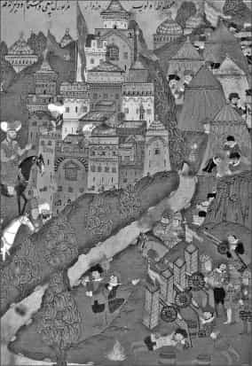
Nigbolu Kuşatması sırasında Yıldırım Bayezid’in kale kumandanı Doğan Bey ile konuşmasını gösteren minyatür.
İlk Osmanlı kaynaklarında, 130 bin kişilik Haçlı ordusunun Eflak ilinden Tuna’yı geçip Niğbolu’ya geldiğini duyan Yıldırım Bayezid’in İstanbul kuşatmasını hemen kaldırıp alelacele topladığı askerlerle birlikte Niğbolu’ya doğru hareket ettiği belirtilirse de savaşın safhaları hakkında ayrıntılı bilgi yer almaz, kronoloji olarak da savaş farklı bir yere yerleştirilir, bazılarında da Macar seferiyle karıştırılır. Savaşın tek görgü şahidi olarak yazdıkları bugüne ulaşan tanınmış bir kıraat ve hadis âlimi olup Bayezid’in yanında bulunan İbnü’l-Cezerî haberin İstanbul Kuşatması sırasında geldiğini, onları Osmanlı topraklarına girmeden önce karşılamak için Bayezid’in harekete geçtiğini yazar. Bu tarihin 1396 Temmuz’undan (Şevval 798) hemen sonra olduğu, Yıldırım Bayezid’in Temmuz sonundan Eylül başına kadar gerekli hazırlıkları tamamlamaya çalıştığı anlaşılır. Ayrıca haberin Osmanlı tarafına Haçlılar’ın Niğbolu’ya geldikleri esnada değil Buda’dan hareket ettikleri sırada ulaştığı da ortaya çıkar.
Edirne’de birkaç gün kalan Yıldırım Bayezid Tırnova’ya geçti, ordusunun geri kalan kısmını burada topladı. Haçlılar’ın durumundan haber almak için Evrenos Bey’i ileri yolladı. Evrenos Bey, Niğbolu önlerine kadar gelip bu arada Macar Kralı’nın adamlarından Belgrad bölgesi banı Johann Maroti’nin kuvvetleriyle çarpıştı. Bu bilgi Haçlı kaynaklarıyla da doğrulanır. Maroti’nin görevi de tıpkı Evrenos gibi Tırnova’ya ilerleyen Osmanlılar hakkında bilgi toplamaktı. Bu küçük çarpışma her iki taraf için de sonuçsuz kaldı. Evrenos Bey bu kuvvetleri bozguna uğrattığını bildirip alabildiği haberleri Yıldırım Bayezid’e ulaştırırken Maroti de Türklerin Niğbolu’ya yaklaştığını krala yetiştirdi. Bu arada Osmanlı kaynaklarında Evrenos’un haber almadaki başarısızlığı üzerine Yıldırım Bayezid’in bizzat gece karanlığında kale önlerine kadar gidip Niğbolu’daki kale dizdarı Doğan Bey ile konuştuğu yolundaki anekdotun doğruluğu şüpheli olmakla birlikte Yıldırım Bayezid’in cüretkâr kişiliği böyle bir ihtimalin bütünüyle göz ardı edilmemesi gerektiğini düşündürür; savaş Fetihnamesi’nde de Haçlılar’ın durumu hakkında kale dizdarı Doğan Bey’den haber alındığı yolunda bilgiler bulunur.
Yıldırım Bayezid, 22 Eylül’deki bu küçük çaplı çatışmanın ardından 24 Eylül’de Niğbolu yakınlarında ordugâhını kurdu, burası Tuna’ya 4 mil mesafedeydi. Savaş ertesi gün Haçlı kuvvetlerinin saldırısıyla başladı. Yıldırım Bayezid muhtemelen aldığı haberlerin de yardımıyla Haçlılar’ın durumunu öğrendiği için ordusunu bir saldırıya karşı savunma planı içerisinde düzenlemişti. İbnü’l-Cezerî’nin savaş arefesinde Osmanlı tarafı kuvvetlerinin azlığından, 12 bin kişilik kuvvetiyle Bayezid’in yalnızca bir oğlunun (muhtemelen Şehzade Süleyman) Niğbolu’ya gelebildiğinden söz etmesi dikkat çekicidir. Bu sebeple büyük güçlük çekildiğini belirten İbnü’l-Cezerî, Bayezid’i etkili sözlerle harekete geçirdiğini de bildirir. İlk saldırıya geçen “Güney Frenkleri”nin 200.000-400.000 kişi olduğunun söylenmesine rağmen o bunların gerçekte 30 bin kişiye ancak ulaştığını tahmin eder. Fakat savaşın safhaları hakkında daha fazla ayrıntı vermez. Osmanlı kaynakları Yıldırım Bayezid’in kuvvetlerini üçe ayırdığını belirtirken Haçlı kaynakları önde düzensiz birliklerin bulunduğunu, hemen arkalarında hücumu karşılamak üzere kazıklar dikilmiş olduğunu, bunun arkasında asıl savaşçı güçlerin ve okçuların yerleştirildiğini, en arkada Bayezid’in kendi kuvvetleriyle Sırp vasalı Lazarevic’in askerlerinin pusuya yatırıldığını yazar. Fetihname’deki bilgiler doğru kabul edilecek olursa Osmanlı ordusu sağ kolda Şehzade Emîr Süleyman Çelebi ile Veziriazam Çandarlı Ali Paşa, Rumeli Beylerbeyi Firuz Bey, Malkoç Bey, Timurtaş Bey; sol kolda Şehzade Mustafa, Anadolu Beylerbeyi Timurtaş, Karaman Beyleri Mehmed, Turhan, Beşir, Tâhir ve ortada Yıldırım Bayezid’in kendisi yer almıştı. Hücum düzeni alan Haçlılar uzun tartışmalardan sonra öncülüğü Fransızlar’a verdiler. Onları 1000 adım mesafede ikinci saf olarak Sigismund’un kuvvetleri (Macarlar, Almanlar, Rodos şövalyeleri, Bohemya ve Leh askerleri) izliyordu, bunların sağ kanadında Transilvanya Beyi Laczkovic, sol kanatta Eflak Beyi Mirçea bulunuyordu.
Osmanlı ordusuna karşı ilk hücumu ön safta saldırma hakkını elde eden Fransız güçleri gerçekleştirdi. Ağır zırhlı süvari saldırısını Osmanlı öncü birlikleri karşıladı ve geri çekilerek onları kazıklı müdafaa hattının önüne getirdi. Âdeta uçları sivriltilmiş kazıklardan bir ormana benzeyen bu hattın arkasındaki okçular ok fırlatarak duraklayan Haçlı hücumunun hızını iyice kestiler. Şövalyelerin büyük kısmı oklarla yahut kazıklara takılarak yaralanan atlarından indi, bir bölümü de kazıkları çıkarıp yol açmakla uğraştı. Buradaki mücadele sırasında başıboş kalmış atların bir kısmı ordugâha geri döndü, bunu gören ve Fransızlar’ın savaş sisteminden habersiz olan Macarlar onların yok edildiğini zannettiler ve ordugâhta bir panik başladı. Kazıklı alanda açılan yoldan saldıran Fransızlar Fetihname’ye göre Rumeli kolu üzerine yürüdü ve bunları bozdu. Fakat sol koldaki Şehzade Mustafa ile Anadolu Beylerbeyi Timurtaş, tepeye doğru çekilen Osmanlı askerlerini üzerlerinde ağır zırh olduğu halde ve atları kaçtığı için yaya olarak takip etmeye koyulan Haçlılar’ı âni bir saldırıyla çevirdiler. Bunların birçoğu hayatını kaybetti, bir kısmı da esir alındı. Ölenler arasında Amiral Jean de Vienne de vardı. Ordunun idaresini üstlenen Jean de Nevers ile yanındaki bazı asilzadeler ise teslim olmuştu.
Fetihname’ye göre tam zafer kazanılmış ve savaş bitmiş sanılırken pusuda bulunan Macar kumandanı Nicholas de Gara idaresindeki 30 binden fazla askerin Macar Kralı ile birleşip Anadolu askerine saldırdığı bilgisi yer alır. Bunlar birbirine karışmış, Anadolu sipahilerinin üstlerinde Macarlar’a benzeyen zırh ve başlarında tolgalar bulunduğundan kimin hangi tarafa ait olduğu anlaşılamamış ve bu karışıklıkta Yıldırım Bayezid’in ordugâhı tehdit altında kalmıştır. Haçlı kaynaklarında ise Sigismund’un kuvvetlerini toplayarak âni saldırısının Osmanlı merkez gücü yeniçeri ve azaplar arasında karışıklığa yol açtığı, fakat son anda Lazarevic’in emrindeki Sırp kuvvetlerinin yetişmesiyle Sigismund’un saldırısının püskürtüldüğü, kralın kaçarak Tuna’da küçük bir gemiye binip canını kurtardığı bilgisi bulunur. Osmanlı kroniklerinden sadece Tâcüt-tevârîh’te bu son saldırı sırasında bizzat çarpışmaya giren Yıldırım Bayezid’in bir topuz darbesiyle atından yere düştüğü ve hizmetkârlarından biri tarafından kaldırılıp ata bindirildiği belirtilir .
Osmanlıların kesin zaferiyle sonuçlanan savaşta kayıplar konusunda kesin bir rakam yoktur. Tahminler Osmanlı tarafının 30 bin dolayında kaybı olduğu, Haçlılar’ın ise bundan daha fazla kayba uğradığı yolundadır. Ancak bu rakamlar çok abartılıdır. Kayıpların 2-3 bin dolayında bulunması akla daha yakın gelir. Osmanlı kaynaklarında yakalanan esir sayısı 2 bin olarak verilir. Başta Jean de Nevers olmak üzere Eu Kontu Philippe d’Artois, La March Kontu Jacques de Bourbon, Enguerrand de Coucy, Henry de Bar ve Guy de la Trâmouille, Mareşal Boucicaut gibi asilzadeler esir alınmıştır. Daha sonra fidyeleri ödenerek bunların sağ kalanları vatanlarına dönebilmiştir. Macar Kralı ise yanındaki az sayıda adamıyla o sırada nehirde bulunan birkaç yük kayığından birine zorlukla binerek Tuna ağzındaki Haçlı donanmasına ulaşmış ve İstanbul’dan geçip Venedik’e gitmiştir.
Niğbolu Savaşı, klasik anlamda öğeler taşıyan ve eski Haçlı seferleri hülyalarıyla beslenmiş son Haçlı seferidir. Bu bozgun, Batılı araştırmacılar tarafından genellikle Türklerle yapılan savaşlar dolayısıyla tecrübeli olan Macarlar’ın savaş taktiğini dinlemeyen ve zaferi kendilerine mal etmek isteyen Eu Kontu ve Boucicaut’nun düşüncesiz saldırısına, müttefiklerin aralarında ortak bir savaş planının olmayışına, ordunun tam bir disiplinsizlik, ahlâk dışı hareketler ve sefahat içinde olmasına, herhangi bir kriz planının bulunmamasına, kendilerine aşırı güvenmelerine, topografyayı iyi incelememelerine bağlanır. Buna karşılık Yıldırım Bayezid arazi şartlarını kendi lehine çok iyi kullanmış, ormanlık alana askerler gizlemiş, Haçlılar’ı hareket kabiliyetlerini kısıtlayacak bir alana mahkûm etmiştir. Yıldırım Bayezid’e bütün İslâm dünyasında büyük bir şöhret sağlayan bu savaş sonucunda Osmanlıların Tuna’ya uzanan kesimdeki hâkimiyetleri sağlam hale gelmiş, Balkanlar’daki konumları güçlenmiş, Macarlar için Osmanlı tehdidi daha da büyümüş, Bizans’ın ise ümitlerini dindaşlarına değil Doğu’da beliren ve düşmanlarıyla aynı dünyaya mensup yeni bir güce bağlamasına yol açmıştır.
Kaynaklar
İbnü’l-Furât, Tarih (nşr. K. Züreyk- Necla İzzeddin), Beyrut 1938, IX/2, s. 456.
İbnü’l-Cezerî, Câmi’ü’l-esânîd, Süleymaniye Ktp. Dârülmesnevî, nr. 11, vr. 17a-18a (eserin bir bölümünün tercümesi için bk. Ali Osman Yüksel, Ibn Cezerî ve Tayyibetü’n-Neşr, İstanbul 1996, s. 163-167).
J. Schiltberger, Türkler ve Tatarlar Arasında: 1394-1427 (trc. Turgut Akpınar), İstanbul 1995, s. 29-33.
Dukas, Bizans Tarihi (trc. VI. Mirmiroğlu), İstanbul 1956, s. 30-31.
Âşıkpaşazâde, Târih (Atsız), s. 136-137.
Şükrullah Çelebi, Behcetü’t-tevârîh (trc. Nihal Atsız, Osmanlı Tarihleri I içinde), İstanbul 1949, s. 57.
Oruç b. Âdil. Tevârîh-i Âl-i Osman, nşr. Babinger, Hannover 1925, s. 28, 98-99.
Bihiştî Ahmed Sinan Çelebi, Tevârih-i Âl-i Osman, British Museum, Add. Or. ms. 7869, vr. 15b-18b.
Neşri, Kitab-ı Cihannümâ (Taeschner), 1, 88-89.
İbn Kemal, Tevârîh-i Âl-i Osman, IV. Defter (haz. K. Imazawa), Ankara 2000, s. 237-263.
Enverî, Düstûrnâme (haz. Necdet Öztürk), İstanbul 2003, s. 36-37.
16. Asırda Yazılmış Grekçe Anonim Osmanlı Tarihi: 1373-1512 (haz. Şerif Baştav), Ankara 1973, s. 98-100.
Ruhî Târihi (TTK Belgeler, X1V/18, Ankara1992) içinde, tıpkıbasımı ile birlikte nşr. Yaşar Yücel - Halil Erdoğan Cengiz, s. 393.
Feridun Bey, Münşeat, I, (Fetihnâme), s. 122-124.
Hoca Sâdeddin, Tâcü’t-tevârîh, İstanbul 1279, I, 143-145.
Zinkeisen, GOR, I, 290-309.
A. Brauner, Die Schlacht bei Nicopolis (1396), Breslau 1876.
G. Köhler, Die Schlachten von Nicopoli und Warna, Breslau 1882.
C. Oman, A History of the Art of War in the Middle Ages, London 1924, 1, 349-352.
Runciman, Haçlı Seferleri Tarihi, trc. F. Işıltan, III (Ankara 1987), 385-390.
A.S.Atiya, The Crusade in the Later Middle Ages, London 1938, s. 435-462.
a.mlf., Niğbolu Haçlılar Seferi (trc. Esat Uras), Ankara 1956.
a.mlf., “Nikbuli”, El2 (İng.), VIII, 35-36.
A. Lutrell, “The Crusade in the Fourteenth Century”, Europa in the Late Middle Ages, London 1965, s. 122-154.
K. Setton, The Papacy and the Levant (1204- 1571), Philadelphia 1976, 1, 341-369.
Nicopolis 1396: The Last Crusade (haz. D. Nicolle - C. Hook), Oxford 1999.
D. M. Nicol, Bizans’ın Son Yüzyılları: 1261-1453 (trc. Bilge Umar), İstanbul 1999, s. 325-327. Fahamettin Başar, “Niğbolu Meydan Muharebesi ve Haçlı Seferleri Tarihindeki Yeri”, Haçlı Seferleri ve XI. Asırdan Günümüze Haçlı Ruhu Semineri, Bildiriler, İstanbul 1998, s. 117-132.
H. L. Savage, “Enguerrand de Coucy VII and the Campaigne of Nicopolis”, Speculum, XIV, Cambridge 1939, s. 423-442.
C. L. Tipton, “The English at Nicopolis (1396)”, a.e., XXXVII (1962), s. 528-540.
Şehabeddin Tekindağ, “Türk Ordusunun Bir Taktik Savaşı: Niğbolu 25 Eylül 1396”, Türk Kültürü, 111/35 (1965), s. 814-819.
a.mlf., “Niğbolu”, IA, IX, 248-250.
Hicran Akın, “Niğbolu Haçlı Seferi ile İlgili Bazı Problemler”, TK, XXV/2 (1987), s. 209-216.
Cüneyt Kanat “Makrizî’nin Kitâbü’s- sülûk’unda Osmanlılar ile İlgili Kayıtlar”, Türk Dünyası İncelemeleri Dergisi, sy. 4, İzmir 2000, s. 228-229.
II. KOSOVA SAVAŞI 1448
Osmanlıların Balkanlara doğru yayılması, bu sırada güçlü bir devlet olarak Orta Avrupa ile Balkanlar arasında bir kalkan görevi görmekte olan Macar Krallığı’nı yakından ilgilendirmekteydi. Osmanlı ve Macar orduları arasında ilk ciddi hesaplaşma 1444’te Varna’daki meydan savaşında gerçekleşmiş ve Macarlar bu mücadelede yenilgiye uğramışlardı. Fakat buradaki yenilgi Macarların Balkan siyasetini sona erdirmedi, aksine Mohaç’a kadar sürecek olan bir süreci başlatmış oldu. Macarların efsanevi kumandanı ve kral naibi Janos Hunyadi (Osmanlı kaynaklarında Yanko), Varna’daki yenilginin rövanşı için hazırlıklara başlamış, 1447 yılı başlarından itibaren de kendisine yakın olan Tuna boyundaki prensliklerle ittifak oluşturmaya çalışmıştı. Daha önceki savaşta olduğu gibi Türkleri Balkanlar’dan atmak gayesiyle yeni girişeceği mücadeleye bir Haçlı seferi görüntüsü vermek için Papalığa, Venedik’e, Aragon ve Napoli krallıklarına başvurmuşsa da bunlardan olumlu bir cevap alamamıştı. Bu sırada iç problemlerini halledip Varna savaşında elde ettiği başarının rüzgârıyla muhalif kesimi sindiren II. Murad, Arnavutluk’ta İskender Bey’in isyanı ile ilgilenmekteydi. Osmanlı ordusu 1448 Temmuz’unda Arnavutluk’ta bulunuyordu ve Kocacık Hisarı’nın zaptı ile meşguldü. Hunyadi’nin İskender Bey ile de temas kurduğu ve onunla birleşmek üzere harekete geçtiği de belirtilir.
Topladığı 30-35 bin kişilik kuvvetle Balkanlara inen Hunyadi’nin ordusunun esasını Macarlar oluşturuyordu. Ayrıca 8 bin askerden ibaret bir Eflak gücü de kendisine katılmıştı. Yine Alman ve Çeklerden oluşan paralı askerler de vardı. 1000’i aşkın yük ve savaş arabası birlikleri takip ediyordu. Savaş arabalarında ateşli silahlar bulunuyordu ve her birine ikişer asker bindirilmişti. Çeklerin bu silahlı araba sistemi (Wagenburg: Araba kale) artık Osmanlıların da daha önceki tecrübelerinden çok iyi tanıdıkları bir yeni savaş şeklini devreye sokuyordu. Hunyadi Sırp despotu Djuradj Brankovic ile de temas kurmak istedi, ancak Sırp despotu buna yanaşmadığı gibi onun topraklarından geçmesine izin vermeyeceğini de bildirdi. Bunda ikisi arasında önceye dayanan bir gerginliğin rolü olduğu kadar Osmanlı baskısı da etkili olmuştu. Buna rağmen Hunyadi Eylül ayı sonlarında Sırp topraklarına girdi ve Morova vadisine yöneldi. Sırbistan’da ilerlerken aynı zamanda geçtiği yerlerde tahribatta da bulunuyordu. Muhtemelen İskender Bey’den de yardım alacağını düşünerek Kosova tarafına ilerledi, buraya geldiğinde 17 Ekim günü Priştine yönünde ilerleyen II. Murad’ın ordusunu gördü.
Arnavutluk seferinde iken onun hareketini öğrenen II. Murad, kuvvetlerini Sofya’da toplayarak Macar kuvvetlerini karşılamak üzere Kosova’ya doğru ilerlemişti. Kaynaklarda Osmanlı ordusunun mevcudu hakkında abartılı rakamlar vardır. Macar kuvvetlerine göre nisbi bir fazlalığı olan Osmanlı ordusunun asker sayısı en iyimser tahminle 50 bin dolayında olarak gösterilebilir. Hunyadi’nin ordusu çok iyi donanmış ve son derece düzenli birliklerden oluşuyordu. En büyük gücü Varna’da olduğu gibi ağır zırhlı süvariler teşkil ediyordu, hafif süvari sayısı da fazlaydı. Her birinde ikişer neferin bulunduğu üzerinde bir topun yer aldığı ve sayıları kaynaklara göre 800–2000 arasında değişen savaş arabaları ordunun en önemli vurucu gücüydü. Osmanlılar ise öncekinden farklı olarak sağ kanatta Anadolu askerleri beylerbeyi Uzguroğlu İsa Bey başlarında bulunduğu halde sıralanmıştı, sol kanatta Rumeli birliklerinin başında beylerbeyi Dayı Karaca Bey vardı. Ortada azap ve Yeniçeriler koruması altında padişahın bulunduğu merkezi güçler yerleşmişti. Yine merkezde süvari hücumlarına karşı kalkanlı ve mızraklı askerlerden oluşmuş bir müdafaa hattı, hendek çevresine kurulmuş ve bunun etrafına develer konulmuş, top arabaları dizilmişti. Bu düzende ciddi bir yeni katkı, hiç şüphesiz top arabalarıydı ve tıpkı Macarlar gibi Osmanlılar da bu tip arabalar edinmişlerdi. Bilhassa merkezin top arabalarıyla takviyesi ve bunun ardına yerleştirilen ateşli silahlarla mücehhez birlikler, Osmanlı savaş sisteminde önemli bir değişimin habercisi olacaktı. İlk defa burada uygulanan bu sistemi, Osmanlılar oldukça başarılı bir şekilde kendi ana yapılarına adapte etmiş bulunuyorlardı. II. Murad Varna’daki gibi büyük bir tehlikeye düşmemek için bu defa son derece dikkatli davranmış ve askerin yerleşme nizamını bizzat kendisi denetlemişti. Ayrıca burası Varna gibi engebesi bol bir alan olmadığından geliştirilecek süvari ağırlıklı hücum taktikleri için müsait bir topografya bahşediyordu. Stratejik üstünlük tam anlamıyla Osmanlıların elindeydi ve savaşı istedikleri gibi kontrol edebilecek bir vasatı yakalamışlardı.
Hunyadi ise Erdel’den gelen birliklerle ve Macar atlılarının bir kısmıyla orta bölümdeydi. Sağ kanatta Hunyadi’nin akrabaları ve diğer büyük beylerle (magnatlar) Macarlar; sol kolda Eflak birlikleri vardı. Ayrıca ilk safları ağır silahlı askerlerden oluşan ve tek hat şeklinde dizilen 38 bölüğe ayrılmıştı.
Savaş 17 Ekim’de ön saftaki hafif süvari birliklerinin küçük çaplı çarpışmalarıyla başladı. Ardından bir ok atımı mesafedeki iki ordu birbirine saldırdı. İlk gün Macarlar yoğun top atışları yaptı, arabaları çatarak arkasından Osmanlı birliklerini ateşe tuttu. İlginç bir şekilde Osmanlılar da onlara benzeri şekilde karşılık verdiler. Öyle anlaşılıyor ki ilk defa olarak iki taraf birbirine karşı top atışı yaparak savaşa girmişti. Her iki taraf karşılıklı ateşler ve sınırlı süvari hücumlarıyla birbirini denedi ve taktiklerini icraya çalıştı. Osmanlılar Anadolu askerinin yer aldığı kolu savaşa sokmadılar ve dinlendirdiler.
Asıl büyük çarpışma ertesi günü sabahleyin başladı, karşılıklı saf tutulunca, Osmanlıların Rumeli kolu yavaşça Macarların üzerine doğru hareket etti. Bir ok atımı mesafede yaklaşınca her iki taraf da davul ve borazan sesleriyle savaşa girişti. Macarlar arabaların arkasından çıkıp Anadolu ve Rumeli askerini karmakarış ettiler, yeniçerilerin tuttuğu orta hatta kadar geldiler ve burada durduruldular. Macarlar hattı yardılarsa da bu yeniçerilerin taktiği icabı idi, zira araya alınan Macar ağır süvarisinin etrafını çevirmişler ve arkadan destek almalarını önleyip onları imha etmişlerdi. Dinlenmiş Osmanlı kuvvetleri de Macar ordusunun sol kolunu çembere almış, bunları bozguna uğratmıştı, durumun kötüye gittiğini gören Eflak kuvvetleri savaş meydanını terk etmişti. Kaçamayanlar ise arabalardan oluşan taburun arkasına gizlendi, atsız kalanlar yaya olarak oradaki büyük bir köye kapağı atmışlardı. Akşamleyin Osmanlılar köyleri ateşe verdi, ortalık gündüz gibi aydınlandı, araba ardına saklananlar da kuşatıldı. Bu kesimde mücadele geceleyin de devam etti. Hunyadi önce buraya gelmiş, direnişi düzenlemiş ama sonra gizlice burayı terk etmişti. Osmanlılar kuşattıkları bu araba yığınlarını da ele geçirip yağmalamışlardı.
Üçüncü günü Macar ordusundan artık eser kalmamıştı. Savaşa bizzat katılmış olan Osmanlı tarihçisi Âşıkpaşazade, fazla ayrıntı vermemekle birlikte iki günlük muharebede Macar ordusunun önemli kumandanlarının savaş meydanında kaldığını, çoğunun esir alındığını ve Hunyadi’nin kaçtığını belirtir. Macar tarihlerine göre ölenler arasında Erdel Beyi İmre Pelsoczi ile kardeşleri, Voyvoda Marczali’nin oğlu İmre, Hırvat Banı Franko Talloczi ve diğer bazı namlı kumandanlar vardı. Neşri ise savaşın oluş şeklinden çok ikinci gün yapılan mücadeleyi ayrıntılı olarak aktarır. Bu arada Macarlara yardım için gelen İskender Bey ancak savaşın sonunda yetişebilmiş ve mağlubiyet haberi üzerine geri çekilmişti. Hunyadi ise savaş arabalarının koruması altında savaş meydanından uzaklaşmış, daha sonra kuzeydeki topraklarına dönerken Sırp despotu Brankovic tarafından esir alınmış, fakat serbest bırakılmıştır.
II. Kosova Savaşı Macarlar’ın Balkanlardaki etkisinin bir bakıma sonunu oluşturdu. Buna karşılık Osmanlı hâkimiyetinin sarsılmazlığını pekiştirdi. Eflak üzerindeki Macar nüfuzu sarsıldı ve bu kesimde Osmanlılar öne çıkmaya başladı. Kosava Savaşı ayrıca Osmanlı savaş tarihinde ateşli silahların etkili şekilde kullanıldığı ilk meydan savaşı olma vasfına da haizdir.
Kaynaklar
Chalkokonyles, Histoire de la decandence d l’empire Grec, et estamblissement de celuy des Turcs, Rauen 1669, s. 141-146.
Aşıkpaşazade, Tarih (Atsız), s. 186-188.
Neşri, Kitab-ı Cihannüma (Unat-Köymen), II, 659-675.
Oruç Bey, Tarih, nşr. Fr. Babinger, Hanover 1925, s. 121-123.
Lajos Elekes, Hunyadi, Budapest 1952, s. 368-381.
H. İnalcık, Fatih Devri Üzerine Tetkikler ve Vesikalar, Ankara 1954, s. 109
D. Malcolm, Kosova, Balkanları Anlamak İçin, trc. Ö. Arıkan, İstanbul 1999, s. 119-122.
Gabor Agaston, “XV ve XVI. Asırlarda Büyük Meydan Muharebelerinde Uygulanan Strateji ve Taktikler, Müzakere”, XV ve XVI. Asrı Türk Asrı Yapan Değerler, İstanbul 1999,s. 93-94.
Hicran Akın, “XV. Yüzyıl Latince Macar Kroniği Chronica Hungarorum’un Türk Tarihi Bakımından Değeri”, Belleten, LI/200 (1987), s. 697-702
N. Iorga, “Du nouveau sur le campagne turque de Jean Hunyadi en 1448”, Revue Historique du Sud-Est Europeenes, III (1926), s. 13-27.
Necati Selim, II. Kosova 1448, İstanbul 1932.
N. Genç, II. Kosova Savaşı, Eskişehir 1993.
MERCİDABIK SAVAŞI 1516
Osmanlılar ile Memlükler arasında 1516 (922) yılında yapılan bu savaş Suriye ve Mısır’ın Osmanlıların eline geçmesiyle sonuçlanacak bir dizi çarpışmanın ilki ve en önemlisidir. Bu meydan savaşı Hz. Davud’un makamının bulunduğuna inanılan Dâbık sahrasında cereyan etmiştir. Burası Haleb’in yaklaşık 38 km. kadar kuzeyinde, Antakya’dan Menbiç’e giden yol üzerinde, Kuveyk ırmağı kenarındaki Dâbık adlı yerleşme biriminin yakınında yer alır. Bulunduğu mevki bugünkü Kilis’e yakındır. Merc arapça otlak, çayırlık, düz yer anlamına gelmekte olup Dâbık sahrası veya çayırlığı karşılığı olmak üzere buraya Mercidâbık denmiştir.
Çaldıran Savaşı ile doğudaki en önemli rakibini sindiren Osmanlı padişahı I. Selim’in Doğu ve Güneydoğu Anadolu’ya hakim olmak için giriştiği faaliyetler, aynı bölgede önemli bazı şehirleri elinde bulunduran Memlük Sultanı Kansu (Kanısav) Gavri’yi endişelendirmeye başlamıştı. İki devlet arasında II. Bayezid döneminde Çukurova Bölgesi’nde başgösteren çatışmaların yol açtığı gerginliğin, Dulkadiroğulları meselesinin ve Hicaz bölgesine yönelik Osmanlı siyasetinin er geç yeni bir çekişmenin kaynağı olacağı her iki tarafca da bekleniyordu. Osmanlılar görünüşte Safevi etkisini yok etmek için Doğu Anadolu’da hızlı bir harekât sürdürürken bir yandan da gelişmeleri yakından izleyen Memlüklerin tepkilerini ölçmeye ve anlamaya çalışıyorlardı. Memlükler ise Şah İsmail’e karşı Osmanlıların kazandığı başarının ardından bölgede oluşan boşluğu doldurmaya ve yeni duruma uyum sağlamaya çabalıyor, sınır boylarındaki askeri harekâtı dikkatle takip ediyorlardı. I. Selim Anadolu’ya tam hakim olmanın yolunu Memlük etkisini ortadan kaldırmakta görüyordu. Daha da ileri giderek Suriye ve Mısır’ın ele geçirilmesinin kendisini İslam dünyasında tek bir lider haline getireceğini, bunun da tarihi ticaret yolları üzerinde tam bir denetim kurma yolunu açacağını, mukaddes yerler üzerinde nüfuz tesis ederek islam dünyasının güçlü bir koruyucusu sıfatını kazanacağını hesaplıyordu. Öte yandan mukaddes yerlere karşı oldukça ciddi boyutlara ulaşan Portekiz tehdidi karşısında zorlanan Memlüklerin yerini almakla, bu Hıristiyan tehdidine daha kuvvetli bir karşılıkta bulunarak Haremeyn’i koruma ve kollama misyonunu üstlenmeyi de planlamıştı.
Memlük Sultanı Kansu/Kanısav Gavri, I. Selim’in siyasi teşebbüslerinin farkına varmış, sınırlarında cereyan eden mücadeleye sessiz kalmayarak bir taraftan Şah İsmail ile irtibat kurduğu gibi diğer taraftan bizzat kendi kuvvetleriyle Şam bölgesine hareket etme hazırlıklarına başlamıştı. Üstelik I. Selim’in ilan ettiği ticari ambargo sadece İran/Safevi tüccarı değil kendi tüccarını da etkilemiş, bu yolda birçok şikâyet kendisine ulaştırılmıştı. Dulkadıroğlu Alaüddevle’nin katli meselesi de canını sıkmış, Suriye sınırlarındaki hareketlenmeler karşısında ordusunu toplayarak durumu yerinde görmek ve gerekirse müdahele etmek kararı almıştı. Bu aynı zamanda diplomatik bir trafiği de beraberinde getirdi. Tabii olarak Safevilerle bağ kurup gerçek niyetlerini anlamaya çalıştı. Şah İsmail’in elçisini kabulü ve onlarla irtibat kurması, I. Selim’e planları arasında yer alan böyle bir sefer için önemli bir fırsat ve bahane sağlayacaktı. Dönemin Osmanlı kaynakları Osmanlı padişahının başlangıçta doğrudan Memlükler üzerine yürüme niyetini açığa vurmadığını, o sırada Safevilerin Doğu ve Güneydoğu Anadolu’daki karşı faaliyetleri ve bu arada Şah İsmail’in bölgeye yolladığı kuvvetlerin başında bulunan Karahan’ın Diyarbakır’ı geri alma teşebbüsleri karşısında buraya yönelik bir sefer açma kararı verdiğini belirtirler. Yani seferin gayesi doğrudan doğruya Safeviler’in Doğu Anadolu üzerindeki etkilerini tamamıyla silmekti. Muhtemelen I. Selim Memlükler ile olan çekişmenin bir savaşa yol açacağını biliyordu, ama şimdiki faaliyetinin ana hedefi onlar değil Safeviler idi. Memlüklerle olan hesaplaşmayı, Doğu ve Güneydoğu kesimine indiğinde onların tavrına göre yapmayı düşünmüş olmalıdır. Sünni bir devlete karşı gerekçesiz olarak harp açmanın getireceği tepkileri de hesaba katan I. Selim, muhtemelen bu niyetini giriştiği diplomatik faaliyetler sonrasında sınır boylarında Memlük ordusuyla karşılaştığı ve savaşın kaçınılmaz bir hale geldiği bir sırada açık olarak ilan edebilmiştir.
Karahan’ın Diyarbakır havalisine yollandığını öğrenen I. Selim veziriazamlığa getirdiği Sinan Paşa’yı önden bölgeye gönderdi (28 Nisan 1516/25 Rebiülevvel 922). Sinan Paşa yol boyunca gerekli hazırlıkları yaparak ilerlerken kendisi de 5 Haziran’da (4 Cemaziyelevvel) İstanbul’dan hareket etti. Memlük Sultanı ise Sinan Paşa’nın hareketini öğrenince derhal 20 bin kişilik bir kuvvetle yanında Abbasi halifesi Mütevekkil, dört mezhep kadıları ve Osmanlı şehzadesi Kasım olduğu halde Haleb’e gitmek üzere yola çıktı (18 Mayıs/16 Rebiülahır). Memlük kaynakları onun Dulkadırlı meselesine çözüm bulmak bahanesiyle yola çıktığını, bir taraftan Osmanlı-Safevi savaşının galibinin mutlaka Mısır üzerine yöneleceği beklentisi içinde olduğunu; I. Selim’in ise, Mısır seferi için Dulkadırlı Şehsuvaroğlu Ali Bey, kendisiyle bağlantısı olan Haleb Valisi Hayır Bey tarafından teşvik edildiğini belirtirler. Ibn Iyas ise Gavri’nin kölelerinden Hoşkadem’in efendisiyle olan anlaşmazlığı sebebiyle kaçıp Osmanlı ülkesine sığındığını ve Mısır’daki durumu I. Selim’e anlatarak onu sefer için harekete geçirdiğini yazar. Yine İbn Iyas, onun muhtemelen bir Osmanlı saldırısı karşısında Şah İsmail ile gizlice ittifak kurduğuna da temas eder. Onun bu hareketiyle önemli bir taktik hatası yaptığı üzerinde durulursa da, aslında mukadder olan Osmanlı tehdidini önden karşılamak ve arkadaki güçlere zaman kazandırmak amacıyla acele olarak Haleb’e gitmeyi gerekli gördüğü, Şah İsmail ile irtibat kurarak Osmanlılar için caydırıcı bir güç gösterisinde bulunmak istediği söylenebilir. Ancak Safeviler ile müşterek bir harekât planladığına dair herhangi bir ip ucu yoktur. Şah İsmail’in mücadeleyi uzaktan izlemesi, Mısır seferi boyunca da herhangi bir harekete teşebbüs etmemiş olması, Osmanlılar tarafından oldukça abartılan Memlük-Safevi ittifakının hiç de sağlam temellere oturmadığını göstermesi bakımından dikkat çekicidir. I. Selim’in sünni bir devlet olarak Memlükleri, Safeviler ile işbirliği yapmak suretiyle dinden çıkmış, sapkın bir konuma düştükleri teziyle suçlaması, hatta bu yolda savaşın meşru görüldüğüne dair fetva alması, psikolojik bakımdan etkili olmuş gözükmektedir. Belki de bu töhmet, Gavri’yi ciddi bir şekilde Safeviler ile birlikte hareket etme konusunda tereddüde düşürmüştür.
I. Selim İstanbul’dan çıkmadan önce aslında Safeviler’e yönelik niyetlerini ve hareket planını bildirmek üzere Rumeli Kazaskeri Molla Zeyrekzade Rükneddin ile Karaca Paşa’yı Memlük sultanına gönderdi. Kendisi Kayseri üzerinden Elbistan’a gitti ve burada Sinan Paşa ile buluştu. Bundan önce Akşehir’de iken 26 Haziran’da (25 Cemaziyelevvel) Safevilerin Koçhisar’da yenilgiye uğratıldığı haberi, Karahan’ın kesikbaşı ile kendisine ulaşmış, I. Selim de bunu bir mektupla birlikte Gavri’ye göndermişti. Ayrıca bu sırada Gavri’nin Haleb’e vardığı haberi de geldi (25 Temmuz). Gerçekten de Gavri, 10 Temmuz’da (10 Cemaziyelahır) Haleb’e girmiş ve Selim’in hareketlerini izlemeye çalışmış, bu arada Osmanlı elçileriyle görüşmüş ve Moğolbay’ı Osmanlı padişahına yollayarak diplomatik bir karşılık vermişti. Osmanlı elçileri 9 Ağustos’ta (10 Receb) Tucan dere konağında Osmanlı ordugâhına döndüklerinde, beş gün önce alınan Mısır Seferi kararını öğrenmişlerdi. Sonra da Gavri’nin durumu hakkında padişaha bilgi vermişlerdi. I. Selim, Şah İsmail üzerine yapacağı sefer için Memlük sultanının kendisine topraklarından geçiş izni vermediğini iddia ediyordu. Bu durumda Memlük sultanı Safeviler’in hamisi olmakla (hâmi-i küfr) suçlanıyordu. Ulemadan alınan fetvalarda bu tez esaslı şekilde formüle edildi. Tohma Çayı kenarında alınan savaş kararının ardından Osmanlı ordusuna yeni katılımlar oldu. Ordu Antep’e doğru yöneldiğinde 18 Ağustos’ta (19 Recep) Antep hakimi Yunus Bey kalenin anahtarlarını padişaha teslim etti. İki gün sonra Antep’te yapılan divanda savaş görüşüldü ve harekât planları hazırlandı, ertesi gün de taktik hazırlıklara ağırlık verildi. 23 Ağustos’ta (24 Recep) Tell Habeş konağına ulaşan orduya ertesi gün çarpışmaların başlayacağı duyuruldu. Bu arada Gavri Malatya emirinin gönderdiği bir haberciden Osmanlıların Şah İsmail üzerine değil de Haleb’e yöneldiğini duyunca büyük bir kızgınlıkla ordusunu toplayıp Haleb’ten hareket ederek Mercidabık sahrasında konaklamıştı.
24 Ağustos 1516 (25 Recep 922) Pazar sabahı iki ordu karşı karşıya geldi. Osmanlı ordusu ile Memlük ordusu asker sayısı bakımından hemen hemen birbirine eşitti. Bazı kaynaklarda ordu mevcudunun 120 bin dolayında olduğu belirtilirse de bunun 60 bine ancak ulaştığı tahmin edilmektedir. Memlük ordusu da yine 50 bin dolayında idi. Osmanlı ordusunun merkezinde padişah ile Veziriazam Sinan Paşa ve kapıkulu askerleri yer almıştı. Tüfekle donatılmış olan kapıkulunun önüne yüz elli kadar top arabası zincirlerle birbirine bağlanarak hat oluşturulmuş ve toplar dizilmişti. Sağ kolda Anadolu beylerbeyi Zeynel Paşa, Karaman beylerbeyi Hüsrev Paşa, Dulkadırlı Şehsüvaroğlu Ali Bey ve Ramazanoğlu Mahmud Bey; sol kolda ise Rumeli beylerbeyi Küçük Sinan Paşa, Amasya (Rum) beylerbeyi Mehmed Paşa, Diyarbekir beylerbeyi Bıyıklı Mehmed Paşa ve Mengli Giray oğlu Saadet Giray’ın kuvvetleri bulunuyordu. Sağdaki ve soldaki bu birlikler birbiri ardında değil yan yana safta yer almışlardı ve yarım ay şeklinde duruyorlardı. Padişahın bulunduğu merkezin önünde tüfekçi yeniçeriler ile onların safında sol yanda toplar konulmuştu. Ordunun ağırlık kısımı da getirilmiş ve bunlardan bir set oluşturulmuştu. Bu arada Şükri-i Bitlisi, savaşın hemen başında vezirlerden Sinan Paşa ile Yunus Paşa’nın birbirleriyle padişahın huzurunda hangi kolda yer alacakları hususunda sert bir şekilde tartıştıklarını ve sonra sağ kola Sinan Paşa’nın sola ise Yunus Paşa’nın yollandığını belirtir. Memlük ordusunda ise Osmanlı cephesine karşı olmak üzere sağ tarafta Şam melikülümerası Sibay, sol kolda ise Halep melikülümerası Hayır Bey’in kuvvetleri yer almıştı. Ön saflarda büyük emir Sudun el-Acemi, Emiri silah Ürkmez ile diğer namlı emirler sıralanmıştı. Memlükler’de de ateşli silahlar vardı, fakat bunları savaş sırasında etkili şekilde kullanmadılar. Sert suvari hücumlarıyla Osmanlı ordusunu kolayca dağıtabileceklerini düşünüyorlardı. Memlükler son derece usta süvariler olarak (cündi) savaş oyunlarını gayet iyi bildiklerine inanıyorlardı. Bu tür savaşlarla da önemli başarılar kazanmışlardı. Fakat karşılarında kendileri gibi değil farklı savaş usulleriyle muharebe eden Osmanlıların taktikleri konusunda fikirleri hiç yoktu. Üstelik ateşli silahlardan nefret eden Memlük atlı askeri grupları cengaverliğin kılıçla belirlenebileceğini haykırarak meydan okuyorlardı.
İlk hücum Memlük kuvvetlerince gerçekleştirildi. Öncü birliklerin kısa çarpışmalarının başlamasıyla birlikte, Osmanlı tarafından yoğun top ve tüfek atışları yapıldı. Toplardan çıkan yoğun duman görüş mesafesini iyice etkilemişti. Memlüklerin sağ kanadındaki süvariler, Hums naibi Aslan b. Budak komutasında, Osmanlı sağ kolunun en ucunda duran Dulkadırlı Şehsuvaroğlu ile Diyarbekir beylerbeyi Mehmed Paşa kuvvetleri üzerine saldırdı. Onu diğer Memlük emirleri izledi. Önce Şam naibi Sibay, ardından Sudun el-Acemi son derece mükemmel donanımlı 1000 süvariyle hücuma kalktı. Böylelikle çarpışmalar Osmanlı sağ kolunda yoğunlaştı. Osmanlı sol kolu ise daha cılız bir Memlük saldırısıyla karşı karşıya kalmıştı. Bu ilk ani saldırılar Osmanlı kollarını biraz sarstı. İki vezir Sinan ve Yunus Paşalar yanlarındaki tüfekçi yeniçeriler ile bu kolları takviye ettiler. Tam bu sırada merkezdeki yeniçeriler yerlerinden kalkarak tüfek ve top ateşiyle Memlük ana ordugâhına doğru yürüyüşe geçtiler. Bu durum Osmanlı kollarında da toparlanmaya yol açtı ve merkezleri top ve tüfek atışlarıyla çözülen Memlük birlikleri şaşırdı, tekrar sağ ve sol kola hamle yaptılarsa da artık güçleri iyice erimişti. Gavri merkezde kendine ait hassa birliklerini ezdirmemek için bunları savaşa henüz sokmamıştı. Fakat ani bozgunluk hali, bunları savaşa sokmakta geciktiğini anlamasına yol açtı ve derhal geri çekilmeye başladı. Memlük ordusunun merkezi ve sol kola saldırmış olan Hayır Bey birlikleri tamamen çökmüştü. Yalnız sağda Sibay ısrarla savaşı sürdürüyordu. Fakat kahramanca mücadele sonucu yanındaki diğer namlı Memlük beyleriyle birlikte burada hayatını kaybetti. İkindiye kadar süren çarpışmaların ardından Osmanlılar galip geldiler. Memlük ordusu geri çekilip dağıldı. Aralarında belli başlı büyük emirlerin de bulunduğu birçok Memlük kumandanı esir ya da maktul düştü. Bazı araştırmalarda Hayır Bey ve Canberdi Gazali’nin hıyanet edip sultanın öldüğünü orduda ilan etmeleriyle Memlük kuvvetlerinin dağıldığının belirtilmesi doğru değildir. Aslında dönemin kaynaklarına göre, Dulkadırlı Abdürrezzak Bey ile Halep emiri Hayır Bey kaçarlarken Yunus Paşa tarafından yakalanmışlar ve padişahın huzuruna getirilmişlerdi. Bunlar ordugâhta Canberdi Gazali’yi görmüşlerdi. Padişah daha sonra Canberdi ile Hayır Bey’i geri göndererek dağılan Memlük kuvvetlerinin durumunu öğrenmek istemişti. Yani bu gelişmeler savaşın bitiminden sonra olmuştu. Öte yandan bazı Memlük kaynaklarında Gavri’nin “celban” ve “karanisa” denilen Memlük askeri gruplarından kendilerine güvenmediği karanisayı öne sürdüğü, yanında tuttuğu celbanın ise ilk hücumu yapma şerefinin kendilerine verilmemesinden dolayı alınarak yeterli ölçüde savaşmadıkları belirtilir.
Savaş sonunda içlerinde esir düştükten sonra itaat etmeyen bazı emirlerin de bulunduğu 2 bin kadar Memlük askeri idam edildi. Gavri’nin durumu araştırıldı ve onun kaçarken aniden rahatsızlanıp atından düşerek ölmüş olduğu öğrenildi. Ardından Padişah Halep’e girdi. Burada bulunan Abbasi halifesini kabul ederek ona iyi muamelede bulundu. Burada padişah adına hutbe okundu. Ardından Hama, Hums, Şam gibi şehirler teslim oldu ve buralara hemen birer sancakbeyi atandı. Bu arada savaşın sonucunu bekleyen Şah İsmail ise zaferin Osmanlı tarafınca kazanılması üzerine derhal geri çekildi.
Mercidabık Savaşı, Osmanlılara Suriye, Lübnan ve Filistin’in hâkimiyetini sağlayarak Mısır yolunu açmış, Doğu ve Güneydoğu Anadolu’daki şehirlerde Osmanlı hâkimiyetini sağlamlaştırmış, dolaylı olarak Safevilerin beklentilerini boşa çıkarmış, Memlük Sultanlığının tarih sahnesinden silinişinin ilk önemli adımını oluşturmuştur.
Kaynaklar
İbn Iyas, Bedâi’u’z-zuhûr, V, 35-65.
İbn Tolun, İ’lâmü’l-verâ, nşr. M. Ahmed Dehman, Dımaşk 1984, s. 229-230.
“Mısır Seferi Ruznamesi”, Feridun Bey, Münşeatü’s-selâtin içinde, I, 450-451.
“Haydar Çelebi Ruznamesi” a.e içinde, s. 478-480.
Şükri-i Bitlisi, Selimname, (nşr. M.Argunşah), Kayseri 1997, s. 242-259.
Celalzade, Selimname, (nşr. A.Uğur-M.Çuhadar), Ankara 1990, s. 173-189.
Keşfi Mehmed, Selimnâme, haz. A. Sağırlı, Yüksek Lisans Tezi, İstanbul 1993, s. 75-90.
Hadidi, Tevârih-i Âl-i Osman, nşr. N. Öztürk, İstanbul 1991, s. 398-408.
Lutfi Paşa, Tarih, nşr. K. Atik, Ankara 2001, s. 222-230.
İbn Zünbül, Vâkı’âtü’s-Sultan el-Gavri ma’a Selim el-Osmani, nşr. A. Âmir, Kahire 1962, s. 13-47.
Hasan-ı Rumlu, Ahsenü’t-Tevârih, trc. C.N. Seddon, Baroda 1931, I, 159-161.
Çerkezler Katibi Yusuf, Tarih-i Mısr, Süleymaniye-Esad Efendi Ktp. nr. 2146, vr. 25b-35b.
Hoca Sadeddin, Tâcü’t-Tevârih, İstanbul 1280, II, 324-336.
“Silahşor’un Fetihname-i Diyar-ı Arap Adlı Eseri”, nşr. S. Tansel, TV, I/2 (1958), 295-311.
S Tansel, Yavuz Sultan Selim, Ankara 1969, s. 118-146.
Hammer, (Ata Bey), IV, 193-195.
Halil Edhem, “Mısır Fethi Mukaddematına Aid Mühim Bir Vesika”, TTEM, XVII/19 (96), İstanbul 1928, s. 30-36.
Harp Abdülhamid Zenati, Selim I’in Suriye ve Mısır Seferi Hakkında İbn Iyas’ta Mevcut Haberlerin Selimnamelerle Mukayesesi: XVI, Asır Osmanlı-Memlüklu Kaynakları Hakkında Bir Tetkik, (Doktora Tezi, İstanbul 1980), İ.Ü. Ktp, nr. 14517, s. 105-120.
C. Baysun, “Mercidâbık Muharebesi”, İA, VII, 752-754.
1 Genel olarak bk. F. M. Emecen, İlk Osmanlılar ve Batı Anadolu Beylikler Dünyası, İstanbul 2003, s. 1-35.
2 Bölük örgütlenmesi ve bunun Osmanlı belgelerine yansıyan örnekleri için bk. F. M. Emecen, Doğu Karadeniz’de İki Kıyı Kasabasının Tarihi: Bulancak-Piraziz, İstanbul 2005, s. 69-72, 122-123.
3 Ahmedî, Dâstân ve Tevârih-i Mülûk-ı Âl-i Osman, (Osmanlı Tarihleri içinde, haz. N.Atsız), İstanbul 1949, s. 10; krş. K. Sılay neşri: “Ahmedi’s History of the Ottoman Dynasty”, Journal of Turkish Studies, XVI (1992), s. 148. Buradaki bölük kelimesi anahtar bir önemi haizdir. Aksarayî ve İbn Bibi gibi Selçuklu kaynaklarında bölük lafzı memleket, yöre anlamında da kullanılmıştır.
4 R.Paul Lindner, “Bapheus and Pelekanon”, International Journal of Turkish Studies, XIII/ 1-2 (2007), s. 17-26.
5 Georges Pachymeres, Relations Historiques, (nşr. ve Fransızca’ya çev. A. Failler), c. IV, Les Belles Lettres, Paris 1999, s. 358-365 (Türklerle ilgili kısımları İ.B. Barlas tarafından Türkçeye aynen tercüme edilmiştir: Bizanslı Gözüyle Türkler, İstanbul 2009, s. 72-76). H. İnalcık, bu savaşın 1301 yılında olduğu ısrarından daha sonraki bir yazısında vazgeçmiş ve 1302 tarihini benimsemişti (“Osman Gazi’nin İznik Kuşatması ve Bafeus Muharebesi”, Osmanlı Beyliği, ed. E. Zachariadou, İstanbul 1997, s. 78-100; krş. a.mlf, “İznik için Osman Gazi ve Bizans Mücadelesi”, Tarih Boyunca İznik, İstanbul 2004, s. 59-85). Buna rağmen Lindner adı geçen yazısında Bafeus Savaşı’nın tarihine uzun bir yer ayırarak, H. İnalcık’ın verdiği 1301 tarihini eleştirir, buna karşı 1302’yi ispata çalışma gibi nafile bir gayretkeşlik gösterir: “Aynı Makale”, s. 18-19
6 H. İnalcık, “İznik için Osman Gazi ve Bizans Mücadelesi”, s. 59-85.
7 İlk Osmanlı kaynaklarında Bafeus ile Pelekanon savaşlarının birbirlerine karıştırılarak nakledilmiş olması da ihtimal dahilindedir. Öte yandan Lindner’in Bafeus Savaşı’yla ilgili Osmanlı kaynaklarında hiç bilgi bulunmadığıyla ilgili iddiaları tam olarak doğru değildir. En azından karışık şekilde bu ilk savaş ile ilgili bazı karinelerin kaynaklarda bulunduğu anlaşılmaktadır. Metin için bk. Anonim Tevârih-i Âl-i Osman, nşr. F. Giese, haz. N. Azamat, İstanbul 1992, s. 11-12; keza daha kısaltılmış bir metin: Anonim Osmanlı Kroniği (1299-1512), haz. N. Öztürk, İstanbul 2000, s. 13. H. İnalcık bu metinlere bir başka anonim tarih daha ekleyerek aynen iktibasta bulunmuştur (“İznik”, s. 63-64). Ayrıca Neşri, Cihannüma, haz. N. Öztürk, İstanbul 2008, s. 50-51.
8 “Bapheus and Pelekanon”, s. 19-21
9 Kantakuzenos, Ioannis Cantacuzeni eximperatoris Historiarum Libri IV, (ed. L. Schopen), Corpus Scriptorum Historiae Byzantinae(=CSHB), I (Bonn 1828), 341-361; Gregoras, Romaikes Istorias, (ed. Bekker), Bonn 1829, s.433-437; Diğer geç tarihli Bizans kaynaklarında da bu hadise hakkında kısa bilgiler bulunur. Arnakis’in Grekçe kaleme aldığı İlk Osmanlılar ile ilgili kitabında bu kaynaklar etraflı olarak zikredilir: Oi Protoi Othomanoi 1282-1337, Atina 1947, s.177-187.
10 İbn Bibi, El-Evâmirü’l-Alâiyye fi’l-Umuri’l-Alâiyye (Selçuk Name), trc. M. Öztürk, Ankara 1996, II, 64-72
11 “Bapheus and Pelekanon”, s. 22-23.
12 Pelekanon hakkında ayrıca bk. V. Mirmiroğlu, “Orhan Bey ile Bizans İmparatoru III. Andronikos Arasındaki Pelekanon Muharebesi”, Belleten, XIII/50, Ankara 1949, 318-321; savaşın yerinin lokalizasyonu: F. Dirimtekin, “Pelekanon, Philokrini, Nikitiaton, Ritzion, Dakibyza” Fatih ve İstanbul, II/7-12 (Mayıs 1954), s. 45-64.
13 “Bapheus and Pelekanon”, s. 24-26.
14 Bu konularla ilgili geniş çaplı bir çalışma, Savaşın Sultanları: Büyük Osmanlı Meydan Savaşları adıyla tarafımdan tamamlanmış olup yakında neşredilecektir
15 G. Parker, Askeri Devrim: Batının Yükselişinde Askeri Yenilikler, 1500-1800, trc. T. Zorlu, İstanbul 2006.
16 Barut, Top ve Tüfek: Osmanlı İmparatorluğu’nun Askeri Gücü ve Silah Sanayisi, trc. T. Akad, İstanbul 2006, s. 27-28.
17 J. Grant, “Rethinking the Ottoman Decline: Military Technology Diffusion in the Ottoman Empire, Fifteenth to Eighteenth Centuries”, Journal of World History, X/1 (1999), s. 183-184 (Türkçe trc. C. Demirkan, Osmanlı Geriledi mi, haz. M. Armağan, İstanbul 2005 içinde, s. 195-224).
18 D. Ayalon, Gunpowder and Firearms in the Mamluk Kingdom: A Challange to a Mediavel Society, London 1956, s. 1-44; Keza G. Agoston, Barut, Top ve Tüfek, s. 36; ayrıca konuyla ilgili doğu dünyasındaki gelişmeleri ele alan bir çalışma: Kenneth Chase, 1700’e Kadar Ateşli Silahlar Tarihi, trç. Füsun-Tunç Tayanç, İstanbul 2008.
19 Yelken ve Top, trc. A. Kayabal, İstanbul 2003, s. 11 v.d
20 H. İnalcık, “Sırpların ateşli silahların Osmanlılara intikali konusunda mühim bir yer tuttukları” kanaatindedir. “Erken tarihlerden beri de Batı’dan silah satın almışlardır” demektedir (“Osmanlılar ve Ateşli Silahlar”, Belleten, XXI/83, 1957, s. 508-509). Ayrıca bk. Dj. Petrovic, “Fire-arms in the Balkan on the Eve of and After the Ottoman Conquests of the Fourteenth and Fifteenth Centuries”, War, Technology and Society, s. 164-194; G. Ágoston, Barut, Top ve Tüfek, s. 38-39; ayrıca Parry, “Barud”, EI 2 (İng), I (1960), s. 1061-1066.
21 K. Chase, Ateşli Silahlar Tarihi, s. 107.
22 Laonikos Chalkokondyles’in Kroniği ve Değerlendirilmesi (V.-VII. Bölümler), haz. Ferhan Kırlıdökme Mollaoğlu, Ankara Üniv. Sosyal Bilimler Ens. (basılmamış doktora tezi), Ankara 2005, metin s. 64.
23 Jehan de Wavrin, La campagne des crosiés sur le Danube (1445), Paris 1927, s. 35 (C. Imber, Varna Savaşı, trc. A.Arel, İstanbul 2007, s. 174-175: Burada metnin Türkçe tercümesi verilmiştir)
24 Bu büyük bombart üç defa gemilere ateşlenmiştir. Osmanlı topları gemilere büyük zarar da vermiştir (bk.Varna Savaşı, s. 174-175).
25 E. C. Antoche, “Du Tábor de Jan Žižka et de Jean Hunyadi au Tabor Çengi des armées ottomanes: L’art militaire hussite en Europe orientale, au Proche et au Moyen Orient (XVe-XVIIe siècles)”, Turcica, XXXVI (2004), s. 91-124. (Bu çalışma Osmanlı tarafı için orijinal kaynaklara dayalı olmaksızın kaleme alınmış olup konuyu ortaya koymakta zayıf kalmaktadır).
26 Savaş Sanatı, trc. B. Hasan, İstanbul 2007, s. 184-185.
27 Türkiye’nin Dört Yılı, 1552-1556, trc. A. Kurutluoğlu, İstanbul ts, s. 122. Özgün yazma 1557 tarihli olup (İspanyolca nşr. Viaje de Turquia, ed. Marie-Sol Ortola, Madrid 2000) diyalog şeklinde kaleme alınmıştır.
28 Genel olarak bu pasajdaki bilgiler G. Ágoston’dan özetlenmiştir: Barut, Top ve Tüfek, s. 107-125. Ayrıca Tophane ve top dökümü için bk. S. Aydüz, Tophane-i âmire ve Top Döküm Teknolojisi, Ankara 2006.
29 Kitab-ı Diyarbekriyye, trc. M. Öztürk, Ankara 2001, s. 51.
30 Ahsenü’t-tevârih, trc. M. Öztürk, Ankara 2006, s. 50.
31 İ. H. Konyalı, “Fatih’in Topları ve Askeri Müze”, Tarih Hazinesi, sy. 13 (1951), s.46; resim için bk. “Kanuni’nin Topları”, Tarih Hazinesi, sy. 19 (1951), s. 438. Bu son derece önemli olan ve belki de dünyada ilk tüfek örneği olarak gösterilebilecek bu şakalozun müzenin envanter kayıtlarından derhal tespitinin yapılması gereklidir. Müze yetkililerinden böyle bir tüfeğin varlığı veya akıbeti hakkında hiçbir bilgi edinilememiştir.
32 Bizans Tarihi, trc. Vl. Mirmiroğlu, İstanbul 1956, s. 128, krş. B. Umar tercümesi. (Tarih, Anadolu ve Rumeli, 1326-1462), İstanbul 2008, s. 188.
33 BA, MAD, nr. 12, s. 197.
34 BA, MAD, nr. 12, s. 120.
35 BA, TD, nr. 2m., s.284-285; kayıtlara ilk olarak H.İnalcık tarafından da temas edilmiştir (Fatih Devri Üzerine Tetkikler ve Vesikalar, Ankara 1954, s. 154, 155).
36 BA, TD, nr. 16, s. 383.
37 BA, MAD, nr. 7219, s. 29.
38 BA, MAD, nr. 5, s. 269.
39 BA, KK, nr. 4725, s. 45-47.
40 Rapor için bk. A. Pertusi, İstanbul’un Fethi II: Dünyadaki Yankısı, trc. M. Şakiroğlu, İstanbul 2006, s. 58-62.
41 Savaş Sanatı, s. 206.
42 Heşt-Bihişt, Nuruosmaniye Ktb., nr. 3209, vr. 361.a-b
43 TSMA, nr. E. 6320; Belgenin tıpkı basımı ve yeni harflere çevrimi: J.L. Bacque-Grammont, Les ottomans les safevides et leurs voisins, İstanbul 1987, s. 158-161. Bu belgede ayrıca Safevilerin Çaldıran seferi sırasında batağa gömülen bir topu sonradan bularak bu modele uygun şekilde 50 top ve top arabası yaptıkları beyan edilmiştir. Bu bilginin bir casustan alınmış olması bazı yazarlarca şüpheyle karşılanmasına yol açmıştır. Fakat belgedeki ifadeler bunun Osmanlıların gözünü korkutup yeni bir sefere çıkmalarını önlemek amacının ötesinde, bunların bir işe yaramadığı konusunu gündeme taşır.
44 Remmâl Hoca, Tarih-i Sâhib Giray, nşr. Ö. Gökalp, Ankara 1973, s. 85, 103, 112
45 İ. H. Uzunçarşılı, “Osmanlı Sarayında Ehl-i Hiref (Sanatkârlar) Defterleri”, Belgeler, XI/15 (Ankara 1986), s. 51.
46 Bu kayıt II. Bayezid dönemine ait in’amât defterinde yer alır: Atatürk Ktp, MC, nr. O. 71, vr. 51a.
47 Ö. L. Barkan, “İstanbul Saraylarına Ait Muhasebe Defterleri”, Belgeler, IX/13 (Ankara 1979), s. 368.
48 TSMA, nr. D. 5643. Bu liste N. Vatin tarafından yayımlanmıştır: Rodos Şövalyeleri ve Osmanlılar: Doğu Akdeniz’de Savaş, Diplomasi ve Korsanlık, trc. T. Altınova, İstanbul 2004, s. 448-453.
49 Bu liste için bk. ileride “ Mohaç” makalesi.
50 TSMA, nr. D. 10583. 1555 tarihinde ise cebehaneye giren yeni tüfek sayısının 9000’e yaklaştığı, bunların 875’inin ağır tüfek olduğu görülür (Ö. L. Barkan, Belgeler, IX/13, s. 85).
51 Ö. L. Barkan, “İstanbul Saraylarına Ait Muhasebe Defterleri”, Belgeler, IX/13 (Ankara 1979), s. 61.
52 TSMA, nr. D. 10584.
53 G. Ágoston, Barut, Top ve Tüfek, s. 126-131.
54 Osmanlı İmparatorluğunun Askeri Vaziyeti, s. 162-163
55 G. Ágoston, Barut, Top ve Tüfek, s. 126.
56 K. Chase, Ateşli Silahlar Tarihi, s. 147.
57 S. Özbaran, “Asya’da ve Afrika’da Ateşli Silahların ve Askeri Teknolojinin Yayılmasında Osmanlıların Rolü”, Yemen’den Basra’ya Sınırdaki Osmanlı, İstanbul 2004, s. 262-264. Ocak 2008’de bir sempozyum dolayısıyla gittiğim Yemen, San’a’da, San’a Üniversitesi’nin müzesinde gördüğüm ve XVI-XVII. yüzyıla ait olması kuvvetle muhtemel olup üzerinde yılankavi tetik mekanizmasının bulunduğu bir Osmanlı tüfeğinin namlu boyunu bizzat ölçtüğümde, tam beş karış olduğunu bizzat tespit ettim.
58 K. Sawai, “Japon Teknolojisine Karşı: 16. yüzyılda Doğu Asya’da Osmanlı Tüfeğinin Yeri”, Eskiçağdan Modernçağa Ordu: Teşkilat, Oluşum ve İşlev, Sempozyum (14-16 Mayıs 2007), İstanbul 2008, s.341-354. Yazarın verdiği bilgiye göre tüfeklerden bahseden bir Çin kitabı 1598 tarihli olup Shinki-fu adını taşır. Bu kitabın tercümesi burada verilmiştir.
59 Mart 1559 tarihli talep için bk. Spagni, “Una Sultana Veneziana”, Nuovo Archivo Veneto, XIX (1900), s. 254-259.
60 H. İnalcık, “The Socio-Political Effects of the Diffusion of Fire-arms in the Middle East”, War, Technology and Society, s. 198.
61 TSMA, nr. D. 3194, vr.1a, 3a-b, 6b, 8b, 9b, 10a, 113b.
62 Osmanlı İmparatorluğunun Zuhuru ve Terakkisinden İnhitatı Zamanına Kadar Askeri Vaziyeti, trc. Kaymakam Nazmi, Ankara 1934, s. 163. Orijinal metnin (İtalyanca ve Fransızca) yeni bir tıpkı basımı da yapılmıştır: Stato Militare dell’ impèrio ottomanno/ L’etat militaire de l’empire Ottoman, Graz 1972)
63 Ayrıca XVI. yüzyılın sonlarında ve XVII. yüzyılda özellikle Celali İsyanları dolayısıyla yapılan tüfek teftişleri, halkın elinde bulunan tüfeklerin toplatılması ile ilgili bk. M. İlgürel, “Osmanlı İmparatorluğu’nda Ateşli Silahların Yayılışı”, Tarih Dergisi, sy. 32 (İstanbul 1979), 301-318; H. İnalcık, “The Socia-political Effects of Diffusion of Fire-arms in the Middle East”, War, Technology and Society, s. 195-217
64 Busbecq, Türk Mektupları, trc. H.C. Yalçın, İstanbul 1939, s. 162-163.
65 İbn Zünbül, Vâkı’âtü’s-Sultan el-Gavrî ma’a Selim el-Osmanî, nşr. A. Amir, Kahire 1962, s. 58.
66 Osmanlı Devlet Teşkilatına Dair Kaynaklar, haz. Y. Yücel, Ankara 1988 içinde, s. 123.
67 G. Parker, Askeri Devrim, s. 26.
68 A. W. Crosby, Ateş Etmek: Tarihte Fırlatma Teknolojileri, trc. A. Görey, İstanbul 2003, s. 96
69 Tüfeğin ateşlendikten sonra askerin tekrar doldurması için 29 ayrı hareketi peşpeşe yapması gerektiği tesbit edilmiştir. Bunun için bk. K. Chase, Ateşli Silahlar Tarihi, s. 31-32.
70 Çeşitli görüşler ve askeri devrim yahut barut devrimi tartışmaları ve ilgili literatür için G. Agoston, Barut, Top ve Tüfek, s. 23-24.
71 Roberts, The Military Revolution, 1560-1660, Belfast 1956.
72 Askeri Devrim, s. 287-290.
73 C. Imber, “İbrahim Peçevi on War: a Note on the European Military Revolution”, Frontiers of Ottoman Studies: State, Province, and the West, CIEPO, XV, ed. C. Imber-K. Kiyotaki, I (London 2005), s. 7-22
74 Askeri Devrim, Türkçe baskıya önsöz kısmı, s. VII-VIII.
75 “The Limits to Revolutions in military Affairs: Maurice of Nassau, the Battle of Nieuwpoort (1600) and the Legacy”, The Journal of Military History, s. 71 (2007), s. 331-372
76 “A Contribution to the Military Revolution Debate: The Janissaries use of Volley Fire during the Long Ottoman-Habsburg War of 1593-1606 and the Problem of Origins”, Acta Orientalia, 59 (2006), s.407-438.
77 “16. Yüzyıl Avrupa’sında Savaş: Devrim ve Rönesans”, Top, Tüfek ve Süngü, s. 42’de Ch. Oman’dan alıntılarla.
78 Ebubekir Tihrani, Kitab-ı Diyarbekriyye, s. 350-351.
79 Tihrani, Aynı Eser, aynı yer
80 Anonim Târih-i Âl-i Osman, haz. M. Karazeybek, İstanbul Üniv. Sosyal Bilimler Enstitüsü, Basılmamış Yüksek Lisans Tezi, İstanbul 1994, s. 270 (XVI. yüzyılın ilk yarısında kaleme alınan ve 1549’a kadar gelen orijinal nüsha, TSMK, Revan, nr. 1099’da bulunmaktadır).
81 Abdulgaffar Kırimî, Umdetü’l-Ahbâr, Süleymaniye Ktb., Esad Efendi, nr. 331, vr.222b (1744’te kaleme alınan bu eser basılmıştır: Umdetü’t-Tevârih, nşr. N.Asım, TOEM ilavesi, İstanbul 1343).
82 Mercidabık’tan sonra Sinan Paşa’nın Gazze savaşının tasviri: Ada’î-yi Şirâzî ve Selim-nâmesi, haz. A. Bilgen, Ankara 2007, s. 168, 187, 195.
83 Mühimme Defteri, TSMK, Koğuşlar, nr. 888, vr. 8a
84 Osmanlı İmparatorluğunun Askeri Vaziyeti, s. 163.
85 Tabakatü’l-Memâlik, nşr. P. Kappert, Wiesbaden 1981, tıpkı basım, vr.146b-147a. Burada yeniçerilerin “ceng-i sultani” âdetince dokuz saf olduklarına temas edilmiştir
86 İ.H. Uzunçarşılı, Kapıkulu Ocakları, I (Ankara 1984), s. 375
87 Feridun Bey, Münşeâtü’s-selâtîn, I (İstanbul 1274), s. 561-562.
88 Türkiye’nin Dört Yılı, s. 122. Burada orijinal metinde tüfek kelimesi “escopeta” ve “gentiles escopeta” şeklindedir.
89 Mühimme Defteri, TSMK, Koğuşlar 888, vr. 8a. Kayıt Gy. Káldy-Nagy tarafından da kullanılmıştır: “The First Centuries of the Ottoman Military Organization”, Acta Orientalia, XXXI/2 (1977), s. 167.
90 Divan, TSMK, Hazine, nr. 889, vr. 26b’dedir ve G. Börekçi tarafından da incelenmiştir: “A Contribution to the Military Revolution Debate”, s. 417-418.
91 Topçular Kâtibi Abdulkadir Efendi Târihi, haz. Z. Yılmazer, I (Ankara 2003), s. 437.
92 Parker, Askeri Devrim, s. 26-32.
93 Aichi-ken shi [Açi Eyâleti Tarihi], haz. Aichi-ken shi hensen iinkai [Açi Eyalet Tarihi hazırlama komitesi], Belgeler kısmı, XI. Cilt, Nagoya 1999 (Bu bilgiyi veren Kazuaki Sawai’ye teşekkür ederim).
94 “Usûlü’l-hikem fî-nizâmi’l-âlem”, nşr. M. İpşirli, Tarih Enstitüsü Dergisi, X-XI (1981), s. 267-69.
95 M. Soykut, Papalık ve Venedik Belgelerinde Avrupa’nın Birliği ve Osmanlı Devleti, 1453-1683, İstanbul 2007, s. 133.
96 M. Soykut, Aynı Eser, s. 139-140.
97 Zikreden C. Imber, Osmanlı İmparatorluğu, s. 369
98 Topçular Kâtibi, Tarih, I, 501.
99 Osmanlı askeri gerilemesinin örneği olarak zıklıkla atıf yapılan bu metin için bk. F. R. Unat, “Ahmed III Devrine Ait Bir Islahat Takriri: Muhayyel Bir Mülakatın Zabıtları”, Tarih Vesikaları, I/1 (1941), s. 113.
100 Viyana’da Osmanlı Diplomasisi: Zülfikâr Paşa’nın Mükaleme Takriri, 1688-1692, haz. S. Çolak, İstanbul 2007, s. 63.
101 R. Murphey, Osmanlıda Ordu ve Savaş, s. 32-33, 37-38. Osmanlılar 1684-1699 yılları arasında daha önce olmadığı ölçüde büyük dörtlü saldırıyla karşı karşıya kalmıştır. Bu büyük güçler, Macar hâkimiyetini sürdürebilmek için savunma durumundaki Osmanlıları çok yıpratmıştır
102 Konunun önemi ve tartışmalar için bk. G. Parker, Askeri Devrim: Batının Yükselişinde Askeri Yenilikler, 1500-1800, trc. T. Zorlu, İstanbul 2006.
103 D. Ayalon, Gunpowder and Firearms in the Mamluk Kingdom, a Challenge to a Medieval Society, London 1956, s.17-21, 63-83. Kayıtbay adına yapılan topların birkaçı İstanbul Askerî müzededir. Ancak en eski top teşhirde değildir. Bu top ve eski bir resmi için bk. Halil Edhem, “Sultan Kayıtbay Namına Bir top”, TOEM, VIII/45 (1333), s. 129-139.
104 V. J. Parry, “İslam’da Harp Sanatı”, trc. E. Merçil-S. Özbaran, Tarih Dergisi, sy. 28-29 (İstanbul 1975), s. 203 (Bu makale The Cambridge History of Islam, London 1970, II, 824-850’de yer alan kısmın tercümesidir)
105 Kitab-ı Diyarbekriyye, trc. M.Öztürk, Ankara 2001, s. 51.
106 Ahsenü’t-tevârih, trc. M. Öztürk, Ankara 2006, s. 50.
107 Bu konudaki arşiv belgeleri birkaç yazar tarafından değerlendirilmiştir. İlk örnekler için bk. H. İnalcık, Fatih Devri Üzerine Tetkikler ve Vesikalar, Ankara 1954, s. 154-155.
108 Chalkokondylas, Histoire de la decadance de l’empire Grec et establissement de celuy des Turcs, Rouen 1660, s. 142; Kâşifî, Gazânâme-i Rum, haz. M. İbrahim M. Esmail, Y. Lisans tezi, asli metin vrk. 28a-29b.
109 J. Grant ise Osmanlıları, tarafından var olan teknolojik bilgiyi kullanan, fakat bunun altında yatan sistematik dinamiklere hakim olmayan kategoride zikrederek pek çok Batılı görüşü paylaşır (“Rethinking the Ottoman Decline: Military Technology Diffusion in the Ottoman Empire, Fifteenth to Eighteenth Century”, Journal of World History, X/1 (1999), s. 183-184.
110 G. Ágoston, Barut, Top ve Tüfek: Osmanlı İmparatorluğunun Askeri Gücü ve Silah Sanayisi, trc. T. Akad, İstanbul 2006, s. 126.
111 H. İnalcık, “The Socio-political Effects of the Diffusion of Fire-arms in the Middle East”, War, Technology and Society in the Middle East, ed. Parry-Yapp (London 1975), s. 197-217; S. Özbaran, “Asya’da ve Afrika’da Ateşli Silahların ve Askeri Teknolojinin Yayılmasında Osmanlıların Rolü”, Yemen’den Basra’ya Sınırdaki Osmanlı, İstanbul 2004, s. 262-266.
112 Zikreden S. Özbaran, Sınırdaki Osmanlı, s. 263.
113 Sucudi, Selimnâme, haz. İ. H. Çuhadar, Erciyes Üniv. Sosyal Bilimler Enst., Basılmamış Y.Lisans tezi, Kayseri 1988, s. 82-85; Ada’i-i Şirazî, Selimnâme, haz. A. Bilgen, Ankara Üniv. Sosyal Bilimler Ens. Basılmamış doktora tezi, Ankara 1988, s. 156.
114 İdris-i Bitlisi, Selimşahnâme, nşr. H. Kırlangıç, Ankara 2001, s. 339; Sa’d bin Abdulmuteal, Selimnâme, Topkapı Sarayı Müzesi Kütüphanesi, Revan, nr. 1277, vr. 89b; Silahşör, “Fetihnâme-i Diyar-ı Arab”, nşr. S. Tansel, Tarih Vesikaları, I/2 (1958), s. 434. İbn Zünbül’ün son safhadaki epik anlatımı, tamamen süvari hücumları temellidir, ateşli silahlara yer verilmez. (Vâkıatü’s-Sultan el-Gavri ma’a Selim el-Osmani, nşr. Abdülmün’im Âmir, Kahire 1962, s. 51-53).
115 Ateşli silahların kullanımı için Kansu Gavri’nin emir verdiği, ancak gelen Mağribli birinin yaptığı atışların kötü olduğunu gören sultanın, ordunun ateşli silahlarla donatılmasını isteyen bu Mağribliye, “Biz peygamber efendimizin sünnetini terk edip Hıristiyanların yolunu takip etmeyeceğiz” dediği belirtilir. İbn Zünbül’e göre Kurtbay, süvariliği överek Osmanlıların ateşli silahlarla saldırdıkları için peygamberin sünnetini terk ederek başarı kazandıklarını, aksi takdirde kendilerinin galip geleceğini söylemişti (Vâkı’ât, s. 58)
116 Marino Sanuto, I Diarii, Venezia 1887, XXIII, s. 595.
117 Bedâ’i’ü’z-zuhûr, nşr. Muhammed Mustafa, V (Kahire 1984), s. 145.
118 “Haydar Çelebi Ruznâmesi”, (Feridun Bey, Münşeatü’s-Selâtin, I, İstanbul 1274, içinde), s. 484; Sucudi, Selimnâme, s. 89.
119 Vâkı’ât, s. 50.
120 Topkapı Sarayı Müzesi Arşivi, nr. D. 5641, s. 1-4
121 Başbakanlık Osmanlı Arşivi, İbnülemin, Askeri, nr. 13-1/2
122 Ö. L. Barkan, Kanunlar, İstanbul 1943, s. 356; Ayrıca bk. Seyyid Muhammed, XVI. Asırda Mısır Eyaleti, İstanbul 1990, s. 179-181
123 Askeri devrim meselesi için genel olarak bk. M.Roberts, The Military Revolution, 1560-1660, Belfast 1956; G. Parker, Askeri Devrim: Batının Yükselişinde Askeri Yenilikler, 1500-1800, trc. T. Zorlu, İstanbul 2006. Ayrıca bu teze karşı görüşler için bk. Top, Tüfek ve Süngü: Yeniçağ Savaş Sanatı 1453-1815, ed. J. Black, trc. Y. Alogan, İstanbul 2002, s. 30 vd.
124 Böyle bir çalışma için bk. Kenneth Chase, Ateşli Silahlar Tarihi, trc. Füsun-Tunç Tayanç, İstanbul 2008.
125 J. Grant, “Rethinking the Ottoman Decline: Military Technology Diffusion in the Ottoman Empire, Fifteenth to Eighteenth Centuries”, Journal of World History, X/1 (1999), s. 183-184.
126 Bu konu hakkında Osmanlı yanlısı karşı görüşler, Osmanlı belgeleri ve kaynakları temelli olarak G. Ágoston (Barut, Top ve Tüfek: Osmanlı İmparatorluğunun Askeri Gücü ve Silah Sanayisi, trc. T. Akad, İstanbul 2006) ve Rh. Murphy tarafından ileri sürülmüştür (Osmanlıda Ordu ve Savaş, 1500-1700, trc. T. Akad, İstanbul 2007). Ayrıca Osmanlılarda yaylım ateş için bk. G. Börekçi, “A Contribution to the Military Revolution Debate: The Janissaries Use of Volley Fire during the Long Ottoman-Habsburg War of 1593-1606 and the Problem of Origins”, Acta Orientalia, 59 (2006), s. 407-438.
127 “Osmanlılar ve Ateşli Silahlar”, Belleten, XXI/83 (1957), s. 508-509. Daha sonra 17. yüzyılın başlarında Osmanlı askeri dönüşümünün sosyal etkilerini inceleyen dikkate değer bir makaleyle hadiseye yeni bir boyut kazandırmıştır: “The Socio-Political Effects of the Diffusion of Fire-arms in the Middle East”, War, Technology and Society in the Middle East, ed. Parry-Yapp, London 1975, s. 195-217.
128 Modern kavramları, tarihi gelişme çizgisini izahta kullanma ve bunu yaygın bir söylem haline getirme anlayışı, batı tarihinde çok sık görülen bir yaklaşımdır; bunlar çok kimse tarafından da sorgulanmaksızın benimsenmiştir. D. Parrot, Batılı savaşın üstün askeri sistemi mantığıyla ilgili görüşleri “Whiggci bir tuzağa düşmek” tehlikesiyle karşılamıştır (Top, Tüfek ve Süngü, s. 26). En sesli itiraz ise Osmanlı kaynaklarını inceleyen G. Ágoston’dan gelmiş, Osmanlı savaş tarihi bilinmeksizin Batıda yaşanan gelişmeleri anlamlandırmada ciddi problemler olacağını yaptığı çalışmalarla göstermiştir (Barut, Top ve Tüfek, giriş kısmı).
129 Başbakanlık Osmanlı Arşivi, Tahrir Defterleri, nr. 2m. s. 284-285.
130 Birago’nun raporu: A.Pertusi, İstanbul’un Fethi II: Dünyadaki Yankısı, trc. M. Şakiroğlu, İstanbul 2006, s. 58-62.
131 Anonim Târih-i Âl-i Osman, haz. M. Karazeybek, (İ.Ü. Sosyal bilimler Enstitüsü, Y.Lisans tezi), İstanbul 1994, s. 270; Ada’i-i Şirazî, Selimnâme, haz. A. Bilgen (A.Ü. Sosyal Bilimler Enstitüsü, Doktora tezi) Ankara 1988, s. 156, 170, 180.
132 Celalzâde, Tabakatü’l-memâlik, nşr. P. Kappert, Wiesbaden 1981, faksimile baskı, vr. 146b-147a.
133 Parker, Askeri Devrim, s. 26-32.
134 Bu konuyu dikkate almaksızın Peçuylu’daki bilgilerin değerlendirilmesi için bk. C. Imber, “İbrahim Peçevi on War: A Note on European Military Revolution”, Frontiers of Ottoman Studies: State, Province, and the West, CIEPO, XV, ed. C. Imber-K. Kiyotaki, I (London 2005), s. 7-22
135 Mesela İsazâde Tarihi’nin bu konuyla ilgili bilgisi tahkik edilirken dönemin birçok kaynağına atıf yapılıp tartışılırken olayın şahidi Evliya Çelebi tamamen ihmal edilmiştir (nşr. Z. Yılmazer, İstanbul 1996, s. 79).
136 Burada Evliya Çelebi Seyahatnâmesi’nin S. Kahraman-Y. Dağlı-R. Dankoff-Z. Kurşun-İ. Sezgin neşirleri kullanılmıştır: I-IX, İstanbul 1999-2006.
137 Seyahatnâme, I, 303.
138 Seyahatnâme, I, 303.
139 Seyahatnâme, III, 52, V, 105, VI, 273.
140 Seyahatnâme, VIII, 87.
141 “Tabancalı, çarklı tüfekler bellerinde..” (Seyahatnâme, I, 268); “belindeki tabancalı tüfek…” (III, 286).
142 Seyahatnâme, IV, 105
143 “Demir tüfek tabancalar yaparlar, bir kere çakınca baruta, çark çakmağı taşa isabet ve bir anda tüfek ateş alır” diyerek izahatta dahi bulunur: Seyahatnâme, I, 303.
144 Seyahatnâme, V, 258.
145 Seyahatnâme, V, 274.
146 Seyahatnâme, IX, 410.
147 “Boru külüngüne benzer muskat tüfeği…”, VI, 169.
148 Seyahatnâme, VIII, 209.
149 Seyahatnâme, VIII, 158. Karabina da bir tür kısa tüfek olup namlusu yivlidir.
150Bu tipik ve standart Osmanlı tüfeğidir; attığı kurşunun ağırlığı ile namlu boyuna göre adlandırılmıştır. Muhtemelen fitilli bir tüfek olmalıdır. Namlu boyu 110-115 cm’dir, attığı fındığın ağırlığı ise 16 gr.’dır (namlu çapı 13-14 mm)
151 Topkapı Sarayı Müzesi Arşivi, nr. D. 3194.
152 Seyahatnâme, IV, 156-157.
153 Seyahatnâme, V, 100.
154 Evliya Çelebi bu kurşunların Almanlar tarafından hazırlandığını, “eşek sidiği ile zağlanmış, ağılanmış” olduklarını anlatır: Seyahatnâme, VI, 194.
155 Seyahatnâme, VI, 184.
156 Seyahatnâme, V, 175.
157 Seyahatnâme, VI, 184.
158 Seyahatnâme, VII, 12-13
159 Kuşatma sırasında kadırga ve kalyonlardan atılan üç tip tüfekten bahsederek bunları 1. Çakmaklı kol tüfeği, 2. Dalyan tüfeği, 3. Muşkat tüfekler olarak tarif eder: Seyahatnâme, VIII, 209, 254.
160 Bununla beraber eski tabur cengiyle yenisini birbirine karıştırdığı da dikkati çekmektedir. Ona göre “Âl-i Osman zuhur edeli”, dört adet tabur cengi olmuştur: I. Kosova, Çaldıran, Mohaç ve Haçovası. (Seyahatnâme, VIII, 70). Fakat bu beyanında yanıldığı açıktır.
161 Seyahatnâme, VI, 174.
162 Seyahatnâme, VI, 312
163 Seyahatnâme, VI, 192-194
164 “kâfir kemiklerinin ateşte yakılmasıyla üretilen dumansız barut…”: Seyahatnâme, VIII, 158.
165 Seyahatnâme, IV, 142.
166 Seyahatnâme, VIII, 277
167 I. Kosova Savaşı’nın 600. Yıldönümü Sempozyumu (26 Nisan 1989). Bildiriler, Ankara 1992, s. 1-11.
168 Bunun için bk. N. Malcolm, Kosova: Balkanları Anlamak İçin, trc. Ö. Arıkan, İstanbul 1999, giriş kısmı. Burada şu ifadeler meselenin güncel boyutları itibarıyla dikkat çekicidir: “Yugoslavya bunalımı Kosova’da başladı, Kosova’da bitecek”.
169 Kosova’nın coğrafi konumu ve tarihi boyut için bk. M. Aktepe, “Kosova”, DİA, XXVI, 216-219.
170 Ekonomik potansiyeli askeri yapısı itibarıyla Balkanlar’da 1354’te sahnedeki en büyük devlet Duşan’ın Sırp çarlığı idi ve Türklere karşı koyabilecek tek lider olarak görülmekteydi. Gözünü İstanbul’a diken Duşan, Bizans dünyasında yeni bir Sırp idaresi kurmak istiyordu ve ülkeyi de Sırbistan ve Romania (Yani Romalıların ülkesi) şeklinde ikiye ayırmıştı (Bk. D. Nicol, Bizans’ın Son Yüzyılları (1261-1453), trc. B. Umar, İstanbul 1999, s. 272).
171 D. Nicol, Bizans’ın Son Yüzyılları, s. 272-273; G. Ostrogorsky, Bizans Devleti Tarihi, trc. F. Işıltan, Ankara 1981, s. 481-490.
172 Lazar’ın faaliyetleri için bk. R. Mihaljcic, Lazar Hrebeljanovic: istorija, kult, predanje, Belgrad 1984.
173 Çirmen Savaşı’nda büyük bir Sırp ordusu bir gece baskını ile neredeyse bütünüyle yok edilmişti. Osmanlı kaynaklarında yer almayan bu savaş muhtemelen Sırp Sındığı Savaşı ile karıştırılmıştır (Bk. C. Jirecek Geschichte der Bulgaren, Prag 1876, s. 329-331; a.mlf, Geschichte der Serben, I, Gotha 1911, s. 438-39; Gibbons, Osmanlı İmparatorluğunun Kuruluşu, Ankara 1998, s.120-121; F. Başar, “Çirmen Savaşının Balkan Tarihindeki Yeri”, Güneydoğu Avrupa Araştırmaları Dergisi, XII, 1998, s. 51- 55).
174 S. W. Reinert, “Niş’ten Kosova’ya: I. Murad’ın Son Yıllarına İlişkin Düşünceler”, Osmanlı Beyliği (1300-1389), ed. E. Zachariadou, İstanbul 1997, s. 183-230.
175 Neşri Tarihi’nde yer alan bu kısım (Kitab-ı Cihannüma, nşr, Unat-Köymen, Ankara 1987, I, 210-310), H. İnalcık’a göre Ahmedi tarafından kaleme alınmış “Gazanâme” adlı eserdir (Bk. “Ahmedi’s Gazaname on the Battle of Kosovo”, Kosovo, Paris 2000, s. 21-26; “I. Murad”, DİA, XXXI/2006, s. 161,163).
176 Bk. F. M. Emecen, İlk Osmanlılar ve Batı Anadolu Türkmen Dünyası, İstanbul 2005, s. 44.
177 Savaşın cereyan tarzı ve gelişmeler ile ilgili bk. F. M. Emecen, “Kosova Savaşları”, DİA, XXVI/2002, 221-223; M. Braun, Kosovo. Die schlacht auf dem Amselfelde in geschichtlicher und epischer Überlieferung, Leipzig 1937; G. Skrivanic, Kosovska Bitka (15 June 1389), Cetinje 1956; T. Emmert, Serbian Golgotha, Kosovo 1389, New York 1990; Y. Halacoğlu, “Kosova Savaşı”, I. Kosova Zaferinin 600. Yıldönümü Sempozyumu, Ankara 1992, s. 29-34; N. Malcolm, Kosova, s. 86-111
178 “Bey olmak için kendi topraklarına döndü” (bk. Malcolm, Kosova, s. 95’teki alıntı)
179 1601’de yazılmış bir eserde onun savaştan önce Türklerle gizli gizli görüştüğü ve kendi komutanına ihanete razı olduğu belirtilir (Ragusalı Mavro Orbini’nin eserinden nakleden Malcolm, Kosova, s. 95). Bu bilgi daha sonra taammüm etmiştir.
180 Bunların tamamı için bk. Osmanlı Tarihleri I, İstanbul 1949, s. 20-21 (Ahmedi); s. 55-56 (Şükrullah); s. 133-134 (Aşıkpaşazade); s. 347 (Karamani Mehmed Paşa).
181 Fatih Devri Kaynaklarından Düsturname-i Enveri: Osmanlı Tarihi Kısmı (1299-1466), haz. N. Öztürk, İstanbul 2003, s. 32-33.
182 Bunun için bk. Malcolm, Kosova, s. 101.
183 Bunlarla ilgili olarak bk. R. J. Gorup, “Kosovo and Epic Poetry”, Kosovo: Legacy of Medieval Battle, ed.Vucinich-Emmert, Minneapolis, I, 1991, s. 109-122; keza diğer yazılar.
184 Bezm ü Rezm, trc. M. Öztürk, Ankara 1990, s. 354.
185 Kosova, s. 105.
186 T. Emmert, “The Battle of Kosovo: Early Reports of Victory and Defeat”, Kosovo, I, 19-40; a.mlf, Serbian Golgotha, s. 60.
187 T. Emmert, “The Battle of Kosovo”, s. 22-23; a.mlf, Serbian Golgotha, s. 45-47.
188 Bu kaynaklar için bk. T. Emmert, Serbian Golgotha, s. 42-79; a.mlf, “aynı makale”, s. 23. Ayrıca, R. Bogert, “Paradigm of Defeat or Victory? The Kosovo Myth Vs. The Kosovo Covenant in Fiction”, Kosovo, I, 173-187
189 Kosova, s. 106-107. Ayrıca savaşın kısa ve uzun vadedeki sonuçları için bk. F.M.Emecen “I. Kosova Savaşı’nın Balkan Tarihi Bakımından Önemi”, I. Kosova Zaferi’nin 600. Yıldönümü Sempozyumu, s. 35-44.
190 Metin için bk. Emmert, Serbian Golgotha, s. 82; ayrıca Malcolm, Kosova, s. 107. Kostantin Filozof 1411’den beri Lazar’ın oğlunun yanındaydı ve onun faaliyetlerini kaleme almıştı. Bundan dolayı yazdıkları önem kazanmaktadır